0101 (C)
0102 (B)
0103 (C)
0104
0.018g 1
[K+] = ────×───── = 4.60×10-3
mol/L
0.1L 39.1g/mol
0.365g 1
[Cl-] = ────×────── = 1.03×10-1
mol/L
0.1L 35.5g/mol
(C)
0105 (A)
0106
1.08×103g
1
[Na+] = ───────×1.02 g/mL×─────×1000 mL/L
106g
23g/mol
= 4.79×10-2
mol/L
270g
1
[SO42-] = ───×1.02 g/mL×─────×1000 mL/L
106g
96g/mol
= 2.87×10-3
mol/L
(D)
0107 (D)
0108 (C)
0109 (C)
0110 (B)
0111 (A)
0112 (C)
0113 (A)
0114 (D)
0115 (D)
0116 (A)
0117 (C)
0118 (C)
0119 (D)
0120 1 ； 0.1
0122 2.0×10-3
0123 100
0124 50
0125 突跃小, 终点不明显, 终点误差大； 造成浪费
0126 Na2CO3
Na2B4O7・10H2O； H2C2O4・2H2O
邻苯二甲酸氢钾
0127
0.2~0.3; 2~3; 称草酸约0.3 g, 定容于100 mL容量瓶中, 移取25.00 mL 3份进行标定。
0128 偏高； 偏高
0129 无影响； 因Na2CO3和Na2O与HCl反应的化学计量比均是1:2。
0130 偏高； 偏低； 硼砂；
HCl与两者均按化学计量比1:2反应, 但硼砂摩尔质量大, 称量误差小。
0131
109.5% 硼砂部分失去结晶水
0132 Na2S2O3、KMnO4; K2Cr2O7、草酸钠(或草酸)。
0133 H2C2O4・2H2O 、 Na2C2O4、K2Cr2O7、Zn
(或邻苯二甲酸氢钾) (或草酸)
0134
|
溶液
|
NaOH
|
EDTA
|
AgNO3
|
Na2S2O3
|
|
基准物
|
H2C2O4・2H2O
|
Zn
|
NaCl
|
K2Cr2O7
|
0135 Na2S2O3;
AgNO3; Na2S2O3;
AgNO3
0136 1.
B 2. C 3. A
4. D
0137 锌片,
二甲酚橙或铬黑T； Na2C2O4,
自身指示剂
K2Cr2O7
淀粉； As2O3
淀粉；
NaCl K2CrO4
0138 1:2、2:1、1:1、2:1
0139 0.02667
0140 1.
D 2. C 3. B
4. A
0141 0.04000
0142
67.04% 32.96%
w(Fe2O3)
= (1-79.85%)×(159.7×2)/(32.00×3)×100% = 67.04%
w(Fe) =
(1-67.04%)×100% =
32.96%
0143 0.5
0144 50.30%
0145 0.2
0146 c(HCl) =
0.03814×1000/381.37
= 0.1000 (mol/L)
(50.00×0.1660-0.1000×27.14)×180.16
试样纯度 = ─────────────────────×100% =
91.7%
2×0.5490×1000
滴定终点时, 邻羟基苯甲酸钠的酸碱性都极弱,溶液pH可由NaAc确定
[OH-] =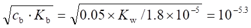
pH = 14 - 5.3 = 8.7
所以可用酚酞指示剂
0147 P→PO43-→MgNH4PO4→H3PO4→H2PO4-
1P2HCl
��(0.1012×25.00-0.1008×24.50)×30.97
w(P)
= ────────────────────×100% = 0.47%
200
0148 1. c(NaOH) =
0.1143×44.62/50.00
= 0.1020 (mol/L)
m(CO2)
= (0.1026-0.1020)×44.00
= 0.026 (g)
0.1020-0.1020
2. Er = ────────×100% = 0.6%
0.1020
0149 溶液中：n(H) = 25×0.40×3 =
30 (mmol) n(PO4)
= 30×0.50+25×0.40 = 25 (mmol)
所以混合后生成 HPO42-
20 mmol, H2PO4- 5 mmol
20/4
1. V(HCl) = ──── = 50 (mL)
0.10
5/4
2. V(NaOH) = ──── = 12.5 (mL)
0.10
0150
��(0.1000×50.00-0.2100×11.03)×180.2
w(乙酰水杨酸) = ───────────────────×100% = 88.1%
0.2745×1000
0151 c(H2SO4)
= (0.2940 g/100.09 g/mol)×(1/10.00mL)×1000 mL/L = 0.2937 mol/L
c(NaOH)×(11.20 mL/1000 mL/L) = 2c(H2SO4)×(10.00 mL/1000 mL/L)
c(NaOH) = 2×0.2937 mol/L/1.12 = 0.5245 mol/L
[c(NaOH)V(NaOH)-2c(H2SO4)V(H2SO4)]M(KHC4H4O6)
w(KHC4CH4O6) = ───────────────────────×100% =
95.5%
m(试样)×1000
0152 设试样中含有x g H3PO4, 则
0.4050-x x
0.2500×42.50
───── + ──── = ────────
141.9
98.00 1000
───
───
4 2
解得x = 0.1017 (g)
w(H3PO4) = (0.1017/0.4050)×100% = 25.11%
0153
(50.00×1.060-2.00)×0.1100×282.2
w(KNaC4H4O6)
= ───────────────────×100% = 85.7%
2×0.9230×1000
0154
(50.00-6.20×1.010)×0.1255×100.1
w(CaCO3)
= ───────────────────×100% = 54.95%
2×0.5000×1000
0155 H2C2O4・2H2O摩尔质量为126.1 g/mol
(0.1891×1000×2)/(0.1000×35.00)=108.1 <126.1
所以该草酸失去结晶水。
引起误差为 Er
= [(108.1-126.1)/126.1]×100% = -14.3%
0156 c(Fe3+)
= 0.02102×20.00/5.00
= 0.08408 (mol/L)
c(HCl) = (0.2010×30.00-2×0.02102×20.0)/5.00 = 1.038 (mol/L)
0157 以上反应的计量关系是:
n(KMnO4):n(Fe2+)
= 1:5;
n(KMnO4):n(KHC2O4・H2C2O4)
= 4:5;
n(KHC2O4・H2C2O4):n(NaOH)
= 1:3;
c(MnO4-)
= (0.1117×1000)/(1.0×55.85×5) = 0.4000 (mol/L)
c(KHC2O4・H2C2O4)
= 0.4000×0.2×5/4 = 0.1000 (mol/L)
所以V(NaOH) = (0.1000×1.00×3)/0.2000
= 1.50 (mL)
0158 在碱性中, MnO4-氧化HCOOH产物是MnO42-和CO32-,酸化时, MnO42-歧化成
MnO4-和MnO2
总的结果是 MnO4-→Mn2+
HCOOH→CO2
计量关系
n(MnO4-):n(HCOOH) = 1:5
n(MnO4-):n(Fe2+)
= 1:5
n(HCOOH) =
(0.02500×75-1/5×0.2000×40.63)×5/2 = 0.6245 (mmol)
所以c(HCOOH) = 0.6245/20.00 = 0.03123 (mol/L)
而HAc的量为: 0.1000×25.00-0.6245 = 1.876 (mmol)
c(HAc) =
1.876/20.00 = 0.0938 (mol/L)
0159 4MnO4-5KHC2O4・H2C2O415NaOH
1MnO4-5Fe2+
0.3038×1000
15
───────×0.2×──
151.90×5
4
V(NaOH)=
────────────── =
1.50 (mL)
0.2000
0160
0.1000×30.00×32.06
w(S)=
─────────────×100%
= 8.02%
2×1000×0.6000
0161 (1) H2C4H4O6+10Ce4++2H2O
= 4CO2+10Ce3++10H+
HCOOH+2Ce4+ = CO2+2Ce3++2H+
(2) (2c(H2C4H4O6)+c(HCOOH))×10.00 = 0.1000×15.00
(10c(H2C4H4O6)+2c(HCOOH))×10.00 = 0.2000×30.00-0.1000×10.00
解方程得: c(H2C4H4O6)
= 0.03333 mol/L
c(HCOOH) = 0.08334 mol/L
0162
1/4×(0.05000×20.00-2×0.02000×5.00) 58.69
w(Ni)
= ─────────────────────×────×100%
0.2000
1000
= 5.87%
0163
2×(36.32×0.01036-18.43×0.01142)×27.00
w(Al)=
──────────────────────×100%=2.231%
4.013×(10/100)×1000
{0.01036×36.32-[2×(36.32×0.01036-18.43×0.01142)]}×114.8
w(In)= ─────────────────────────────×100%
4.013×(10/100)×1000
=1.278%
0164 La2O3La2(C2O4)36Ce4+
0.1000×20×1/6×325.8
w(La2O3)
= ─────────────×100%=10.86%
1.000×1000
0165 2MnO4-+5H2SO3
= 2Mn2++4H++5SO42-+3H2O
0.1206×36.81
c(KMnO4)
= ───────── = 0.06386
(mol/L)
34.76×2
0.06386×5×10.00
V(Fe2+)
= ─────────── = 30.79
(mL)
0.1037
0166 Pb3O4Cl2I22Na2S2O3
0.1018×13.24×685.6
w(Pb3O4)
= ─────────────×100%
= 92.2%
2×0.5012×1000
0167
0.1000×25.00×(2/3)×107.9
w(Ag)
= ───────────────×100%
= 17.98%
1.000×1000
0168 1 Sb2S33SO26Fe2+
1 MnO4-5Fe2+
0.02000×31.80×(5/6)×2×121.7×100%
w(Sb)
= ────────────────────── = 51.33%
0.2513×1000
0169 1 Ca(ClO3)212Fe3+2Cr2O72-
(1/12)(0.1000×26.00-0.02000×6×10.00)×206.98
w[Ca(ClO3)2]
= ─────────────────────────×100%
0.2000×1000
=12.07%
0170 反应的计量关系是:
Pb3O4Cl2I22Na2S2O3
KIO3・HIO36I212Na2S2O3
Na2S2O3的浓度是:
c(Na2S2O3)
= 12×0.3249/389.9=0.01000
(mol/L)
��(0.01000×25.00)×685.6
故 w(Pb3O4) = ──────────────×100% = 85.70%
0.1000×1000
0171 设Fe2O3为x g, V2O5为y g
x/(160.0/2000)+y/(182.0/2000)
= 0.1000×16.00×500.0/50.00
x/(160.0/2000)+y/(182.0/3×2000) = 0.1000×32.00×500/50.00
解方程得: x = 0.640 g
y = 0.728 g
w(Fe2O3)
= 0.640/1.600×100% =
40.0%
w(V2O5)
= 0.728/1.600×100% =
45.5%
0172 计量关系 SO42-CrO42-3/2I23S2O32-
0.0251(6.76-0.35)×96.06/3
所以c(SO42-) = ──────────────×1000 = 64.4(mg/L)
(200/250)×100
0173 有关反应和滴定反应:
MnO+2Na2O2+H2O
= MnO42-+2OH-+4Na+
3MnO42-+4H+
= 2MnO4-+MnO2↓+2H2O
MnO2+2Fe2++4H+
= 2Fe3++Mn2++2H2O
MnO4-+5Fe2++8H+
= Mn2++5Fe3++4H2O
Cr2O72-+6Fe2++14H+
= 2Cr3++6Fe3++7H2O
即 3MnO3MnO42-1MnO22Fe2+, 1 MnO4-5Fe2+
(3/2)×(0.1000×10.00-5×0.01000×8.24)×70.94
w(MnO)=
───────────────────────×100% = 3.13%
2.000×1000
因为 1 Cr2O32 CrO42-1 Cr2O72-6 Fe2+
1 MnO22 MnO4-
1/6(0.1000×50.00-5×0.01000×18.40-5×0.5880)×152.0
w(Cr2O3) = ───────────────────────────×100%
= 1.44%
2.000×1000
0174 用KMnO4溶液处理SO2水溶液时的反应如下:
2MnO4-+5H2SO3
= 2Mn2++4H++5SO42-+3H2O
由反应中有关物质的物质的量之比可知,KMnO4溶液的浓度为:
2×0.1000×20.00
c(KMnO4)
= ────────── = 0.05000
(mol/L)
4×20.00
在酸性条件下,KMnO4和Fe2+反应时n(KMnO4):n(Fe2+)=1:5
则消耗Fe2+溶液的体积V为:
5×0.05000×20.00
V(Fe2+)
= ────────── = 25.00
(mL)
0.2000
0175
(0.05000×20.00-5×0.0106×5.55)×52.00/3
w(Cr)
= ──────────────────────×100% = 1.25%
1.000×1000
0176 设K2Cr2O7
x g, KMnO4为(0.2400-x) g
(0.2400-x)×5
6x 0.2000×30.00
─────── + ─── = ────────
158.0
294.2 1000
x = 0.1418 g
w(K2Cr2O7)
= (0.1418/0.2400)×100%
= 59.07%
w(KMnO4)
= (100-59.07)% = 40.93%
0177 因为n(MnO4-):n(H2C2O4)
= 2:5
0.006305×1000 2
所以c(MnO4-)= ─────────×── = 0.02000 (mol/L)
126.1
5
因为2BaSO4FeSO4(NH4)2SO4・6H2O1/5 MnO4-
0.2334×1000
所以0.02000 V(MnO4-)=
────────
233.4×2×5
解得V(MnO4-) = 5.00 mL
0178 (D)
0179 (B)
0180 1 , 6 ;
3 , 5
0181 (1) 突跃增加 2 pH单位
(2) 突跃增加 1 pH单位
(3) 突跃不变
(4) 突跃增大 1 pM单位
(5) 突跃不变
2101 半微量
2102 微量
2103 K2Cr2O7与Na2S2O3直接反应,产物不仅有S4O62-,还有SO42-,这样就无确定的计量关系
2104 CaCO3不溶于水,必须用过量HCl才溶解完全,因此必须采用返滴定方法
2105
1.B; 2.D; 3.C; 4.A
2106
1.B; 2.C; 3.D; 4.A
2107
1.A; 2.D; 3.B; 4.C
2108
1.B; 2.A; 3.C
2109 重量分析可借加入过量沉淀剂使反应完全,而容量分析只进行到化学计量点,不可多加试剂,故后者对反应完全度的要求高。
2110 因为：
(1) 生成BaSO4的反应不很完全,在重量法中可加过量试剂使其完全,而容量法基于计量反应,不能多加试剂;
(2) 生成BaSO4反应要达到完全,速度较慢, 易过饱和,不宜用于滴定, 而在重量法中可采用陈化等措施。
2111 (C)
2112 (B)
2113 (B)
2114 (D)
2115 (D)
2116 (1)物质的组成与化学式相符;
(2)纯度要高;
(3)稳定
2117 (B)
2118 (C)
2119 (C)
2120 不能; 不稳定, 易被氧化为Sn4+
2121 不可以; 不稳定, 易吸水及二氧化碳
2122 低; 部分失去结晶水; 置于密闭容器中保存
2123 偏低； 因Mr(Na2O)<Mr(Na2CO3),故耗V(HCl)多,HCl浓度必低
2124 不影响； 因Na2CO3和Na2O二者与HCl反应均按1:2计量进行
2125 造成浪费; 突跃小, 终点误差大
2126 酸碱反应的完全程度不如EDTA络合反应高,若浓度太稀,终点误差大。EDTA络合反应完全度高,可以稀一些,而且EDTA溶解度小,也难以配成0.1 mol/L溶液。
2127 上述说法不正确。
1. 此时必须增大试样量,使消耗体积与原来相近,这时过量1滴(0.04mL)所造成的误差为0.04×c/V×c = 0.04/V, 它仅与总消耗体积有关,而与浓度无关;
2. 对终点误差而言,则是浓度大些好,以NaOH滴定HCl为例,若是以酚酞为指示剂, Et
= 10-5×V/c×V = 10-5/c,即浓度大则终点误差小;
3. 浓度不能过大,原因是防止造成浪费。
2128 (C)
2129 (D)
2130 (B)
2131 (B)
2132 (C)
2133 36.0
2134 11.7
2135 3.3
2136 3.2
2137 0.357
2138 12.50 mL
2139 0.5g; 0.06g;
0.2g
2140 0.2; 0.6
2141 0.025
2142 25.00mL
2143 40.00mL
2144 1/2
2145 1:6
2146 1:2
2147 1.000
2148 0.6300g;
0.1064g
2149 0.05403
2150 w(H2O)
= [(0.9738-0.9656)/0.9738]×100% = 0.84%
干燥试样中； w(Fe)
= 51.69%×100/(100-0.84)
= 52.13%
2151 m(H2O)
= 5.30×5.00%+5.30×95%×4.00% = 0.466 (g)
w(H2O)
= [0.466/5.30]×100%
= 8.80%
(或w(H2O) = 5.00%+4.00%×(100-5)/100 = 8.79%)
2152 湿存水的百分含量:[0.9901-(14.0819-13.1038)/0.9901]×100% = 1.21%
结晶水的百分含量:[(14.0819-13.8809)/(14.0819-13.1038)]×100% = 20.55%
w(CaSO4・2H2O) = 20.55%×(136.14+36.04)/36.04 = 98.2%
2153 1. V(AgNO3)
= 0.2×1000×0.01/(0.1×166.0) = 0.12 (mL)
2. V(Na2S2O3)
= 0.2×1000×0.01/(0.02×166.0/6) = 3.6 (mL)
2154 1. c(KCN) =
0.1245×18.56/25.00 =
0.0924 (mol/L)
2.
V(AgNO3) = 18.56/2 = 9.28 (mL)
2155 m = [(0.001×32.06/233.4)/0.1000%]×100% = 0.1374 (g)
2156 m = [(5/2×0.02000×x×56.08)/(x%×1000)]×100% = 0.2804 (g)
2157 m = [(0.1×30×52/3)/(5%×1000)]×100% = 1 (g)
2158 m = [(0.05×30×63.55)/(20%×1000)]×100% = 0.47≈0.5 (g)
2159 m = [(6×0.02000×x×55.85)/(x%×1000)]×100% = 0.6072 (g)
2160 m(Zn) = 0.02×20×65.38/1000≈0.03 (g)
称取0.3g金属锌,溶解后定容于250mL,移取25mL作标定。
2161 m(K2Cr2O7)
= (0.02×20××294.2/(6×1000) = 0.02 (g)
称取0.02gK2Cr2O7溶于250mL容量瓶,移取250mL作标定。
2162 m = 0.1×30×134.0/2 = 0.2 (g)
2163 按x = (3×c×x/2×159.7)/(0.5000×1000)×100
解得c = 0.02087 (mol/L)
2164 (1) m = 0.020×25×5/2×56/50% = 0.14g, 称取约0.14 (g)
(2) m = [(0.02010×x×5/2×56.08×100%)]/(x%×1000)
=
0.2818 (g),
准确称取0.2818g(注意有效数字)
2165 (40.00-3.05×22.06/20.00)c(HCl) =
0.3500/(100.1/2)×1000
解出c(HCl) = 0.1909mol/L
c(NaOH) = 0.1909×22.06/20.00 = 0.2106 (mol/L)
2166 r =(0.002210×7.76×28.01×5/2)/3.21 =0. 374 (mg/L)
2167 (1) w(KI) =
[(0.05000×20.00-0.1023×25.34/6)×5×166.0/(0.6125×1000)]×100%
= 76.96%
(2) V(Na2S2O3)
= (0.05000×20.00 - 0.1023×25.34/6)×6/0.1023
= 33.31(mL)
2168 设耗HCl V(mL),则
0.1015×1.01×Mr(P)/24 = 0.1075×V×Mr(P)/2
V = 0.08mL
2169 m(KHC2O4・H2C2O4・2H2O) = 0.1012×22.55×254.2×4/(3×1000)
= 0.7735 (g)
m(Na2C2O4)
= 1.000-0.7734 = 0.2265 (g)
2170 w[CO(NH2)2]
= [1/2(0.2012×30.00
- 0.1122×8.02)×60.06/(0.1582×1000)]×100%
= 97.5%
2171 c(Ag+)
= 0.02000×23.70×2/25.00 = 0.03792 (mol/L)
2172 试样中Fe2O3质量为:
0.03333×3×25.00×159.7/1000 = 0.3992 (g)
试样中FeO质量为:0.3992×2×71.85/159.7 = 0.3592 (g)
所以w(FeO) = [0.3592/1.000]×100% = 35.92%
w(Al2O3)
= [(0.5000-0.3992)/1.000]×100% = 10.08%
2173 w(S) =
[(0.2671×4×32.06/159.7)/0.5080]×100% = 42.22%
2174 w(CaO) =
{[0.1502×(30.00-4.02/1.132)×56.08/2]/(0.2212×1000)}×100% = 50.36%
2175 c(K+)
= (0.05580×29.64×39.10/4)/250 = 0.06467 (mg/mL)
2176 c(NaF) =
[0.02012×(30.52-26.05)×41.99×2]×10/25.00 = 3.021 (g/L)
2177 c(NaCN) =
[0.05015×(24.70-9.32)×49.01×4]/25.00 = 6.048 (g/L)
2178 Mr(CO2)
= 100.1-56.08 = 44.02
100g试样中CaCO3质量为5.00/44.02×100.1 = 11.37 (g)
所以w(CaCO3) = 11.4%
2179 (2);
(1), (3); (4)
2180 (2);
(1); (3)
2181 (4); (3)
4101 Na2B4O7
×H2O失水
4102 加过量Fe3+溶液，与Sn2+定量反应后，在硫―磷混酸介质中，以二苯胺磺酸钠为指示剂, 用K2Cr2O7标准溶液滴定Fe2+。
4103 返、间接、置换
4104 5.7; 6.0
4105 ( 1 )
0.004212; ( 2 ) 0.005565 ； ( 3 ) 0.004655 ； ( 4 ) 0.006008
4106
4107
4108
按等物质的量规则：
n (1/5 KMnO4) = n (H2O2)
应使 c (1/2 H2O2) =0.10 mol / L
稀释倍数为1.8 ¸ 0.10 = 18
4109 ( 1
)0.005585 ( 2 ) 0.007984 ( 3 )
0.004946 ( 4 ) 0.001701
4110 ( 1 ) 0.007585
; ( 2 ) 0.001177
4111 (3) ；(1)
4112 化学计量点 ； 滴定突跃
4113 (1) A
; (2) B、 A ; (3) B、C、 A
; (4) B ; (5) D
4114 物质间的化学反应，滴定， 重量； 物质的物理性质和物理化学性质。 准确，灵敏
4115 取样、 试样分解、 干扰组分的掩蔽和分离、 测定、
计算结果。
4116 络合掩蔽、 沉淀掩蔽、 氧化还原掩蔽
4117 溶解、 熔融、 干灰化
4118 1.滴定过程中两反应物的量正好符合化学反应式所表示的化学计量关系的那一点；
2.指示剂变色而停止滴定的那一点；
3.滴定终点与化学计量点不一致引起的误差；
4.可以直接配制标准溶液或标定标准溶液浓度的物质；
5.已知准确浓度的溶液。
4119 常量 ， 1 % ， 微量 ， 1 %
4120 C
4121 反应速度较慢、无合适指示剂、试样为固体、气体； 不、返滴定法不改变化学计量点的位置和滴定突跃的大小。
4122 沉淀分离、萃取分离、离子交换分离、色谱分离、蒸馏及挥发法等。
4123 1.0；0.12；0.66； 0.42；0.15
4124 0.75, 1.13
4125 (1) H2SO3
、 (2) H3PO4、 (3)1/2 H3PO4、 (4) NH3 、 (5) 1/2 I2
4126 (1) 1/6 IO3-
、
(2) 1/6 Cr2O72- 、 (3) 1/5 IO3- 、 (4)1/2 H2C2O4、 (5)1/5 KMnO4
4127 236；420；23.6
4128 2.0； 10.6； 0.16； 0.16； 3.350
4129 3.67、0.69、1.81
4130
2K4Fe(CN)6 + 3 Zn2+
= K2Zn3[Fe(CN)6]2¯ + 6K+
4131 0.01683；0.1010；0.005641；0.007257；0.008065
4132 3 : 4
4133 3 : 2
4134 1 : 52
4135
4136 m (H2C2O4×2H2O)
= 0.1070 ´ 34.40 ´ 10-3 ´ 126.07/2 = 0.2320 g
m (Na2C2O4) = [50.00 ´ 0.1250 -(2.59 +
34.40) ´ 0.1070] ´ 10-3 ´ 134.0/2 = 0.1536 g
w (Na2C2O4) = 0.1536 / 0.7050 × 100%
= 21.79%
w (H2C2O4×2H2O) = 0.2320 /
0.7050 × 100% = 32.91%
4137 c (HAc) =
0.4034 ´ 30.24 ¸ 20.00 = 0.6099 (mol/L)
w(HAc) = [ (0.6099 × 60.05) / (1.055 × 1000) ]× 100%=3.472%
4138
设KHC2O4×H2C2O4×2H2O的质量为mg，则
4139 设Na2C2O4的质量为m、KHC2O4×H2C2O4的质量为am :
a =
0.475
m (Na2C2O4)
: m (KHC2O4×H2C2O4)
= 1 : 0.475
4140 500.0´ 0.2000 =
(0.005000 ´ 1000 ´ 2/56.08) ´ (500.0 +V )
V
= 60.8 mL
4141 3.2；2.9；3.3
4142
设Na2C2O4质量为m g
4143 1
: 9
4144
4145 0.40
4146 1/2 H2C2O4×2H2O、 1/4 KHC2O4×H2C2O4×2H2O、 1/5 KMnO4
4147
4148
4149 0.005000、 94.7 %
4150 4.389
误差与数据处理答案（b）
0201
(A)
0202
(A)
0203
(B)
0204
(D)
0205
(C)
0206
(B)
0207
(B)
0208
(D)
0209
(B)
0210
(C)
0211
(B)
0212
(D)
0213
(D)
0214
(A)
0215
(B)
0216
(A)
0217
(D)
0218
(C)
0219
(D)
0220
(A)
0221
(C)
0222
(C)
0223
(B)
0224
(B)
0225
(D)
0226
(A)
0227
(C)
0228
(B)
0229
1. 系统; 2. 过失; 3. 系统; 4. 随机
0230
误差 , 测定结果与真实值差异
偏差 , 平行测定结果相互接近程度
0231
系统
, 相对校准
0232
1. 系统误差; 2. 随机误差; 3.过失; 4. 过失
0233
过失 , 系统误差 , 过失 , 随机误差
0234
-2.5％
0235
不正确
因为单次测定结果的偏差和应当等于零,即
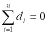
而上述测量
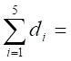
+0.04-0.02+0.01-0.01+0.06
= 0.08 ≠0
显然计算不正确
0236
15.8％
0237
标准差s , 总体平均值m
离散程度
, 集中趋势
0238
偶然(或随机) ; 集中趋势
; 真值 ; 分散程度
0239
t分布
正态分布
正负误差出现的概率相等;小误差出现的概率大,大误差出现的概率小,特大误差出现的概率很小。
0240
t分布,
t, 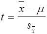
概率密度,
自由度,
f = n-1
0241
大, 小,
t , 正态 ,
低, 宽(或大), 好(或大)
0242
5.24%, 0.070%,
0.035%, (5.24±0.11)％
0243
置信区间: 0244
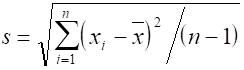
分散程度(或精密度)
0245
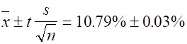
0246
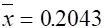
s = 4.3×10-4
CV = 2.1‰
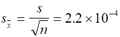
0247
t
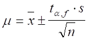
0248
置信区间
置信度(置信水平)
0249
(1) 60.65% ~ 60.71%
(2) 无
0250
20
增加试样质量, 适当减小标准溶液浓度
0251
标准试样, 标准方法, 加入回收法
0252
3, 10 g
0253
第二
, 3
0254
62.2%
0255
(1)
5.0; (2) 5.0000; (3) 5.0; (4)
5.00
0256
(1) 21
, (2) 3.5
0257
0.03256 ; 0.8725
; 1.034 ; 16.09
0258
二位
, 四位
0259
0.0160
, 22
0260
二
; 四 ; 无限
; 二
0261
3
, 4 , 5
, 2
0262
+0.27
0263
+3
0264
(20.01+20.04+20.04+20.05+20.06)
平均值 =
──────────────── %
=
──────────────── %
5
= 20.04％
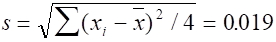
查表得置信度为95％的t值为2.78
所以 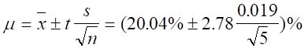
=
(20.04 ± 0.024)% ≈ (20.04 ± 0.02)%
0265
因为
要使置信区间不超过s,则必须 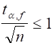
即 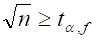
亦即 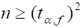
查有关t值表,当n=6时, f=5,
t2= 2.572 = 6.6,不满足以上条件
n=7时, f=6,
t2= 2.452 = 6, 满足以上条件
故至少应平行测定7次
0266
解: 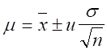
,
95％置信度时u=1.96
0.12
n = 1 , m = (9.56±1.96×───)% = (9.56±0.24)%
�� 1
0.12
n = 4 , m = (9.56±1.96×───)%
= (9.56±0.12)%
�� 2
0.12
n = 9 , m = (9.56±1.96×───)%
= (9.56±0.08)%
�� 3
上述计算结果说明:
在相同的置信度下,多次测定平均值的置信区间比单次测量的置信区间
要小,即所估计出的真值可能存在的范围较小(估计得准确),说明平均值
比单次测量值要可靠,更接近真值。测定次数愈多, 所估计出的真值范
围愈小, 平均值愈接近真值。
0267
标 =
8.95% s标
= 0.060% f=2
新 =
9.02% s新
= 0.066% f=3
(9.02-8.95)% ─────
t
= ─────── Ö 3×4/(3+4)
= 1.43
(6.3×10-2)%
查t0.05,5 = 2.57 > t计算,新方法未引入系统误差,可以被
接受。平均值的置信区间为:
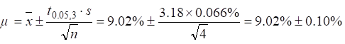
0268
40.00+40.15+40.16+40.18+40.20
(1) = ──────────────── = 40.14(%)
5
s
= 0.079%
│-40.00│
t = ───────
= 1.77 > t0.05,5(=1.67)
0.079
所以40.00值应该舍弃
(2) t检验:
40.15+40.16+40.18+40.20
�� =
───────────── =
40.17(%)
4
s = 0.022%
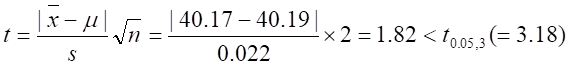
新方法不引起系统误差,可以被承认。
0269
m; 点(或定值)；m; 区间
0270
2.28%; 3
0271
c(1/5KMnO4)=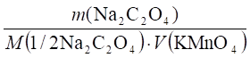
可简写为：c=k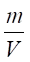
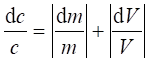
=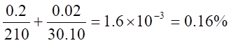
0272
=24.64mL， SV=0.022 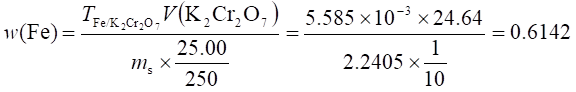
可将上式简写为：w=k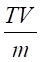
,
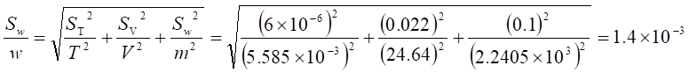
0273
(1)
n=6,  =60.56%, s=0.12%
=60.56%, s=0.12%
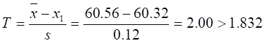
60.32应舍去
（2）n=5, 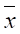
=60.61%, s =0.036%
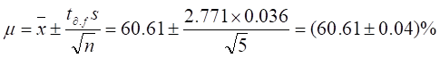
(3) 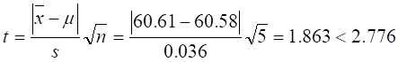
测量无系统误差
0274
1.678，1.678
0275
=， 5.6×10
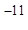
mol/L, 1.8×10－4mol/L
0276
=, 2.60
0277
三, 4.745
0278
二，7.6×10-3mol/L
0279
2.457,
2.456
0280
0.25%
0281
(D)
0282
2.500×10-2L或25.00mL
0283
1.19%
0284
32.2%
0285
(B)
0286
(D)
0287
0.2500g,
24.10mL
0288
5.5×10-10
0289
高，不一定
0290
(C)
0291
(D)
0292
解：=5.02, E=5.02-5.03=－0.01mg/L,
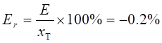
0293
解：（a）10mg试样含Br: 10×10%=1.0mg
相对误差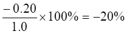
绝对误差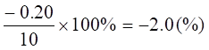
同理得: （b）－4.0%,－0.4(%) (C) －2.0%, －0.2(%)
0294
(C)
0295
系统误差，随机误差
0296
小，不一定
0297
随机，系统
0298
－0.02(%)，－1.5%
2201
(C)
2202
(A)
2203
(C)
2205
(B)
2206
(D)
2207
系统
2208
-0.05% , -0.09%
2209
不能,只能说不存在系统误差,但人眼判断颜色有±0.3pH(或pM)的不确定性,总有随机误差存在,故不会为零。
2210
B,A和C,D
2211
-0.29×10-3
Er
= ────────×100%=-0.24%
0.20×60%
2212
解: (a) 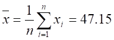
%
(b) 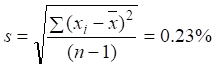
(c) (s/)×100% = 0.48%
(d) E = 47.15%-(35.45/74.55)×100%
= -0.40%
(e) Er = (-0.40/47.55)×100% = -0.84%
2213
解: =
0.029 (%)
E
=-xT = 0.029-0.030 = -0.001 (%)
Er
= (E/xT)×100%
= (-0.001/0.030)×100% = -3.3%
2214
(D)
2215
(D)
2216
(B)
2217
(B)
2218
(C)
2219
(A)
2220
总体平均值,总体标准差,
y =
[1/(s(2p)1/2)]exp[-(x-m)2/(2s2)]
2221
m, s
2222
(C)
2223
(D)
2224
(A)
2225
(D)
2226
(B)
2227
(D)
2228
(C)
2229
(C)
2230
(D)
2231
好(或高),小,减小,变化,4～6
2232
解: =
0.1085(mol/L)
d
= (1/3)(0.0002+0.0001)
=
0.0001(mol/L)
d/= (0.0001/0.1085)×100% = 0.09%
2233
解: 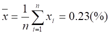
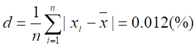
(d/)×100% = (0.012/0.23)×100% = 5.2%
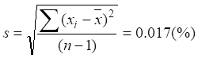
CV = (s/)×100% = 7.4%
2234
解: (a) m = ±ts/n1/2 = 58.62±2.02×0.11/61/2
= (58.62±0.09
)(%)
(b) m = 58.62±3.18×0.11/41/2 = (58.62±0.17)(%)
2235
解: Q = (xn-xn-1)/(xn-x1)
= (29.24-29.08)/(29.24-28.97) = 0.59
Q(0.90,4) = 0.76>0.59
以10%的危险率保留29.24这个值
= 29.08, s = 0.12
m = ±ts/n1/2
= 29.08±2.35×0.12/41/2
= (29.08±0.14)(%)
90%的把握认为置信区间为(28.94~29.22)%
2236
解: =
10.79
Er = [(-xT)/xT]×100%
=
[(10.79-10.77)/10.77]×100% = 0.19%
s
= 0.042
m = ±ts/n1/2
= 10.79±2.31×0.042/91/2 = (10.79±0.03)(%)
即10.76%~10.82%
有95%的把握断定区间(10.76%~10.82%)将把纯明矾含铝量的真值包含在内
2238
解: =
40.50, s = 0.06
P
= 90%: t(0.10,3) = 2.35
m = ±ts/n1/2
= 40.50±2.35×0.06/41/2 =( 40.50±0.07)(%)
P
= 95%: t0.05,3 = 3.18
m = ±ts/n1/2
= 40.50±3.18×0.06/41/2
= (40.50±0.10)(%)
2239
解: P = 90%: m = ±us/n1/2
= 51.46±1.64×0.041/31/2
= (51.46±0.04)(%)
P = 95%: m = 51.46±1.96×0.041/31/2
= (51.46±0.05)(%)
置信度提高,判断的把握增加,但置信区间增大了。
2240
解: t = (|-m|)/(s/n1/2)
=
(0.109-0.105)/(0.008/41/2) = 1.00
t0.95,3
= 3.18>1.00
��与μ之差不显著,无系统误差存在
t
= 0.004/(0.008/201/2) = 2.24
t0.95,20
= 2.09<2.24
��与μ之差显著,有系统误差存在
2241 解: = 0.158
(mg/mL)
s
= 4.0×10-3(mg/mL)
m = ±ts/n1/2
= 0.158±3.18×4.0×10-3/41/2
= (0.158±0.006)(mg/mL)
2242
解: 置信区间为m = ±us/n1/2
故us/n1/2
= 0.50
n1/2
= 1.96×0.80/0.50
n≈10(次)
2243
解: u = (-m)/(s/n1/2)
= (0.532-0.520)/(0.07/41/2) = 0.343
u0.95
= 1.96>0.343 表明与m之差不显著
分析结果合格
2244
解: =
7.6mmol/L s = 0.084mmol/L
CV
= (s/)×100% = 1.1%
m = ±ts/n1/2
= 7.6±2.26×0.084/101/2
= (7.6±0.06) (mmol/L)
t = (-m)/(s/101/2)
= (7.6-6.1)/(0.084/101/2) = 33.88
t0.95,9
= 2.26<33.88
与m之差显著,有95%把握说此人血糖含量不正常。
2245
解: 先检验s1与s2差异是否显著
F
= s12/s22 = 1212/722
= 2.94
a = 0.10,双边检验,F表值用F0.05,5,4 = 6.26>2.94,差异不显著
s
= {[s12(n1-1)+s22(n2-1)]/(n1+n2-2)}3/2
= 10
t
= [(1-2)/s][n1n2/(n1+n2)]1/2
= 1.32
t0.10,9
= 1.83>1.32 表明1与2无显著性差异。
2246: 解: (a) F = s12/s22
= 1.40
F0.05,19,19 = 2.18>1.40
s1与s2不显著,作此判断的把握为90%(双边检验)
(b)
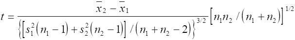
t0.95,38 = 2.02>1.31
1与2差异不显著,作此判断的把握为95%
2247
解: 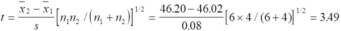
t0.95,8
= 2.31
t
> t0.95,8 , 1与2有显著性差异
2248
解: Q = (x4-x3)/(x4-x1)
= (14.64-14.46)/(14.64-14.41) = 0.78
表值Q0.90,4 = 0.76
Q
> Q0.90,4 故14.64应舍弃
2249
解: P = 95% u
= 1.96
(a) m = ±us = (5.9±1.96×0.25)×10-10 = (5.9±0.5)×10-10
即 5.4×10-10~6.4×10-10
(b) m = ±us/n1/2
= (5.9±1.96×0.25/31/2)×10-10 = (5.9±0.3)×10-10
即 5.6×10-10~6.2×10-10
2250
解: s = s = 0.05
t
= (│1-2│/s)[n1n2/(n1+n2)]1/2
= [(0.16-0.12)/0.05][5×5/(5+5)]1/2 = 1.26
因为s = s 所以 f = ∞
t0.95,∞ = 1.96>1.26
1与2差异不显著,有95%的把握相信两个样来自同一总体。
2251
解: 0
= 0.42 s0 = 0.25 n0
= 5
= 0.64 s
= 0.25 n = 5
检验与0差异是否显著,单边检验
t
= [(-0)/s][n0n/(n0+n)]1/2
= [(0.64-0.42)/0.25][5×5/(5+5)]1/2 = 1.39
t0.10,8
= 1.86
t
< t0.10,8, 不显著, 95%的把握未喷洒DDT。
2252
(C)
2253
(B)
2254
(C)
2255
0.2
2256
解: 设称样x g 则
-0.5×10-3
────── = -0.1%
x×5.0%
x = 10(g)
最少要称样10g
2257
进行对照试验,回收试验,空白试验,校准仪器和用适当的方法对分析结果校正。
2258
解: 二次测定平衡点最大极值误差为±0.2mg
±0.2×10-3
Er1 = ────────×100% = ±0.4%
0.05
±0.2×10-3
Er2 = ────────×100% = ±0.1%
0.2
±0.2×10-3
Er3 = ────────×100% = ±0.02%
1.0
说明称样量越大,相对误差越小,定量分析要求误差小于0.1%,称样量大于0.2g即可,过大对试样处理操作不便。
2259
(C)
2260
(D)
2261
(D)
2262
(B)
2263
(B)
2264
(D)
2265
1.8×10-5
2266
(C)
2267
(C)
2268
(C)
2269
(C)
2270
10.09%
2271
0.2548g
2272
0.0255
2273
三位,9.84×10-3
2274
系统
2275
系统
2276
(C)
2277
(C)
2278
(C)
2279
(C)
2280
(D)
2281
(A)
2282
0.500或±0.001
2283
标准偏差
2284
解:  =2.7×10-8 mol/L, s =0.29×10-8 mol/L
=2.7×10-8 mol/L, s =0.29×10-8 mol/L
2285
解：=1.007,
d1=-0.002, d2=0, d3=0.001,
d4=-0.001, d5=0.002
2286
解：=(N)=16.62%,
d1= -0.10%, d2=0.25%, d3=-0.21%, d4=0.08%=
s==0.20%
2287
0, 不为0（或填各偏差绝对值之和除以测定次数）
2288
解： =0.099%
=0.099%
 =（0.002+0.001+0.001+0.003+0.001）/5=0.0016%
=（0.002+0.001+0.001+0.003+0.001）/5=0.0016%
s==0.002%
,
2289
(B)
2290
解：=0.1026 mol/L, s=0.00046
mol/L
T0.05,4=1.46<1.52 显著，将0.1019舍去
然后求三次测量值的平均值和标准偏差
=0.1028mol/L, s=0.0001mol/L
2291
解=79.31%, s=0.094%
2292
解: 三次：
m =±=26.44
=（26.44±0.16）(mg/mL)
七次 m=±=26.44
=(26.44±0.10) (mg/mL)
2293
解=60.55%, s=0.041%
即：60.50%~60.60%，真值
xT= m=
有95%的把握认为该区间不包含真值在内。
2294: 解
m=0.64±
2295: 解
(1)
Q=,
Q0.90,5=0.64<0.75 差异显著
37.15%这个值应舍去
（2）去掉37.15%后求四次测定的平均值，=39.32%, s=0.021%
2296
解 =1.49%, s=0.058%
即1.43%~1.55%，有90％的把握该区间包含真
值在内
2297
解: m=±，
=m±=2.75
即：2.70% ~2.80%
2298
解:=0.1mmol/L, , 需测定五次
4201
解: m =±,
=2.62%－2.52% = 0.10%,
4202
解: m =±
4203
两次：= 1.14%, s=0.021% m =
五次:=1.13%, s = 0.022%
m =
两次测定比五次的置信区间大
4204
解: p=0.95% (α=0.05)
m=±
=62.32
p=0.99%(α=0.01)
m
=±
m
= 62.32结论：置信度高， 置信区间大
4205
解: = 31.27%, s=0.055%
90%:
m= 95%:
m =
4206
解：先检验 s1与s2是否相等。双边检验，用95%的F表
（F0.05,3,2） 差异不显著
差异不显著
s p ==
t计
==
双边检验t0.10,5=2.02> t计, 90%的把握认为两个平均值无显著性差异
4207
解：=1.47%，s=0.053%
t计=
双边检验t0.05,5=2.57> t计
95%的把握认为新方法平均值与真值无显著性差异，新方法可行。
4208
解：1=56.11%，s1=0.032%，n1=3, 2=55.95%，s2=0.060%, n2=3
置信度90%，F0.95,2,2=19.00>F计, 不显著
sp=
=（%）
t计=== 4.08
置信度95%，单边检验用90% 双边t表，t0.10,4=2.13<t计
95%把握认为滴定法结果偏低。
4209
解：=4.96%，s=0.11%，
T0.05,5=1.67>T计，保留4.80这个值
t0.05,4=
2.78< t计, 有显著性差异，
有95%的把握认为该分析方法存在系统误差。
4210
解：格鲁布斯法：=20.06，s=0.073,
T计=
T0.05,6=1.82< T计, 应舍去
Q检验法：Q==
Q0.95,6 = 0.64< Q计, 应舍去
两种方法都认为20.20为异常值，置信度是95%。
4211
解：
5次：t0.05,4=2.78>t计, 不显著。
有95%的把握认为该分析方法不存在系统误差。
20次：t0.05,20=2.09< t计 , 显著
有95%的把握认为该分析方法存在系统误差
4212
解：=0.072mg/L，s=0.0079mg/L
单边检验，t0.10,7=1.90<2.15, 显著
t0.05,7=2.36>2.15, 不显著
显著水平为0.10时，此人血铅含量高。
若显著水平为0.05时，则此人血铅含量不高。
4213
解：=2.71%，s=0.07%
,
单边检验，t0.10，3=2.35
>t计, 不显著
有95%的把握认为结果不偏低
4214
解：
单边，F0..05，,3，3=9.28>5.44,差异不显著
sp=
=(%)
=
双边：t0.10,6 = 1.94<t计, 90%把握认为两种方法间存在系统误差。
4215
解：
s=0.10%
4216
解：90%：95%：结论：置信度高时置信区间大。
4217
解：，
n=4, t0.10,3=2.35, t2=5.52>4
n=5, t0.10,4,=2.13, t2=4.54<5,
五次，
n=2, t0.10,1=6.31,
=9.95>2,
n=3, t0.10,2=2.92,
=2.13<3, 三次，
结论：相同置信度时，若置信区间大，平行测定次数可少些。
4218
解：=1.23%, s=0.059%
m=±1.23
4219
解:
90%：n=4,t0.10,3=2.35,
t2=5.5>4
n=5,
t0.10,4=2.13, t2=4.5<5, 五次
95%：n=6, t0.05,5=2.57, t2=6.6>6
n=7, t0.05,6=2.45, t2=6.0=6
七次
结论：当要求置信区间大小一定时，置信度越高平行测定次数越多。
4220
解：
=2.71%, s=0.070%,
p=95% (a=0.05)
2.60% ~2.82%, 95%的把握该区间不包含真值在内。
p=99% (a=0.01)
2.51% ~2.91%, 99%的把握该区间包含真值在内。
4221
解:
单边检验，概率=0.45，u0.05=1.65 < u计
95%把握认为杂质含量明显降低。
4222
解：s1=0.054%, s2=0.056%,
=1.08
双边检验置信度90%，用95%的单边F表, F0.05,2.,3=9.55>F计
有90%的把握认为两种方法的精密度无显著性差异。
4223
解：
双边检验，90%置信度用95%的单边F表, F0.05,4，5=5.19>F计
有90%的把握认为两种方法的精密度无显著性差异。
4224
解：=0.2037,
s=0.00065，
t0.05,3=3.18> t计, 无显著性差异。
检验0.2046：=0.2036,
s=0.00057，
T计=
0.2046这个值应舍去。
=0.2034, s=0.00022，
t计=
t0.05,3=3.18<t计
4225
解：=0.2037mol/L, s=0.00065mol/L，0.2046mol/L保留
五次测定：=0.2036mol/L,
s=0.00057mol/L,
T计=
T0.05,5=1.67<T计
有95%的把握认为0.2046 mol/L这个值应舍去。
舍掉后 =0.2034mol/L,
s=0.00022mol/L
(mol/L)
4226
解：三次：=48.38%,
s=0.091%，
T计=
保留
四次：=48.40%, s=0.079%
T计=
95%的把握认为48.28%这个值应舍去。
舍掉后 =48.44%, s=0.015% ，
m=t计=
t0.05,2=4.30＜t计, 有95%的把握认为平均值与合格值有显著性差异。
4227
解：=5.07%,
s=0.05%
单边检验a=0.05, 用90%的双边t表t0..10,3=2.35<t计
有显著性差异, 有95%把握认为醋酸含量明显偏高，需重新勾兑。
4228
解：1=2.38%，s1=0.068%，n1=4, 2=2.46%，s2=0.074%, n2=4
双边检验, 90%置信度用95%的单边F表, F0.05，3，3=9.28>F计
无显著性差异。求合并方差(%)

=
t0.10,6 = 1.94>t计 90%把握认为两种方法间无显著性差异。
4229
解：
单边检验，u0.10=1.64<u计
95%把握认为纯度有明显提高。
4230
解：（1）=1.28%
Ea=1.28%-1.31%= -0.03%
Er=
(2) =1.28%, s=0.015%
t0.05,2
= 4.30> t计, 有95%的把握认为平均值与标准值无显著性差异。
4231
(D)
4232
(D)
4233
（D）
4234
(C)
4235
（C）
4236
（B）
4237
（D）
4238
（C）
4239
（C）
4240
解：先计算方括号内：
原式=，
结果为：1.7（±0.2）×10-6
4241
解：SR==0.16
R=396.3（±0.2）
4242
相对误差： 
绝对误差： Ea=0.035R
= 0.035×0.010406 = 0.0004
校正值： C=
-Ea= -0.0004 结果为： 0.0104－0.0004
4243
解： Sv1=
S1 = 0.02 mol/L Sv22=
S22 + S22 = 0.012 +
0.012 = 2×0.012（mol/L）2
Sc12= c12×1.14×10-6
= 0.12502×1.14×10-6
= 1.78×10-8 (mol/L)2
Sc1 = 1.3×10-4 (mol/L)
c1= c(NaOH)=
(0.1000±0.0001)(mol/L)
4244
解：（a）SR =
(b)
(c) R = 23.8(±0.2)
4245
解：
4246
解：
(1) Ea = 0.03
+ (-0.001)－(-0.01) =
0.039
R = 0.57(+0.04)
(2) ,
Ea = 0.0312×(-0.022) = - 0.0007
R = 0.0312 (-0.0007)
4247
(B)
4248
(B)
4249
(A)
4250
(B)
4251
(C)
4252
(A)
4253
(A)
4254
(B)
4255
(C)
4256
(D)
4257
(A)
4258
(D)
4259
(B)
4260
(B)
4261
(C)
4262
(C)
4263
(D)
4264
(A)
4265
(C)
4266
(C)
4267
(D)
4268
(A)
4269
(B)
4270
(D)
4271
(C)
4272
(A)
4273
(C)
4274
(A)
4275
(C)
4276
(C)
4277
(B)
4278
(B)
4279
(A)
4280
(A)
4281
(A)
4282
(D)
4283
(D)
0301
(B)
0302
(C)
0303
(B)
0304
(A)
0305
(A)
0306
(C)
0307
(D)
0308
(C)
0309
(B)
0310
(A)
0311
(B)
0312
(B)
0313
(C)
0314
(B)
0315
(C)
0316
(C)
0317
(B)
0318
(D)
0319
(B)
0320
(B)
0321
(C)
0322
(B)
0323
(B)
0324
(B)
0325
(B)
0326
(B)
0327
(D)
0328
(B)
0329
(B)
0330
(C)
0331
(A)
0332
(C)
0333
(D)
0334
(C)
0335
(C)
0336
(C)
0337
(D)
0338
(B)
0339
Kb1 =
2.3×10-10
(10-9.63)
Kb2 =
1.1×10-11
(10-10.96)
0340
1.8×10-4, 2.4×10-8 (10-3.75,
10-7.62)
0341
1.64
6.80 11.88
0342
8×1011, 4×105, (1011.9,
105.6)
3×1017, 4×1020 (1017.5,
1020.6)
0343
10-7.60,10-9.24,104.76,103.13
0344
PO43-,
H2PO4-,
[H+]+2[H3PO4]+[H2PO4-]
= [OH-]+[PO43-]
0345
pH > 4.2
pH = 2.7 pH = 4.2 pH = 2.7
0346
2.0, 3.5, 3.5,
5.0
0347
|
H3PO3
|
[H3PO3]=[H2PO3-]
|
H2PO3-
|
HPO32-
|
0348
0.56
0349
H2PO4-+
HPO42- ; 1:1
0350
=
>
0351
1.
B 2. C 3. A
0352
1.
C 2. A 3. B
0353
[H+]-0.30 =
[OH-]+[SO42-]
0354
[H+]+[H2CO3]
= [OH-]+[CO32-]
0355
[H+]+[HA] =
[NH3]+[OH-]
0356
[H+]+[HSO4-]
= [OH-]+[HCO3-]+2[CO32-]
0357
1. [H+]+[HAc]
= [NH3]+[OH-]
2. [H+] = [SO42-]+[OH-]+0.1
0358
[Na+] = 0.2mol/L
[CO32-]+[HCO3-]+[H2CO3]
= 0.1mol/L
0359
[H+]+[H2PO4-]+2[H3PO4]
= [NH3]+[PO43-]+[OH-]
[H+] = [SO42-]+[OH-]+0.1mol/L
0360
[NH4+]+[NH3]
= 2([H2CO3]+[HCO3-]+[CO32-])
= 2c
0361
1. [H+]+[HSO4-]
= [OH-]
2. [H+] =
[HCO3-]+2[CO32-]+[OH-]
0362
c=[NH4+]+[NH3]=
[H2C2O4]+[HC2O4-]+[C2O42-]
[NH4+]+[H+]
= [HC2O4-]+2[C2O42-]+[OH-]
2c=[NH3]+[NH4+]=
2([H3PO4]+[H2PO4-]+[HPO42-]+[PO43-])
0363
[NH4+]+[H+]=
[H2PO4-]+2[HPO42-]+3[PO43-]+[OH-]
0364
───────
────
1. [H+] = ÖKa(NH4+)Ka(HCN)
= Ö10-9.26-9.21
=10-9.24
──────────────
2. [H+] = ÖKa(NH4+)[NH4+]/(1+[A]/Ka(HA))
────────────
= Ö10-9.26-1.00/(1+101.00/10-1.30)
= 10-5.37
0365
由题意可知,指示剂的变色pH范围为
pH = pKa±1.3
[HIn] [H+]
即 ─── = ─── =
101.3 = 20
[In-] Ka
[HIn] 20
────── = ── = 0.95
[HIn]+[In-] 21
所以指示剂刚显酸色或碱色时,HIn或In-形式所占的百分比为95%。
0366
10.23, 1010.23,
103.77
0401
(C)
0402
(D)
0403
(D)
0404
(C)
0405
(C)
0406
(B)
0407
(A)
0408
(B)
0409
(A)
0410
(D)
0411
0412
(B)
0413
(D)
0414
(A)
0415
(C)
0416
(C)
0417
(C)
0418
(D)
0419
(C)
0420
(C)
0421
(B)
0422
1. B
2. A 3. B
4. C
0423
1. A
2. B 3. B
4. A
0424
1. B
2. D 3. A 4.
C
0425
[OH-] =
[H+] =
[H+] =
0426
2.48, 11.51
0427
2H++ B4O72-
+ 5H2O = 4H3BO3
[H+] =
[H+] = = 10-5.12
0428
3.98 , 8.46
0429
7.00 , 9.24
0430
4.42
, 10-8.58
0431
9.78 , 4.66
0432
缓冲物质总浓度,
酸与共轭碱浓度比
0433
0.575(c(HA)+c(A-))
0434
9.26
0435
4.66
0436
4.85
0437
16.4 g
0438
7.8
0439
1. ＞; 2. ＝
0440
4.1─6.1 , 5
0441
14g, 2.6mL
0442
(D)
0443
混合后溶液中:
总Y为 5+5×10-3×1000=10 (mmol)
总H+为 5×4-5×10-3×1000=15 (mmol)
b2
H+与Y4-反应生成5 mmol HY, 5 mmol H2Y,
(K2= ── = 106.16 )
b1
[H2Y]
1 1
[H+] = ──── = ─── =
──── = 10-6.16
[HY]K2 K2
106.16
pH = 6.16
[Y]:[HY] :[H2Y]
:[H3Y] :[H4Y]
= 1: [H+]β1:[H+]2β2:[H+]3β3:[H+]4β4
= 1:10-6.16+10.26:10-12.32+16.42:10-18.48+19.09:10-24.64+21.09
= 1:10+4.10:10+4.10:100.61:10-3.56
0444
c(HCl)>>c(H2PO4-),溶液[H+]由HCl决定
pH = 1.00
10-4.74
[Ac-]= cx0=10-5.7──────── =10-9.44
10-4.74+10-1.0
= 3.6×10-10
(mol/L)
[PO43-]=
cx0
10-21.68
=
10-3.0────────────────
10-3.0+10-4.12+10-10.32+10-21.68
= 10-21.71 = 1.9×10-22 (mol/L)
0445
将ClCH2COOH简写作HB,混合后形成HCl+HB溶液
0.10
0.12-0.10
c(HB)
= ── = 0.050
(mol/L), c(HCl) = ────── = 0.010 (mol/L)
2
2
PBE: [H+]
= [B]+c(HCl)
0.050×1.4×10-3
= ────────── + 0.01
[H+]+1.4×10-3
解得[H+] = 1.4×10-2
mol/L pH = 1.85
0446
总体积V = 445 mL
1.0×45
c(NH3)
= ────── = 0.10
(mol/L)
445
6.2×1000
─────── - 1.0×45
53.5
c(NH4+)
= ───────────── =
0.16 (mol/L)
445
c(NH3)
0.10
pH = pKa+ lg──── = 9.26 + lg──── = 9.06
c(NH4+)
0.16
c(NH3)・c(NH4+)
0.10×0.16
β= 2.3───────── = 2.3────── = 0.14(mol/L)
c(NH3)+c(NH4+)
0.10+0.16
0447
(1)解法①
设加入NaOH的浓度为cb(mol/L),则cb = 2.00/40.0 = 0.050 (mol/L)
16
c(CCl3COOH) = ──── = 0.10 (mol/L)
163.4
溶液的质子平衡式为: [H+] =
[CCl3COO-]-cb
0.23
[H+] = ─────×0.10-0.050
[H+]+0.23
解方程,[H+] = 0.036
mol/L pH = 1.44
解法②
因Cl3CCOOH加入NaOH后,构成缓冲溶液,ca = cb =
0.050 mol/L
ca-[H+]
可直接代入 [H+] = Ka
───── 计算,
cb+[H+]
0.050-[H+]
[H+] = 0.23×────────, 解得[H+]
= 0.037 mol/l, pH = 1.43
0.050+[H+]
(2) 设加入HCl的浓度为ca(mol/L), 根据质子平衡式
Ka
[H+] = ─────×c(CCl3COOH)+ca
[H+]+Ka
0.23
0.23 = ──────×0.10+ca
0.23+0.23
ca
= 0.18 mol/L
加入 n(HCl) = 0.18×1 = 0.18 (mol)
0448
在pH = 7.5时,为H2PO4--HPO42-缓冲液,其浓度分别是ca,cb,则有
ca
10-7.50 = 10-7.20───
(1)
cb
50ca+0.10×5.0
10-7.10 = 10-7.20───────── (2)
50cb-0.10×5.0
解得 ca = 0.015 mol/L
, cb = 0.030 mol/L
此溶液中c(PO43-) = 0.015+0.030 = 0.045 (mol/L)
c(Na+) = 0.015+2×0.030 = 0.075 (mol/L)
故V(H3PO4) = 0.045×1000/0.50 = 90 (mL)
V(NaOH)
= 0.075×1000/0.50 =
150 (mL)
0449
[Ac-]
根据 pH = pKa
+ lg────
[HAc]
[Ac-]
即 4.44 = 4.74
+ lg────
[HAc]
[HAc]
──── = 2.0
[Ac-]
加入NaAc使HCl定量变为HAc, [HAc] = 0.10 mol/L, 同时还有过量NaAc
[Ac-] = [HAc]/2 = 0.05 (mol/L)
m(NaAc)
= 0.15×100×82.0/1000 = 1.2 (g)
0450
设加入HCl溶液后的浓度为ca mol/L,以HA为质子参考水平,其质子平衡式
为:
[H+] + [H2A+] = [A-] + ca
所以 ca≈[H+]+[H2A+]
(1.0×10-2
)2×0.10
= 0.010 + ──────────────────────────
(1.0×10-2)2+4.5×10-3×1.0×10-2+4.5×10-3×2.5×10-10
= 7.9×10-2 (mol/L)
故应加入1.0 mol/L HCl的体积V(HCl) = 7.9×10-2×100/1.0 = 7.9 (mL)
需氨基乙酸的质量m(NH2CH3COOH) = 0.10×75.07/10 = 0.75 (g)
0451
解: pH = pKa
+ lg cb/ca
pH = 7.20 时 ca = cb
设需取H3PO4 x
(mL), 取HPO42-
y (mL)
x×1.0 + y×1.0 = 500×1.0
x×3 + y×1 = 500/2 ×2 + 500/2 ×1
解得 x= 125 mL, y = 375 mL
0452
溶液混合后浓度各减半,并发生HAc与NH3中和反应,平衡时
c(NH3)
= 0.10-0.01 = 0.09 (mol/L)
c(NH4+)
= 0.10+0.01 = 0.11 (mol/L)
c(Ac-)
= 0.01+0.01 = 0.02 (mol/L)
此时为NH3-NH4+缓冲体系, pH≈9,此时Ac-是主要型体,不影响 pH,故
c(NH4+) 0.11
[H+] = ─────Ka = ───10-9.25 = 10-9.16
c(NH3) 0.09
pH = 9.16
0453
加入NaOH的浓度= (200/40.0)×100 = 0.050 (mol/L)
设原配制的缓冲溶液中共轭碱的浓度[B-]=
x (mol/L)
[B-]
pH = pKa + lg────
[HB]
已知 pH = 5.60
, pKa = 5.30
x+ 0.050
5.60 = 5.30 + lg───────
0.25 -0.050
x =
[B-] = 0.35 (mol/L)
故原配制的缓冲溶液的pH为:
0.35
pH = 5.30 + lg────
0.25
= 5.45
0454
[Ac-]
pH = pKa+ lg────
[HAc]
5.20 =
4.74 + lg([Ac-]/[HAc])
[Ac-]
──── = 2.88
[HAc]
设1 L混合溶液中需加入0.20 mol/L NaOH溶液x mL,则消耗0.10
mol/L HAc
溶液为2x
mL,代入上式:
0.20x
──────── =
2.88 x = 270 (mL)
0.10(1000-3x)
故需加入0.20 mol/L NaOH溶液270 mL,
0.10 mol/L HAc溶液
1000-270 = 730 (mL)
0455
根据溶液中的平衡
H2en2+ H+ + Hen+
H+ + Hen+
[Hen+]
pH = pKa1+ lg─────
[H2en2+]
[Hen+]
6.65 = 6.85 + lg─────
[H2en2+]
[H2en2+]
[H2en2+]
lg───── =
0.30 ────── = 2.0
[Hen+]
[Hen+]
已知 c(H2en2+) = 0.15 mol/L
[H2en2+] = 0.10 mol/L [Hen+]
= 0.050 mol/L
故需加入m(NaOH) = 40.0×0.05 = 2.0 (g)
0456
NH3+CH2COO-+
H+→ NH3+CH2COOH
等体积混合后:
c(NH3+CH2COO-)
= 1.8-0.6/2 = 0.6 (mol/L)
c(NH3+CH2COOH)
= 0.6/2 = 0.3 (mol/L)
pH = pKa1+
lg(cb/ca) = 2.35 + lg(0.6/0.3) = 2.65
0457
设加入NaOH V (mL)
n(Ac-)
= 2V , n(HAc) = 0.3×100-2V = 30-2V
pH = 4.0 10-4.0
= 10-4.74(30-2V)/2V V = 2.3
mL
pH = 5.0 10-5.0
= 10-4.74(30-2V)/2V V = 9.7
mL
0458
bmax = 0.575×c总 = 0.10
c = 0.10/0.575 =
0.17 (mol/L)
[HAc] = [Ac-] = c总/2 = 0.085 (mol/L)
0.085×10×500
V(HAc)
= ────────── = 25
(mL)
17
0.085×10×500×136
m(NaAc・3H2O) = ───────────── = 58 (g)
1000
0459
HCl与HAc混合液的质子条件式是
[H+]
= c(HCl)+[Ac-]
1.用最简式 [H+] = c(HCl)
= 20×0.10/40 = 0.050
(mol/L)
pH=1.30
Kac(HAc) 10-4.74-1.30
此时[Ac-]
= ───── = ────────
[H+] 10-1.30
= 10-4.74(mol/L)<<0.05mol/L
忽略Ac-项合理
2.
0.20×0.10
c(HCl)
= ────── = 0.0010
(mol/L) c(HAc) = 0.10 mol/L
20.2
用近似式
10-4.74-1.00
[H+] = 0.0010+───────
[H+]
解得[H+] = 10-2.72mol/L
pH = 2.72
0460
混合后产物是 0.025mol/L SO42-
c(SO42-) = 0.025 = 10-1.60 ( mol/L)
质子条件: [H+]+[HSO4-]
= [OH-]
[H+] = =
= 10-7.27
pH = 7.27
0461
T = 0% 时为0.050mol/L H2SO4
质子条件 [H+] = 0.050+[SO42-]+[OH-]
= 0.050+10-1.99×10-1.30/[H+]
解得[H+] = 10-1.23
, pH = 1.23
T = 100% 时为0.025mol/L Na2SO4
质子条件 [H+]+[HSO4-]
= [OH-]
[H+] = = 10-7.27
, pH = 7.27
0462
滴定终了放出n(H+) = 0.02×25×2 = 1
(mmol), 设在此滴定溶液中
n(HAc)=x ,
n(NaAc)=y, 则
x
10-5.50 = 10-4.74──
y
x+1
10-5.20 = 10-4.74───
y-1
解得 x = 1.4 mmol y = 7.8 mmol
故缓冲溶液中 c(HAc) = 1.4/5 = 0.28 (mol/L), c(Ac-) = 1.6 mol/L
故取冰HAc V(HAc)
= 0.28×1000/17 = 17
(mL)
NaAc・3H2O m(NaAc・3H2O) = 1.6×136 = 220 (g)
0463
Bi3+滴定终了时溶液中酸的物质的量n(H+) 为
n(H+)
= 0.10×25+0.020×25×2 = 3.5 (mmol)
pH = 5.50时 x(HA) = 10-5.50/(10-5.50+10-5.13) =
0.30
n(HA+A) = 3.5/0.30 = 11.7
m[(CH2)6N4]
= 11.7×140/1000 =
1.6 (g)
Zn2+滴定后,放出n(H+) = 0.02×25×2 = 1
(mmol)
11.7×0.30+1
4.5
[H+] = ────────10-5.13 = ───10-5.13 = 10-5.33
11.7×0.70-1
7.2
pH = 5.33
0464
�Ob×5
1.0×10-3×5
b= ───── = ─────── = 4.2×10-2
�OpH
0.12
[NH4+][NH3]
4.2×10-2=
2.3───────
(1)
[NH4+]+[NH3]
[NH4+]
10-9.49
──── = ───── =
0.59 (2)
[NH3] 10-9.26
由(1)(2)解得
[NH3] = 4.9×10-2mol/L
[NH4+] = 2.9×10-2mol/L
m(NH4Cl)
= c・V・53.49 = 2.9×10-3×0.2×53.49 = 0.31 (g)
V(NH3)
= 4.9×10-3×200/1.0 = 9.8 (mL)
0465
c1Kb1/c2Kb2
= 10-1-3.38/10-1-8.85 =105.5>105.0
可以
化学计量点溶液组成是CH3NH3+-
(CH2)6N4
[H+]=
=10-7.89
pH = 7.89
0466
设原溶液中BCl为 x (mmol), BOH为 y (mmol)
[A]
据 pH = pKa+
lg───
[HA]
y
故有 10.0 = 9.7
+ lg ──
x
y-60
9.0 = 9.7 + lg ─────
x+60
解得 x = 40 mmol y = 80 mmol
40
即 [BCl] = ──── = 0.29 (mol/L)
140
80
[BOH] = ──── = 0.58
(mol/L)
140
0501
(B)
0502
(D)
0503
(C)
0504
(D)
0505
5.0, 4.0~6.0
0506
(C)
0507
(C)
0508
(C)
0509
(A)
0510
(B)
0511
(C)
0512
(A)
0513
(C)
0514
(B)
0515
1. A
2. B
3. C
4. D
0516
(D)
0517
(C)
0518
(1) 0.5 ([In]/[HIn] = K(HIn)/[H+]
= 10-3.4/10-3.1≈0.50)
(2) 10
(3) 由于人们的眼睛对红色比黄色灵敏
0519
|
点
|
V(HCl)/mL
|
体系的组成
|
[H+]的计算式
|
|
A
|
0.00
|
NH3
|
|
|
B
|
19.98
|
NH4++NH3
|
|
|
C
|
20.02
|
H++NH4+
|
|
0520
|
点
|
V(NaOH)/mL
|
体系的组成
|
[H+]的计算式
|
|
A
|
19.98
|
NaCl+HCl
|
[H+]=(0.02/39.98)´0.1
|
|
B
|
20.00
|
NaCl
|
[H+]=[OH-]=10-7.0
|
|
C
|
20.02
|
NaCl+NaOH
|
|
0521
|
点
|
V(NaOH)/mL
|
体系的组成
|
[H+]的计算式
|
|
A
|
0.00
|
HAc
|
|
|
B
|
19.98
|
NaAc+HAc
|
|
|
C
|
20.00
|
NaAc
|
|
0522
|
点
|
V(HCl)/mL
|
体系的组成
|
[H+]的计算式
|
|
A
|
20.00
|
NaHCO3+NaCl
|
|
|
B
|
40.00
|
H2CO3+NaCl
|
|
0523
强碱滴定一元弱酸;
酚酞 (百里酚蓝)
0524
V(甲基橙) 》V（酚酞）
V(甲基橙) ≈ V（酚酞）
0525
一, H2B, 甲基红
0526
一, DpKa<5,
[H+] = , 酚酞
0527
(1) 甲基红或酚酞;
(2) 甲基红(或甲基橙);
(3) 甲基橙; (4)
酚酞。
0528
(1) 甲基橙 (2) 酚酞
(3) 甲基橙或酚酞或甲基红
(4) 甲基橙
0529
0530
提示: 1.
NaOH滴HA 与 NaOH滴HCl 化学计量点后0.1% pH同。
2. HCl 滴 B 时 已知化学计量点后0.1%的pH为4.3。再据化学计量点前后对称性,因为DpH = 1,故化学计量点前0.1%的pH为5.3+1 = 6.3,因此就不用给常数。
0531
0532
0533
0534
-0.2%
0535
(1) 化学计量点时的滴定产物为NH2OH和NH4Cl
─────────
[H+] = ÖK(NH3+OH)×K(NH4+)
─────────
= Ö 1.1×10-5×5.6×10-10
= 2.5×10-8
(mol/L)
pH = 7.61
(2) 化学计量点时
5.6×10-10
x(NH3) = ──────────── = 2.2%
2.5×10-8
+ 5.6×10-10
不能
0536
化学计量点溶液由含0.05 mol/L NaA与0.005 mol/L NH4Cl所组成, 质子条件式为:
[H+]+[HA]
= [NH3]+[OH]
─────────────
[H+] = Ö K(NH4+)[NH4+]/[1+[A]/K(HA)]
──────────
= Ö 10-9.26-2.3/(1+10-1.3/10-1.30)
= 10-5.93
pH =
5.93
化学计量点后0.1%,过量NaOH与NH4Cl反应,此时
c(NH3)
= c(NaOH) = 10-4.30 (mol/L)
c(NH4+)
= 10-2.30-10-4.30 = 10-2.30 (mol/L)
c(NH4+) 10-2.30
[H+] = ───Ka = ─────10-9.26 = 10-7.26(mol/L)
c(NH3) 10-4.30
pH = 7.26
0537
化学计量点组成为HA-
─── ───────
[H+] = Ö Ka1Ka2
= Ö 4.0×2.5×10-13
= 1.0×10-6(mol/L)
pH = 6.00
0538
滴定反应 Ba(OH)2+2HCOOH =
Ba(HCOO)2+2H2O
设HCOOH溶液的体积为V (mL),根据反应的计量关系滴定至计量点时,
Ba(OH)2 溶液消耗的体积为V/4 (mL), HCOO-的浓度为:
0.100×V
[HCOO-]计= ───── = 0.0800 (mol/L)
V+V/4
已知Ka(HCOOH ) = 2.0×10-4, Kb(HCOO-)
= 5.0×10-11
──────────
[OH-]计= Ö 5.0×10-11×0.0800
= 2.0×10-6
(mol/L)
pOH计=
5.70 pH计= 8.30
0539
1. 化学计量点前0.1%
pH = pKa2+lgc[(B2-)/c(HB-)]
= 5.41+lg(99.9/0.1) = 8.41
2. 化学计量点时
──
────
[OH-] = Ö cKb1 =
Ö cKw/Ka2
────────
= Ö0.05×10-14.00/10-5.41
=10-4.94 (mol/L)
pH = 14-4.94 = 9.05
3. 化学计量点后0.1%
0.10×0.1%
[OH-] = c(NaOH) = ────── = 10-4.30 (mol/L)
2
pH =
14-4.30 = 9.70
0540
解法1
(1) 化学计量点前0.1% n(H2C2O4)
= 0.05×20×0.1% = 1.0×10-3 (mol)
n(C2O42-) = 0.05×20×99.9% = 0.999( mol)
H2C2O4+C2O42- =
2HC2O4-
实际是 n(HC2O4-)
= 2.0×10-3
mol
n(C2O42-) = 0.998 mol
2.0×10-3
[H+] = ──────×10-4.29 = 10-6.99(mol/L)
0.998
pH = 6.99
──
────
(2) 化学计量点时 [OH-]
= Ö Kb1c = Ö 10-9.71-1.61 = 10-5.66 (mol/L) pH
= 8.34
0.10×0.02
(3) 化学计量点后0.1% [OH-]
= ────── = 10-4.30(mol/L)
pH = 9.70
40.02
解法2 按终点误差公式计算
化学计量点 同上 pH = 8.34
Ktc
=109.71-1.60 = 108.11 若Et =±0.1%
10DpH - 10-DpH
Et = ─────── 求得�OpH = 1.35
2(Kt・c)1/2
即 pH 8.34 ±1.35 即 6.99 ~ 9.69
0541
化学计量点时溶液的组成为Ac-、H3BO3
───────────────
[H+]计 = Ö (0.20/0.10)×5.8×10-10×1.8×10-5
= 1.44×10-7
(mol/L)
pH = 6.84
�OpH = 6.20-6.84 = -0.64
10-0.64-100.64
Et = ─────────────────────×100% = -3.3%
──────────────────
Ö(0.100×1.8×10-5)/(0.200×5.8×10-10)
0542
────────
(1) [H+]计= Ö 5.8×10-10×0.100 = 7.6×10-6 (mol/L)
pH计=
5.12
(2) 终点时pH=5.12+0.5=5.62,滴定终点在化学计量点之后,设加入过量
NaOH的浓度为c(NaOH) mol/L
c(NaOH)
= [H2BO3-]+[OH-]-[H+]
5.8×10-10
[H2BO3-] = 0.100×───────────── = 2.4×10-5 (mol/L)
2.4×10-6+5.8×10-10
[H2BO3-]-[H+]
2.4×10-2.4×10-6
Et = ──────────×100% = ──────────×100%
c(HCl)计
0.0500
≈0.04 %
0543
(1) 化学计量点时溶液为0.05 mol/L NaAc
────
[OH-]= Ö 10-9.26-1.30 =
5.28(mol/L) pH = 8.72
化学计量点前0.1%为NaOH-NaAc,忽略后者
0.1×0.1%
[OH-]= ────── =10-4.30(mol/L) pH = 9.70
2
化学计量点后0.1%为HAc-Ac-缓冲溶液
c(HAc) 10-4.30
[H+] = ────Ka = ─────×10-4.74 = 10-7.74(mol/L)
c(Ac-) 10-1.30
pH = 7.74
[HAc] 0.05×10-7
(2) Et = ──── = ───────────×100% = 0.6%
c(HCl) (10-7+10-4.74)×0.05
0544
(1) 化学计量点为0.05mol/L NH4Cl
── ────
[H+] = Ö Kac = Ö10-9.26-1.30 = 10-5.28(mol/L)
pH为5.28
(2) NH3的百分数即x(NH3),在pH = 7.0时:
Ka
10-9.26
x(NH3)= ──── = ──────── = 0.0055,即NH4+有0.55%变为NH3
Ka+[H+]
10-9.26+10-7.0
过量碱
mmol
[NH3]
(3) Et = ────────×100%= ─────×100%
应加碱
mmol c(HCl)计
0.05×0.55
= ───────×100% =
+0.28%≈0.3%
0.10
0545
[H+] 10-8
x(NH4+)
= ──── = ─────── = 0.95
Ka+[H+] 10-9.25+10-8
Ka 10-3.75
x(MoO42-)
= ──── = ─────── ≈1.0
Ka+[H+] 10-3.75+10-8
Ka1Ka2[H+]
x(HPO42-)
= ─────────────────── ≈0.86
[H+]3+Ka1[H+]2+Ka1Ka2[H+]+Ka1Ka2Ka3
Ka1[H+]2
x(H2PO4-)
= ─────────────────── ≈0.14
[H+]3+Ka1[H+]2+Ka2Ka2[H+]+Ka1Ka2Ka3
根据滴定反应可知,1 mol的磷消耗24 molNaOH,产生1 mol HPO42-,2
mol的
NH4+,但终点时有5%NH4+以NH3形式存在,14%的HPO42-变为H2PO4-,故这一滴
定的终点误差为
(0.05×2-0.14)/24×100%≈-0.2 %
0546
(1) HA=H++
A-
│R
R2A, [R]=10-0.7 (mol/L)
aA(R) = 1+10-0.7+2.5+10-1.4+4.8
= 103.4
K'a(HA) = KaaA(R) = 10-9.2+3.4 = 10-5.8
(2) K'b(A)
=10-8.2
───
[OH-] = Ö 10-8.2-2 = 10-5.1(mol/L) pH计= 8.9
(3) K't
= Ka'/Kw = 108.2
100.5-10-0.5
Et = ─────────×100% = 0.25%
(10+8.2-2)1/2
0547
增加2, 增加1, 不变
0548
─── ────
[OH]计= Ö Kbc计 = Ö10-10.26-1.3
= 10-5.78 (mol/L) pH
= 8.22
甲基红变黄时pH = 6.2
Et
= -x(HA)×100%
10-6.2
= - ────────×100% =
-0.4%
10-6.2+10-3.74
10-2-102
或 Et = ────────×100% = -0.3%
(1010.26-1.3)1/2
0549
──
───
[OH]计= Ö Kbc = Ö 10-7-1.3 = 10-4.15(mol/L)
pH = 9.85
酚酞变粉红 pH=9.0
Et = ([OH-]-[HA])/c计×100%
= [10-5/10-1.3-10-9/(10-9+10-7)]×100%
=
-1.0%
10-0.85-10+0.85
或 Et = ────────×100% = -1.0%
(107-1.3)1/2
0550
化学计量点为0.033 mol/L SO42-溶液
────
[OH] = Ö 10-12.01-1.48 =
10-6.75(mol/L) pH = 7.25
甲基橙变黄 pH = 4.4
Et = -([H+]+[HSO4-])/c计×100%
10-4.4
10-4.4
= [- ──── - ───────── ]×100%
10-1.48 10-4.4+10-1.99
=
(-0.12-0.39)% = -0.5%
0551
化学计量点为CH3NH3+,
其 pKa =
14.00-3.38 = 10.62
────
[H+] = Ö 10-10.62-1.30
= 10-5.96 (mol/L) pH = 5.96
甲基橙变橙 pH = 4.0
Et = [([H+]-[CH3NH2])/c计]×100%
=
[-(10-4.0 /10-1.3 )-10-10.62 /(10-4.0
+10-10.62 )]×100%
= 0.2%
10-2-102
或 Et = ─────────×100% = 0.2%
(1010.62-1.3)1/2
0552
1 mol Ba(OH)2 2 mol OH-
前0.1%: [OH-] = c(OH)剩余= (0.020×2×0.02)/(20+39.96)
= 10-4.88(mol/L)
pH = 9.12
后0.1%: [H+] = c(HCl)过量 = (0.020×2×0.02)/(20+40.04)
= 10-4.88(mol/L)
pH = 4.88
甲基橙变橙 pH = 4.0
Et = ([H+]终-[OH-]终)/c计×100%
= [(10-4-10-10)/(0.020×2×20/60)]×100%
= 0.8%
0553
不对
(1) 利用x求浓度时,Ka仅两位有效数字,pH仅一位,计算得到四位有效数字不合理。
(2) 更重要的是终点远离突跃范围,确定终点pH出入将导致计算结果很大差别。以指示剂确定终点有±0.3 pH 出入, 若终点早0.3pH(即pH4.1)则 x(HAc)约82%,由此计算c(HAc)=0.16 mol/L,差别太大,因此乙的方法是错误的。
0601
(A)
0602
(B)
0603
(A)
0604
(D)
0605
(C)
0606
(B)
0607
(C)
0608
(D)
0609
(B)
0610
(D)
0611
(B)
0612
(B)
0613
(A)
0614
(B)
0615
(A)
0616
(D)
0617
(C)
0618
(B)
0619
1. 能 2.能 3.不能 4. 能
0620
HCOOH
, Na2CO3
0621
|
|
H3BO3
|
硼砂
|
HCl+H3BO3
|
|
必要试剂
|
甘油(或甘露醇)
|
|
|
|
标准溶液
|
NaOH
|
HCl
|
NaOH
|
|
指示剂
|
酚酞
|
甲基红(橙)
|
甲基红(橙)
|
0622
|
CH3NH2(甲胺)
|
能
|
甲基橙或甲基红
|
|
NaAc
|
不能
|
|
|
H3BO3(硼酸)
|
不能
|
|
|
Na2B4O7・10H2O(硼砂)
|
能
|
甲基橙或甲基红
|
|
C6H5NH3+Cl(盐酸苯胺)
|
能
|
酚酞
|
0623
|
KHS
|
能,H2S
|
HCl
|
甲基橙(或甲基红)
|
|
酒石酸氢钾
|
能,A2-
|
NaOH
|
酚酞
|
|
氨基乙酸偶极离子
|
不能
|
|
|
0624
能
HCl 甲基红(或甲基橙)
能
NaOH 甲基红(或甲基橙)
否
0625
不能,返滴定与直接滴定的化学计量点一致, 返滴不能改变反应完全度, 突跃大小不变。
0626
加浓碱(NaOH)蒸馏,使NH4+变为NH3蒸出。
甲基橙(或甲基红), 负, HCl标准溶液。
后者只需一种标准溶液(HCl),吸收剂H3BO3只需保证过量,不需知其浓度与体积。而前者需两种标准溶液(NaOH与HCl)。
0627
甲基红 , 酚酞 ,橙红→黄→粉红, 1:1
0628
(1) 不可以;
(2) 因为HAc溶液吸收NH3后,生成NH4Ac,Ac-是很弱的碱,不能用HCl标准溶液准确滴定Ac-。
0629
3.3
0630
50％
0631
NaOH溶液中含有Na2CO3
0632
偏高, 无影响
0633
NaOH+Na2CO3;
Na2CO3+NaHCO3
0634
V1>
V2: NaOH+Na2CO3
V1<
V2: Na2CO3+NaHCO3
V1=
V2: Na2CO3
V1
= 0 : NaHCO3
V2
= 0 : NaOH
0635
HCl-H3PO4
0.05336-0.01952
H2PO4-
0.06708
0636
H3PO4-H2PO4-
0.05248-0.03580
H3PO4
0.05332
0637
1. Na3PO4
2. Na3PO4+Na2HPO4
3. Na2HPO4或Na2HPO4+NaH2PO4
4. NaH2PO4
0638
(1) 10.00
mL (2) 40.00 mL
0639
(1)
2/3 (2) 3/4
0640
1. NaOH , 2. Na2CO3+NaHCO3
,
3. NaOH+Na2CO3， 4. Na2CO3
, 5. NaHCO3
0641
8.4 4.3 12.4
0642
设混合物中有x mol NaOH,有y mol Na2CO3,依题意立方程:
40.00x+106.0y = 0.4650 (a)
x+2y = 0.2000×0.0500 (b)
解联立方程,得
x = 0.005000 mol,
y = 0.002500 mol
m(NaOH)
= 40.00×0.005000 =
0.2000 (g)
m(Na2CO3)
= 106.0×0.00250 =
0.2650 (g)
0643
0.1000×24.25×500×80.04
w(NH4NO3) = ─────────────────
×100% = 97.1%
25×4.000×1000
97.1
换算成干试样时, w'(NH4NO3)
= ────── = 99.2%
(1-2.20％)
0644
n(P4O10):n(PO4):n(NaOH)
= 1:4:4×24
[40.00×0.2160-0.1284×20.00]´283.9/(4×24)
w(P4O10) = ───────────────────────×100%
0.0240×1000
= 74.82%
0645
0.4852×1000×2
c(HCl) = ─────────── = 0.1044 (mol/L)
381.4×24.37
0.1044×23.74×40.00
w(NaOH) = ────────────×100% = 38.94%
2.546×1/10
(1/2)×0.1044´(24.86-23.74)×106.0
w(Na2CO3) = ──────────────────×100% = 2.43%
2.546×1/10×1000
0646
Fe3++H2Y2-
= FeY-+2H+
EDTA与Fe3+络合放出的H+的物质的量是Fe3+的2倍
(0.1015×32.50)-(0.02012×20.04×2)
c(HCl) = ────────────────────
25.00
= 0.0997 (mol/L)
0647
化学计量点pH = pHCOO- =
(1/2)pKs = 3.1
化学计量点前0.1％时,质子条件 [H+] =
[HCOO-] + c酸
Ks
10-6.2
[H+]= ─── + c酸= ─────
+ 10-4.3(mol/L)
[H+] [H+]
解得[H+] = 10-3.09
mol/L pH = 3.09
10-6.2
化学计量点后0.1％时,
[H+] = [HCOO-]- c碱= ─────-10-4.3 (mol/L)
[H+]
解得[H+] = 10-3.11mol/L
pH = 3.11
即突跃为pH3.09→3.11,仅0.02单位(若按最简式计算突跃为pH4.3→1.9,显然是错误的,其原因是HCOOH的Ks大,不能按最简式计算)。
0648
从两个终点所需HCl溶液体积可以判定该试液为PO43-和HPO4-混合液
c(HCl)×10.00 = c(PO43-)V0
c(HCl)(50.00-2×10.00) = c(HPO4-)V0
c(PO43-)/c(HPO4-)
= 1/3
pH = pKa3+
lg(1/3) = 12.36 - lg(1/3) = 11.9
0649
2 1
n(NaOH):n(NaHCO3) = ─── : ─── = 0.05:0.012
40 84
V(HCl)酚酞:V(HCl)甲基橙= 0.05 : 0.062 = 0.81
:1
0650
1. HA的摩尔质量
1.250×100
M(HA) = ──────── = 336.9 (g/mol)
0.100×37.10
[A-]
2. pH = pKa + lg────
[HA]
4.30 = pKa + lg[7.42/(37.10-7.42)]
pKa= 4.90 , Ka=1.3×10-5
0.100×37.1
3. 化学计量点时, c(A-)
= ─────── = 0.043
(mol/L)
50.0+37.1
────────────
[OH-] = Ö1.0×10-14/1.3×10-5×0.043 = 5.8×10-6(mol/L)
pOH =
5.24 pH = 8.76
0651
设HB的摩尔质量为M,根据化学计量关系,可得
0.500
─────×1000 = 0.100×40.94
M(HB)
0.500×1000
M(HB) = ─────── = 122.1 (g/mol)
0.100×40.94
由上表可知,化学计量点时消耗NaOH溶液为40.94
mL,中和一半时的V(NaOH) = 20.47 mL,此时[HB]=[B-] pKa=
4.21
0652
HA的总量n总(HA) = 0.1100×24.60 = 2.706 (mmol)
当滴入NaOH溶液11.00
mL时,已知pH = 4.80,即溶液中A-的物质的量n(A-) = 0.11×11.00 = 1.210(mmol), 则HA的物质的量n(HA) = 0.1100×24.60-0.1100×11.00 = 1.496(mmol)
1.210
4.80 = pKa+ lg─────
1.496
pKa=
4.80 + 0.09 = 4.89
0653
0654
无影响
偏低
0655
偏低
无影响
0656
突跃小,终点误差大; 造成浪费
0657
设Na2M为 x (mol), NaHM为 y (mol)
┌
x - 0.01000×1.00
y + 0.01000×1.00
│ ────────── = ───────────
┤
21.00
21.00
│
└
x = 0.01×10.00
x = 0.1 mol y
= 0.08 mol
0.1×2+0.08
总共需V(HCl) = ────── = 28 (mL)
0.01000
0658
准确称取试样m (g),用水溶样后,以HCl标准溶液滴定Na2B4O7,选甲基红指示剂, 耗HCl V1,然后用丙三醇强化,加酚酞指示剂继续滴定,又耗去 V2
M(Na2B4O7)
c(HCl)V1────────
2
w(Na2B4O7)
= ──────────────── ×100 %
m样
[c(HCl)V2- c(HCl)V1]M(H3BO3)
w(H3BO3) = ─────────────────×100 %
m样
0659
准确移取试液体积(V0),以甲基红指示剂,NaOH标准溶液滴定, 终点耗去体积V1,然后加入不含甲酸的甲醛,继以酚酞为指示剂,用NaOH滴定,终点耗去体积 V2。
c(NaOH)V1
c(H2SO4) = ──────
2V0
c(NaOH)V2
c[(NH4)2SO4] = ───────
2V0
0660
H2SO4
NaOH标液
SO42- NaOH标液
────→
───────→
H3PO4 甲基橙 H2PO4-
百里酚酞
HPO42-
V1(mL)
V2(mL)
c(NaOH)V2
c(H3PO4) = ──────
V试液
c(NaOH)(V1- V2)
c(H2SO4) = ──────────
2V试液
0661
HCl NaOH标准溶液,V1(mL)
Cl- NaOH标准溶液,V2(mL)
──────────→
───────────→ H2BO3-
H3BO3
甲基橙红变黄
H3BO3 甘油,酚酞由红→黄→粉红
测HCl
测H3BO3
0662
Na2CO3 + Na3PO4
│ 甲基橙为指示剂
│
│ 用标准HCl滴定,消耗V1(mL)
↓
H2CO3 + NaH2PO4
│ 煮沸除尽CO2
│
│ 百里酚酞为指示剂
│
│ 用标准NaOH滴定,消耗V2(mL)
↓
Na2HPO4
c(NaOH)V2M(Na3PO4)
w(Na3PO4) = ──────────── ×100%
m样
(c(HCl)V1- 2c(NaOH)V2)M(Na2CO3)
w(Na2CO3) = ───────────────────── ×100%
m样
0663
不合理。酸滴碱时[H+](即[SH2+])应逐渐增大,而计算结果正好相反, 错在化学计量点后0.1%计算。按质子条件
Ks
10-6.2
[SH2+] = [S-]+c酸= ────+10-4.3 = ───── + 10-4.3
[SH2+]
[SH2+]
解出[SH2+]=10-3.08,此处[S-]>c酸,忽略[S-]是错误的。
突跃即化学计量点前后0.1%的pSH2+,因化学计量点前后基本对称,突跃为 2×0.02 = 0.04 pSH2+,
突跃太小(<0.3), 故无法准确滴定。
0664
试液经适当稀释后,吸取一份试液放入锥形瓶中,加入酚酞指示剂,用NaOH标准溶液滴定至粉红色不褪,记下消耗NaOH溶液的体积V (mL)。用移液管再取一份试液放入另一锥形瓶中,加入V/2 (mL) NaOH标准溶液。先用广泛pH试纸确定大pH,然后用精密pH试纸确定。
2301
(C)
2302
(B)
2303
(A)
2304
(D)
2305
(C)
2306
(C)
2307
(A)
2308
(C)
2309
B,D,F;
A,C,E,H ; G
2310
4.60 , 8.40
, 6.50 , 6.50
2311
(C)
2312
[H2CO3]=[CO32-]
2313
[H3PO4]=[HPO42-]
2314
[Na+] = 2c和[H2CO3]+[HCO3-]+[CO32-]
= c
2315
[H+] = [OH-]
2316
[H+]+[Na+]
= [OH-]+[Cl-]
2317
H2PO4-
+ H2PO4- = H3PO4 + HPO42-
2318
(B)
2319
(C)
2320
(D)
2321
(B)
2322
(C)
2323
(C)
2324
a=b=c
2325
D B
A C
2326
────
(A) [H+]=√Ka(c-[H+])
──
(B) [H+]=√Kac
────
(C) [H+]=√Ka(c-[H+])
────
(D) [H+]=√Kac+Kw
2327
──
(A) [H+]=√Ka1c
───
(B) [H+]=√Ka1Ka2
───
(C) [H+]=√Ka1Ka2
──
(D) [H+]=√Ka1c
2328
───
(A) [H+]=√Ka1Ka2
───────
(B) [H+]=√Ka1Ka2c/(Ka1+c)
────
(C) [H+]=√K(HAc)c
────
(D) [H+]=√Ka(I)Ka(II)
2329
(B)
2330
(C) , (A)
2331
(D)
2332
(C)
l2333
(A)
2334
(A)
2335
(C)
2336
pH经准确实验测得的缓冲溶液 作为测定pH时的标准参照溶液
2337
0.01~1mol/L
2338
缓冲溶液 pH
2339
5
2340
缓冲容量 共轭酸碱对浓度比为1 pH
= pKa 0.575c
2341
NaAc-HAc或(CH2)6N4-HCl
2342
NH4Cl-NH3・H2O
2343
4.15~6.15
2344
增大, 增大, 减小, 不变
2345
4.74
2346
NH4Cl-NH3
2347
3.18
2348
7.20
2349
(B)
2350
混合后生成[H2PO4-]=
0.40/2 = 0.20 (mol/L)
生成[HPO42-]=
0.10/2 = 0.050 (mol/L)
[HPO42-]
pH = pKa2+lg───── = 7.20-0.60 = 6.60
[H2PO4-]
2351
pKa =
5.07
x
5.00 = 5.07+lg────
50.0-x
x = 23.0 (mL)
2352
等体积混合后
生成[HPO42-]
= 0.20mol/L,剩余[H2PO4-]
= 0.050mol/L
[HPO42-]
pH
= pKa2+lg────── = 7.20+0.60 = 7.80
[H2PO4-]
2353
原HAc-Ac-溶液中
10-4.74
[Ac-]= ─────────×0.50 = 0.323 (mol/L)
10-5.00+10-4.74
[HAc] = 0.50-0.323 =
0.177 (mol/L)
0.323×300+(0.040×300)
pH = 4.74+lg───────────── = 5.16
0.177×300-(0.040×300)
2354
等体积混合后
生成[HCO3-]
= 0.20/2 = 0.10,剩余[CO32-]
= (0.30-0.20)/2 = 0.050
[CO32-]
pH = pKa2+lg───── =10.25-0.30 = 9.95
[HCO3-]
2355
根据电解氧化反应。1.0 mmol RNHOH产生4.0 mmol H+
故[H+] = 4.0/100 =
0.040mol/L
H+与Na3PO4反应生成的[HPO42-]
= 0.020mol/L
H+与Na2HPO4反应生成的[H2PO4-]
= 0.020mol/L
最后缓冲溶液中的组分的浓度为
[HPO42-]
= 0.080mol/L [H2PO4-] =
0.020mol/L
即pH = 7.20+lg(0.080/0.020) =
7.80
2356
此酸的Ka1 = 1.2×10-2,Ka2 = 6.02×10-7
第一化学计量点时,c(HA-)
= 0.0500mol/L
[H+] = = 7.6×10-5 (mol/L)
pH =
4.12 选甲基橙
第二化学计量点时,c(A2-)
= 0.0333mol/L,
[OH-]= = 2.4×10-5(mol/L)
pOH = 4.63, pH = 9.37, 选酚酞
2357
设原缓冲溶液中[A-] = x
(mol/L), 则
(100x+5.0)
4.60 = 4.30+lg────────
(100×0.25)-5.0
解得 x = [A-] = 0.38mol/L
原缓冲溶液的pH为
pH = 4.30+lg(0.38/0.25)
= 4.48
2358
已知B的pKb = 4.30,BH+的pKa = 9.70
[B] [BH+] 1
9.40 = 9.70+lg───
─── = ─
[BH+]
[B] 2
设原缓冲溶液中[B] = x mol/L
[BH+] = 2x mol/L
加入30.0mmol NaOH后
(200x+30.0)
10.0 = 9.70+lg────────
(200×2x-30.0)
解得 x = 0.15
[B] = 0.15 mol/L
[BH+] = 2×0.15 = 0.30 (mol/L)
2359
1. 9.49 = 9.26+lg([NH3]/[NH4Cl])
[NH3]/[NH4+]
= 1.7
2. 设缓冲溶液中NH4+物质的量为x mmol,加入1.0mmol固体NaOH后改变0.15pH单位, 即pH为9.64
(1.7x+1.0)
9.64 = 9.26+lg───────
(x-1.0)
解得 x = 4.86 mmol
[NH4+]
= 4.86/200 = 0.024 (mol/L)
[NH3] = 4.86×1.7/200 = 0.0408 = 0.041
(mol/L)
2360
(D)
2361
(B)
2362
不妥!因测定pH有±0.02单位误差,只能取二位有效数字,由此求得体积也只二位, 即40mL。最后求得w(HA)应为51%,此非准确的定量分析。也就是说要求四位有效数字的定量分析不能由仅有二位有效数字的平衡常数求得。
2363
pK(HIn)
, pK(HIn)±1
2364
pKa-0.70
< pH < pKa+0.48 或：
下限 pKa+lg(1/5)
= pKa-0.70
上限 pKa+lg3
= pKa+0.48
2365
2.2 , 0.18
红色时 2.9 = 3.25+lg[In-]/[HIn],[In-]/[HIn]
= 102.9-3.25 = 0.45
[HIn]/[In-] =
2.2
黄色时 4.0 = 3.25+lg[In-]/[HIn],[In-]/[HIn]
= 104.0-3.25 = 5.6
[HIn]/[In-] =
0.18
2366
5.4
2367
[H+]
, ≥10
, ≤0.1
, 10 > [In-]/[HIn] > 0.1
2368
酸碱指示剂是一种能够通过自身颜色的变化指示溶液pH的试剂。一般是弱的有机酸或有机碱,它们的酸式与其共轭碱式具有不同的颜色,当溶液的pH改变时,引起酸式和碱式互相转化,从而引起颜色的变化。
2369
相同之处都是利用颜色之间的互补作用使变色更加敏锐。 不同之处是前一种变色范围变窄,后一种并不改变变色范围。
2370 (B)
2371 (D)
2372
(B)
pKa2 =
7.15×2-4.80 = 9.50
Ka2 =
3.2×10-10
2373 弱, 高, 大
2374 强, 低, 小
2375 增大2pH; 减小2pH
2376 增大1 pH; 减小1 pH
2377
了解滴定过程中pH的变化;
估计被测物质能否被准确滴定;
选择合适的指示剂。
2378
不改变 增加0.5 增加1
2379
[OH-]终-[HA]终
Et
= ────────×100%
或：
c计
10DpH -10-DpH
Et
= ────────×100%
(cKt)1/2
2380 弱酸的Ka和浓度ca,
caKa≥10-8
2381 弱碱的Kb和浓度cb,
cbKb≥10-8
2382 B
B A C
2383 (D)
2384 (A)
2385 (C)
2386 邻苯二甲酸氢钾, 草酸
2387 Na2CO3
, Na2B4O7・10H2O
2388 1:2
2389
┏━━━┓
┃甲基红┃
┗━━━┛
┏━━━━┓
│ ┏━━━━┓
↓
┃浓NaOH ┃
↓ ┃标准HCl ┃
┗━━━━┛
┗━━━━┛
┏━━┓
┏━━┓
┏━━━━━━┓
┃
┃──→ ┃NH3 ┃───────→┃NH4+、H3BO3 ┃
┗━━┛
┗━━┛吸收在H3BO3中 ┗━━━━━━┛
┏━┓
┏━┓
┃黄┃色至┃红┃
┗━┛
┗━┛
(cV)HClM(NH4+)
w(NH4+)
= ─────────×100%
m试样
2390
混合后发生酸碱反应,
生成[H2PO4-]
= 0.200mol/L
[HPO42-] = 0.0500mol/L
(1)以甲基红为指示剂时
V(HCl) = 0.0500×100/0.100 = 50.0 (mL)
(2)若改用百里酚酞为指示剂
V(NaOH) = 0.200×100/0.400 = 50.0 (mL)
2391
所移取的50.0mL试液中,NaHCO3和NaOH物质的量:
1.008×1000
n(NaHCO3)
= ──────
= 2.400 (mmol)
84.00×5
0.3200×1000
n(NaOH)
= ───────
= 1.600 (mmol)
40.0×5
生成的n(Na2CO3) = 1.600 (mmol)
剩余的n(NaHCO3) = 2.400-1.600 = 0.800 (mmol)
设以酚酞为指示剂时,消耗HCl为V1(mL)
0.100×V1 = 1.600 V1
= 16.0 mL
设继续以甲基橙为指示剂时,消耗HCl为V2 (mL)
0.100×V2 = (1.600+0.800) V2
= 24.0 mL
2392
4NH4++6HCHO
= (CH2)6N4H++3H++6H2O
NaOH,酚酞,n(NaOH):n(NH4+)
= 1:1
2393
1. 应选甲基橙。因若选酚酞则沉淀(MgNH4PO4)又出现,无法测定;
2. 1:2
2394
|
V1 V2
|
组成
|
|
V1 = V2
|
NaOH
|
|
V1 = 0
|
NaHCO3
|
|
2V1=V2
|
Na2CO3
|
|
2V1>V2
|
NaOH+Na2CO3
|
|
2V1<V2
|
NaHCO3+Na2CO3
|
2395
|
V1 V2
|
组成
|
|
V1 = 0
|
NaOH
|
|
0 = V2
|
NaHCO3
|
|
V1 = V2
|
Na2CO3
|
|
V1 > V2
|
NaOH+Na2CO3
|
|
V1 < V2
|
NaHCO3+Na2CO3
|
2396
(1)先配成饱和的NaOH溶液(约55%),然后用煮沸除去CO2的冷蒸馏水稀释至所需浓度。或(2)在较浓的NaOH溶液中加入BaCl2或Ba(OH)2,然后吸取上层清液稀释掷所需浓度。
2397
2C2H5OH
= C2H5OH2++C2H5O-
C2H5O-
4301
创立了酸碱的质子理论
创立了电解质稀溶液理论，提出了计算活度系数的Debye-Hückel公式
提出了电极电位与氧化还原电对浓度关系的Nernst方程式
创立了酸碱的电子理论
4302
g－－离子的活度系数
z－－离子的电荷
a－－离子体积参数，约等于水合离子半径
I－－离子强度
B－－常数，（水溶液25℃时为0.33〕
4303 0.024
mol/L
4304 (
D )
4305 (
1 ) 0.012 mol/L ( 2 )
0.008mol/L
4306
4307
4308
设苯甲酸为HA，则
4309
4310
加入17.5 mL碱以后，溶液中
4311
4312
加入17.5mL NaOH后，产生的NaA的物质的量
剩余的HA的物质的量
于是，
4313
Kb(HCOO-)=(2.19×10-6)2/0.100 =
4.80×10-11
Ka(HCOOH)=Kw/Kb=1.00×10-14/(4.80×10-11) = 2.09×10-4
4314
c/Ka=0.070/(1.12×10-5)>500，故按最简式计算
4315 2.2×109
4316
依题意，
设加入1.00mol/L NaOH溶液的体积V(NaOH)为x L，则
［Ac-］=1.00x/( 0.200 + x
)
［HAc］=(0.200
×0.100 �C 1.00x)/(
0.200 + x ) ，代入上式
x = V(NaOH) = 0.0187 L = 18.7 mL
4317
，因此
4318
依题意，
pH=pKa(HIn)+lg=3.9=pKa(HAc)+lg
设加入1.00mol/L NaOH溶液的体积V(NaOH)为x L，则
［Ac-］=1.00x/( 0.200 + x
)
［HAc］= (
0.200 ×0.100 �C 1.00x
)/( 0.200 + x ) ，代入上式
x = V(NaOH) = 0.0025 L = 2.5 mL
4319 (1)
(2)
4320 (1)
(2)
4321 (1)
(2)
4322
4323
4324 (1)
(2) 或
4325
4326 (1)
(2)
4327
4328
[H+]+2[Ca2+]+[Ca(HCO3)+]+[Ca(OH)+]+[K+]=[OH-]+[HCO3-]+2[CO32-]+[ClO4-]
4329 2.26
4330
4331
0.0100 mol/L H2SO4溶液可视为0.0100 mol/L H+和0.0100 mol/L HSO4-的混合溶液，因此
解法1： 物料平衡
(1)
电荷平衡 (2)
解联立方程(1)和(2)，得
解法2：
4332
解联立方程 (1) 和
(2)
4333
n(KH2PO4)=0.204/136.09
= 0.00150 (mol)
与KH2PO4反应的NaOH
n(NaOH)=0.100
×0.00500 = 0.000500
(mol)
产生0.000500
mol HPO42-。因此，溶液中含
n(HPO42-)= 0.00050 mol
n(H2PO4-)= 0.00150 - 0.00050 =
0.00100 (mol)
4334
H3BO3 + NaOH = NaH2BO3 + H2O
因此，所得溶液为NaH2BO3，其浓度为0.20×0.025/(0.025 + 0.020) =
0.11(mol/L)
pOH
= 2.88 pH = 11.12
4335
混合后将发生下列中和反应：
H3PO4 + Na2HPO4 = 2NaH2PO4
因此混合后
缓冲容量
4336
混合后的溶液，［OH-］剩余＝(0.100 - 0.010)/2
= 0.045(mol/L)，pOH
= 1.35，pH = 12.65
4337 D
4338
c/Ka1= 0.010/(1.2×10-3) < 500
pH
= 2.54
4339
4340
c/Ka
= 0.200/(5.6×10-10)>500，故按最简式计算
4341
4342
[H+]0=10-pH
[H+]=10-(pH+1.60) [H+]/[H+]0=10-1.60=0.025
说明[H+]降低至开始值的2.5% 。
4343 B
4344
4345
4346
4347
NH3溶液中
HAc溶液中
4348 混合后溶液中
4349
反应前：
n(NaAc)=
4.92/82.03 = 0.0600 mol
n(H+)= 0.200×0.200 = 0.0400 mol
反应后:
n(HAc)=n(H+)=0.0400 mol
n(Ac-)=0.0600-0.0400=0.0200 mol
4350
反应前：
n(NaOH) = 0.250 ´ 0.200 = 0.0500 (mol)
n(NH4Cl) =
10.70/53.49 = 0.2000 (mol)
反应后：
n(NH3) = 0.0500
mol
n(NH4+) = 0.2000 �C 0.0500 =
0.1500 mol
4351
4352 8.21
4353 D
4354 B
4355
由pH和磷酸的pKa可见，该缓冲溶液的主要物种应是H2PO4-和HPO42-。设取x mol H3PO4，它与x mol NaOH反应,生成x mol NaH2PO4，又设另需加入y mol NaOH，需10.0 x L 0.100 mol/L H3PO4 和10.0(x + y)L
0.100 mol/L NaOH。因此
解联立方程，得y = 0.0142 mol, x = 0.0429 mol。即需要429 mL 0.100 mol/L H3PO4和571mL 0.100 mol/L NaOH。
4356
开始时，
加入NH4Cl后，
4357
最初，
( 1 ) 稀释后，
( 2 )
(3)
因此，加入NaOH使溶液的pH增加最大。
4358 50%
4359
开始时，
加入NaAc后，
4360
由此可得，。设需要加入0.100 mol/L NaOH的体积为x L，则
解方程得，x = 0.222 L = 222 mL，而缓冲溶液总的体积为0.222 + 0.500 = 0.722
(L)，其离子强度I ≈c(NaAc)=［Ac-］= 0.222 ´ 0.1000/0.722 = 0.0308(mol/L)。为使离子强度达到0.250 mol/L，应加入NaCl的浓度为0.250
- 0.0308 = 0.2192(mol/L)，加入NaCl的质量m(NaCl)= 0.2192 ´ 58.44 ´ 0.722 = 9.25(g)
4361
4362
4363
4364
对于溶液1 (1)
(2)
解联立方程式，得
对溶液2 (3)
(4)
解联立方程式，得
因此， ［HAc］最终＝(0.0847 + 0.0357)/2 = 0.0602 (mol/L)
［Ac-］最终＝(0.0153 + 0.0643)/2 = 0.0398 (mol/L)
pH最终 = 4.74 +
lg(0.0398/0.0602)= 4.56
4365
依题意，
ca+cb=1.00mol/L
解得：[SO42-]=0.309mol/L , [HSO4-]=0.691
m(Na2SO4)=0.309×142.04×0.500=21.9(g)
m(NaHSO4)=0.691×120.06×0.500=41.5(g)
4366
( 1 )
( 2 ) 
( 3 )
可见，缓冲溶液的缓冲容量随缓冲对浓度的增加而增加。
4367
最初，在溶液中
n(NaHCO3)= 1.10/84.01
= 0.0131( mol )
n(Na2CO3)= 3.18/105.9
= 0.0300( mol )
加入1.00 mL 1.00 mol/L HCl溶液后，与CO32-反应 ( CO32- + H+ = HCO3- ) ，
4368
设需三(羟甲基)氨基甲烷的质量 m[(HOCH2)3CNH2]= x g
4369
4370
最初，溶液中酒石酸的物质的量
n(H2A)= 0.100 ´ 0.250 =
0.0250(mol)
缓冲溶液应含NaHA物质的量
n(NaHA)= 0.0250 ´ 0.562 = 0.01405(mol)
应含Na2A物质的量 n(Na2A)= 0.0250 ´ 0.387 =
0.00968(mol)
为此，应加入NaOH物质的量
n(NaOH)= 0.01405 + 2 ´ 0.00968 = 0.0334(mol)
所以，应加入NaOH的质量
m(NaOH)= 0.0334 ´ 40.00 = 1.34(g)
4371

4372
依题意，［H+］= 10-4.43 =3.72 ´ 10-5，
c(H2C2O4)=
0.9004/(90.04 ´ 0.100)= 0.100(mol/L)，则

最初，溶液中 n(H2C2O4)=
0.9004/90.04 = 0.0100(mol)
因此，缓冲溶液中
n(NaHC2O4)= 0.0100 ´ 0.428 =
0.00428(mol)
n(Na2C2O4)= 0.0100 ´ 0.572 =
0.00572(mol)
制备缓冲溶液需加
n(NaOH)= 0.00428 + 2 ´ 0.00572 =
0.0157(mol)
V(NaOH)= 0.0157/1.00 = 0.0157(L) = 15.7mL
4373
已知 ，当c > 10-3 mol/L时，上式可简化为
4374 A
4375
混合后，溶液组成为0.0400 mol/L Na2HPO4和0.0200 mol/L NaH2PO4。因此
4376
Kb1 = Kw/Ka2 = 1.0 ´ 10-14/5.6 ´ 10-8 = 1.8 ´ 10-7，c/Kb1 = 0.225
/ 1.8 ´ 10-7 > 500，故按多元碱最简式计算

4377
令所得溶液的体积为V，首先，假定所有的电解质都全部解离，这样即可计算出溶液中每种离子的物质的量。然后假定H+按强度从大到小的次序依次与碱反应。则得
n(H+)= 0.600 +
(0.0500 ´ 3) + (0.0800 ´ 2) = 0.910(mol)
n(OH-)= 0.110 mol
n(PO43-)= 0.0500 + 0.0800 +
0.350 = 0.480(mol)
首先，0.110 mol H+与0.110mol OH-反应，剩余0.910 - 0.110 = 0.800 mol H+。然后，0.480 mol H+与0.480 mol PO43-反应，生成0.480 mol HPO42-，剩余0.800 - 0.480 = 0.320 mol H+，继续与0.320 mol HPO42-反应，生成0.320 mol H2PO4-，剩余0.480 - 0.320 = 0.160 mol HPO42-。所以，溶液含0.320mol NaH2PO4，0.160 mol Na2HPO4和0.110 mol NaCl。这是一个缓冲溶液，其pH为
4378
c/Ka = 0.200/1.12 ´ 10-5 > 500，故按最简式计算
4379 B
4380
pH = pK(HIn)或指示剂酸式和碱式浓度相等时的pH；按照一定的化学计量关系在被测物溶液中逐滴加入标准滴定溶液至指示剂变色(终点)，从而根据标准滴定溶液的浓度和消耗的体积对被测物进行测定的分析的方法；终点与化学计量点不一致所引起的误差；在化学分析中用作比较标准的化学物质。
4381 2.00
mmol N2H4消耗8.00 mmol NaHCO3
4382 HCl溶液中
n(H+)= 0.0500 ´ 0.050 = 0.00250(mol)
Ba(OH)2溶液中
n(OH-)= 0.0250 ´ 0.050 ´ 2 = 0.00250(mol)
因此，两溶液混合后，溶液的pH =
7.00
4383 混合前 n(NaOH)=
0.100 ´ 0.200 = 0.200(mol)
n(HAc)= 0.150 ´ 0.400 = 0.600(mol)
混合后，由于中和作用产生0.200 mol Ac-，因此，剩余的HAc为0.400 mol。
4384 1.0%；0.3%
4385 是
4386 否
4387 大。在标定中，所用HCl的体积将比不存在杂质时小(对于相同试样)，因此c计算>c真实。
4388 大。在标定中，所用HCl的体积将比无杂质的情况小，V真实 < V计算 (对于相同的试剂量)，因此，c计算 > c真实。
4389
4390
设0.3800 g试样含x mol Na2CO3，则含NaHCO3 3x mol，因此
x
´
105.99 + 3x ´ 84.01 = 0.3800(g)
x =
1.061 ´ 10-3 mol
则
V酚酞=(1.061 ´ 10-3)/0.1000 = 0.01061(L)
V甲基橙=(2 ´ 1.061 ´ 10-3 + 3 ´ 1.061 ´ 10-3)/0.1000 = 0.05307 (L)
4391
n(Na2CO3)=
0.2650/105.99 = 2.500×10-3(mol)
n(NaHCO3)=
0.1260/84.01 =1.500 ´ 10-3(mol)
( 1 ) V1(HCl)= 2.500 ´ 10-3/0.2000 =
0.01250(L)=12.50(mL) (酚酞)
( 2 ) V2(HCl)=(1.500 ´ 10-3 + 2 ´ 2.500 ´ 10-3)/0.2000 =
0.03250(L)=32.50(mL) (甲基橙)
4392
设0.2400 g试样含x mol Na2CO3，则含NaOH 2x mol，因此
x
mol ´ 105.99 + 2x ´ 40.00 = 0.2400 (g)
x
= 1.290 ´ 10-3 mol
则
V酚酞=[(1 ´ 1.290×10-3)
+ (2 ´ 1.290×10-3)]/0.1000
= 0.03870(L)
V甲基橙=( 2 ´ 1.290 ´ 10-3 + 2 ´ 1.290 ´ 10-3)/0.1000 =
0.05160(L)
4393 w(C6H5CHO)=0.01512 ´ 0.5020 ´ 106.12/0.8242 =
0.977
4394 w(C5H5N5O)=[(0.02500
- 0.01532) ´ 0.1000 ´ 151.13]/0.1650 = 88.7%
4395 M(二元有机酸)=(0.32208´ 2)/(0.04267 ´ 0.1008)=
150.1(g/mol)
4396 橙红至黄，黄至橙
4397 是
4398
设1L该溶液含NaOH x mol，含Na2CO3 y mol
，则
x
+ 2y = 0.1000
x
+ y = 0.0990
解联立方程得
x = 0.09800 mol，y = 0.001000 mol，因此
m(NaOH)=
40.01 ´ 0.09800 = 3.92(g)
m(Na2CO3)= 105.99 ´ 0.001000 =
0.1060(g)
4401 CO2吸收速率
=[(0.02331 -
0.01217) ´ 0.1250 ´ 44.01 ´ 1000]/[25.0 ´ (0.02500/0.1000) ´ 48] =0.204(mg/h・g)
4402 m(C6H5OH)=(0.01837
- 0.00812) ´ 0.5040 ´ 94.11 = 0.4862(g)
4403
设此一元酸为HA，其摩尔质量为M( HA )，依题意
4404

4405
因V甲基橙 > 2V酚酞 ( 35.68 mL > 2 ´ 14.34 mL )，因此试样由Na2CO3和NaHCO3组成。
4406
4407
4408
设需加入NH4Cl的物质的量为x mol，则
4409
( 1 ) c/Ka
= 0.10/0.6 < 500，故
( 2 )
即
4410
设需要HA体积V(HA)= x L，则NaOH的体积V(NaOH)=(0.100 - x)L
［H+］=
1.0 ´ 10-5
n(A-)=(0.00500 - 0.0500x)mol
n(HA)= 0.100x -(0.00500 - 0.0500x)=(0.150x - 0.00500)mol
x = 0.0375 L =37.5 mL，因此，应取37.5 mL HA和62.5 mL NaOH混合。
4411
在缓冲溶液X中，
而在缓冲溶液Y中，
X和Y等体积混合，则有［HA］= 0.500 mol/L，［A-］=(0.500 + 5.00)/2 = 2.75
(mol/L)，
因此所得溶液的pH为
4412
设0.2400 g试样含x g Na2CO3，则含NaHCO3(0.2000 - x)g，因此
x =
0.00636 g w(Na2CO3)= 0.00636/0.2000
= 0.0318
w(NaHCO3)= 1 - 0.0318
= 0.968
4413
设HCl的体积为x L，所需HCl的物质的量 n(HCl) = 2.00x mol
x = 0.032 L 即需32 mL 2.00 mol/L HCl。
4414

解联立方程式，得 ［Ac-］= 1.82 mol/L，因此，在1L溶液中NaAc物质的量
n(NaAc)=
1.82 ´ 1.000 = 1.82 (mol)
为此，在1 L溶液中应加入NaOH物质的量
n(NaOH)=
1.82 - 1.000 = 0.82 (mol)
所以，在0.500 L溶液中应加入NaOH的质量
m(NaOH)=
0.82´ 40.00 = 16.4(g)
4415
4416
最初，pH = 4.74 + lg(0.100/0.100)=
4.74 [H+]=1.82×10-5 (mol/L)
当加入NaOH后，［HAc］= 0.100 - 0.010 = 0.090(mol/L)
[Ac-]= 0.100 + 0.010 = 0.110(mol/L)
pH
= 4.74 + lg(0.110/0.090 )= 4.83 [
H+ ]= 1.47 ´ 10-5 (mol/L)
因此，[H+]从1.82 ´ 10-5 mol/L降至1.47 ´ 10-5mol/L，而pH升高ΔpH =4.83 - 4.74 = 0.09
4417
设溶液中[HAc] = x mol/L，依题意
1.8 ´ 10-5 = 9.0 ´ 10-6 [Ac-]/x
[Ac-] = 2x
当加入HCl后，[HAc]
= x + 0.010 - 1.00 ´ 10-5 = x + 0.010
[Ac-] = 2x - 0.010 + 1.00 ´ 10-5 = 2x
- 0.010
∴ [H+]= 1.00 ´ 10-5 = 1.8 ´ 10-5 ´ (x + 0.010)/(2x
- 0.010)
x =[HAc]= 0.140
mol/L [Ac-] = 0.280 mol/L
4418
最初，在溶液中
令[ X-]0≈[NaX]0 = x mol/L 因此，[HX]0 = 2x mol/L
加入的HCl的浓度
c(HCl)= 0.010/0.100 = 0.100(mol/L)
加入HCl后
[X-]=x - 0.100 [HX] = 2x +
0.100 pH = 4.80
4.80 = 5.30 +
lg[(x - 0.100)/(2x + 0.100)] x = 0.358
mol/L
因此，最初 [NaX]0 = 0.358 mol/L [HX]0 = 0.716 mol/L
4419
【解1】设缓冲溶液的体积为V mL，pH = 7.00时，缓冲溶液由NaH2PO4和Na2HPO4组成。当加入NaOH时，发生下列反应
H3PO4 + NaOH = NaH2PO4 + H2O
(1)
NaH2PO4 + NaOH = Na2HPO4 + H2O
(2)
对于式 (1)，需加入NaOH
0.0400 ´ 0.100 = 0.00400(mol)
对于式 (2)，需加入NaOH
x mol，则总共需加入NaOH
( 0.00400 + x ) mol，产生x mol Na2HPO4，剩余 (0.00400 - x) mol NaH2PO4。因此
因此总共需要加入NaOH 0.00400 + 0.00153 = 0.0553(mol)，其体积为
V(NaOH)= 0.0553/0.500 = 0.01106(L) = 11.06 mL
【解2】设磷酸盐的分析浓度为c，则
 该溶液主要由NaH2PO4和Na2HPO4组成 ( H3PO4和PO43-可忽略不计)。
该溶液主要由NaH2PO4和Na2HPO4组成 ( H3PO4和PO43-可忽略不计)。
最初溶液含H3PO4
n(H3PO4)= 0.0400 × 0.100 = 0.00400(mol)
缓冲溶液中：
n(H2PO4-)= 0.00400 ×
0.62 = 0.00248(mol)
n(HPO42-)= 0.00400 ×
0.38 = 0.00152(mol)
为此需加入NaOH
n(NaOH)= 0.00248 + 2 × 0.00152 = 0.00552(mol)
V(NaOH)= 0.00552 ÷ 0.500 = 0.01104(L) = 11.04 mL
4420
pH
= pKa(HIn) ± 1；在化学计量点前后0.1%时，溶液的pH呈现的突然变化；处于化学平衡时，某物种所占总浓度的分数；已知准确浓度的滴定剂溶液。
4421 B
4422 大；小
4423
4424
( 1 ) Na2B4O7 + 5H2O == 2Na+ + 2H2BO3- + 2H3BO3
x
2x 2x
I = 1/2(2x ´ 12 + 2x ´ 12)= 2x = 0.020
x = 0.010 mol/L
m(Na2B4O7・10H2O)= 0.010 ´ 500/1000 ´ 381.37 =
1.9(g)
(2)
(此缓冲溶液缓冲容量有极大值，总浓度为4 ´ 0.010 mol/L )
4425
代入有关数据，整理得
解得 [H+]=
0.0098(mol/L)
pH = 2.01
4426
( 1 ) 1.4，6.5；
( 2 ) 55，160
4427
4428
络合滴定答案D
0701 (C)
0702 (C)
0703 (D)
0704 (D)
0705 (B)
0706 (D)
0707 (A)
0708 (D)
0709 (B)
0710 (A)
0711 (D)
0712 (A)
0713 (D)
0714 (D)
0715 (B)
0716 (D)
0717 (C)
0718 (B)
0719 (D)
0720 (B)
0721 (A)
0722 (B)
0723 -5.8,
-7.3, -8.8, -21.9
0724 lgK2=10.7
lgK不(3)=-11.4
0725
|
pL
> 5.0
|
pL
= 5.0
|
pL
= 4.4
|
pL
< 3.8
|
0726
|
AgL2
|
[AgL2]=[AgL]
|
AgL
|
Ag+
|
0727
3.9 pL < 3.0
0728 pL < 5.8
, Al3+
0729 6.9 , pL
> 8.6
0730 3.0 < pL < 4.7
, Ag+
0731 2.6 < pH <
11.6 , pL < 7.0
0732 5.4
0733 [Y']=[Y]+∑[HiY] , c(Y)=[Y]+∑[HiY]+[MY]或c(Y)=[Y']+[MY]
0734 小 , K(MY)/aY(H)
0735 aM(L) =1+b1[L]+ b2[L]2+…+bn[L]n
aM = aM(L)+aM(A)-1
0736 14.4,
8.2, 8.5, 11.3
0737 大, 小, 小, 小
0738 6.5,
2.0, 12.0 6.5, 2.0
0739 10-6 mol/L,
10-12.5 mol/L
0740 10-9.2 (或6.3×10-10)
0741 6.0
0742 2×1010
0743
0744 5.8,
7.8, 5.8, 12.3, 2.0
0745
[Ag(S2O3)35-]
[Ag(S2O3)-]
b3= ──────── b1= ────────
[Ag+][S2O32-]3
[Ag+][S2O32-]
b3 [Ag(S2O3)35-]
即 ── = ────────────
b1
[Ag(S2O3)-][S2O32-]2
─────
[S2O32-]
= Ö
109.0-14.0+3.0 = 0.10 (mol/L)
[Ag(S2O3)-]
= cx1
10-1.0+9.0
=0.10×──────────────
1+10-1.0+9.0+10-2.0+13.0+10-3.0+14.0
=10-4.3=5×10-5 (mol/L)
0746
 =1+10-1.00+2.27
+10-2.00+4.61 +10-3.00+7.01 +10 -4.00+9.06 =105.1
=1+10-1.00+2.27
+10-2.00+4.61 +10-3.00+7.01 +10 -4.00+9.06 =105.1
lgK'(ZnY) =
16.5-5.1-1.3=10.1
pZn'计=(10.1+1.0)/2=5.6
[Zn'] 10-5.6
[Zn2+]= ───── = ────
=10-10.7 (mol/L)
105.1
0747 lgK'(CuY) =
18.8-6.6 = 12.2
pCu计 =
(12.2+2.0)/2 = 7.1 pCu终 = pCut = 8.8
DpCu
= 8.8-7.1 = 1.7
101.7-10-1.7
Et = ──────────×100%=0.04%
────────
Ö c(Cu计)・K'(CuY)
因此可行
0748
加入49.95 mL和50.05 mL EDTA相当于化学计量点前后0.1%。
依题意: Et =±0.1%
DpM
= 1/2 =0.5
c(M计) = 0.010/2 = 0.005
根据
100.5-10-0.5
0.1%= ───────
─────
Ö
0.005×K'
解得 K'=109.2
0749
=1+10-2.00+4.13+10-4.00+7.61
+10-6.00+10.48 +10-8.00+12.59
=104.9
aCu=104.9+100.8-1=104.9
lgK'(CuY)=18.8-4.9-0.5=13.4
化学计量点 pCu' = (13.4+2.0)/2 = 7.7
pCu = 7.7+4.9 = 12.6
0.020×0.1%
化学计量点前0.1% [Cu']= ─────── =10-5.0
(mol/L)
2
pCu=5.0+4.9=9.9
[CuY]
103 1
化学计量点后0.1% [Cu']= ──────── = ──×───
[Y'] K'(CuY)
1 1013.4
=10-10.4 (mol/L)
pCu=10.4+4.9=15.3
0750
pM计=
(10.7-0.5+2.0)/2=6.1
DpM=3.8-6.1=-2.3
10-2.3-102.3
Et
= ────────────×100%=-1.6%
(1.0×10-2×1010.2)1/2
[CaY] 1.0×10-2
或 [Y']= ─────── = ───────── =10-8.4
[Ca]・K'(CaY) 10-3.8×1010.7-0.5
[Y']-[M]
10-8.4-10-3.8
Et
= ──────×100%= ───────×100%=-1.6%
cep 1.0×10-2
0751
aCu=107.7+107.2+100.8-2=107.8
lgK'(CuY)=18.8-7.8-1.3=9.7
pCu'计=(9.7+2.0)/2=5.9
pCu计=5.9+7.8=13.7
0752
=
1+10-1.00+2.37+10-2.00+4.81+10-3.00+7.31+10-4.00+9.46
=105.5
aZn=105.5+102.4=105.5
pZn'=(lgK(ZnY)-lgaY(H)-lgaZn+pc(Zn)) /2
=(16.5-0.5-5.5+2.0)/2=6.3
pZn=pZn'+lgaZn=6.3+5.5=11.8
0753
解1 加入EDTA溶液49.95 mL相当于化学计量点前0.1%,此时
0.0100×0.05
[M]= ─────── =5×10-6 (mol/L), pM=5.3
100
已知: 化学计量点前pM改变1个单位,可得化学计量点时M2+的浓度为
pM计=5.3+1.0=6.3
[M]计=5×10-7mol/L, [Y']计=5×10-7mol/L
[MY]计≈5.0×10-3(mol/L)
5.0×10-3
K'(MY)= ─────── =2.0×1010
(5×10-7)2
lgK(MY)=lgK'(MY)+lgaY(H)=10.3+0.5=10.8
即 K(MY)=1010.8
解2 按题意即化学计量点前后0.1%DpM改变2单位
即 Et=±0.1% DpM=2/2=1, c计=0.01/2=10-2.3
101-10-1
按Et公式有 0.1%= ───────, 解得 K'=1010.3
(10-2.3K')1/2
K(MY)=K'(MY)aY(H)=1010.3+0.5=1010.8
0754
aY(Mg)=1+10-1.0+8.7=107.7, aY=107.7+105.5≈107.7 lgK'(ZnY)=16.5-7.7=8.8
pZn计=(8.8+2.0)/2=5.4
= pY'计=pMgY计
又 DpM=5.7-5.4=0.3
100.3-10-0.3
Et
= ────────×100%=+0.06%
(108.8-2.0)1/2
0755
aY(Ca)=1+10-2+10.7=108.7 >aY(H) aY≈108.7
(1). lgK'(PbY) =
18.0-8.7 = 9.3
pPb计 =
(9.3+2.0)/2 = 5.7 = pY'计 = pCaY计
[Pb2+]计 = [CaY]计 = 10-5.7(mol/L)
(2). DpPb=7.0-5.7=1.3
101.3-10-1.3
Et = ────────×100%=0.4%
10(9.3-2.0)/2
[PbY]
10-2.0
[CaY]终 =
[Y']终 = ───── = ────── =10-4.3(mol/L)
[Pb]K'PbY 10-7.0+9.3
或 pCaY终 = pY'终 = pY'计+DpY = 5.7-1.3 = 4.4
0756
(1) 六次甲基四胺介质
lgK'(PbY)=18.0-6.6=11.4
pPb计=(11.4+4.0)/2=7.7
DpPb=7.0-7.7=-0.7
10-0.7-100.7
Et = ───────×100%=-0.1%
────
Ö 10-4.0+11.4
(2) HAc-NaAc介质
aPb(Ac)=1+[Ac]b1+[Ac]2b2= 101.5
lgK'(PbY)=18.0-1.5-6.6=9.9
pPb'计=(9.9+4.0)/2=7.0
pPb'终=7.0-1.5=5.5
DpPb'=5.5-7.0=-1.5
10-1.5-101.5
Et = ───────×100%=-3.2%
────
Ö 10-4.0+9.9
结论: 应选用六次甲基四胺
0757
pH=13.0时, lgaY(H)=0 lgK'(CaY)=lgK(CaY)=10.7
pCa计=(10.7+2.0)/2=6.4
10-13.0 10-26.0
pH=13.0时, aIn(H)=1+─────
+ ─────── =100.6
10-13.5 10-7.4-13.5
pCa终=lgK(CaIn)-lgaIn(H)=5.6-0.6=5.0
DpCa=5.0-6.4=-1.4
10-1.4-101.4
Et = ────────×100%=-0.1%
──────
Ö10-2.0・1010.7
0758
aY(Ca)=10-2.0+10.7=108.7》aY(H) aY=108.7
lgK'(ZnY)=16.5-8.7=7.8
pZn计=(7.8+2.0)/2=4.9
DpM=pZn终-pZn计=4.8-4.9=-0.1
10-0.1-100.1
Et = ─────────×100%=-0.06%
(10-2.0×107.8)1/2
0759 3.2
, FeF2+
0760
aAl(F)=1+10-2.0+6.1+10-4.0+11.2+10-6.0+15.0+10-8.0+17.7+10-10.0+19.4+10-12.0+19.7
= 109.9
c(Al) 102.0
[Al]= ──── = ──── =10-11.9 (mol/L)
aAl(F) 109.9
aY(Al)=1+[Al3+]K(AlY)=1+10-11.9+16.3
=104.4《aY(H)(105.5) aY=105.5
lgK'(PbY)=18.0-5.5=12.5, pPb计=(12.5+2)/2=7.3
DpPb=7.6-7.3=0.3
100.3-10-0.3
Et = ───────×100%=7×10-4%
(1012.5-2.0)1/2
0761 1. A ,
2. C , 3. B , 4.
D
0762 1. C , 2. D , 3. B , 4. A
0763 FeF2+
0764 lg=lg-3pKa+3pH
0765 (D)
0801 (D)
0802 (D)
0803 (D)
0804 (A)
0805 (C)
0806 (C)
0807 (A)
0808 (C)
0809 (A)
0810 (D)
0811 (B)
0812 (B)
0813 (D)
0814 (C)
0815 (B)
0816 (A)
0817 (B)
0818 (B)
0819 (C)
0820 2.0~12.0
紫红(红色+蓝色)
绿(黄色+蓝色)
0821
H2In-HIn2-In3-
(蓝色)
+
Mg2+
pH= 10
MgIn+Mg2+ (酒红色)
↓ Y
MgY+HIn (蓝 色)
0822 (1).(A);
(2).(B); (3).(D); (4).(C)
0823 K'(MY)值随pH增高而增大;
K'(MY)与溶液pH无关。
0824 三乙醇胺,
KCN;
NH4F(或乙酰丙酮),
邻二氮菲(或硫脲、Na2S2O3)
0825 6
, 5
0826 NaOH
, 12~13 , 使Mg2+沉淀 , 钙指示剂
0827 沉淀掩蔽法
0828 偏低;
无影响;
偏高
0829 三种方法所得EDTA浓度大小顺序为:
(3) > (2) > (1)
原因: (1) 水中的杂质Zn2+、Ca2+与EDTA络合 ;
(2) Zn2+、Ca2+中只有Zn2+与EDTA络合 ;
(3) 在此条件下, Zn2+、Ca2+均不与EDTA络合 。
0830 无影响
0831
|
欲以EDTA法滴定的离子
|
Mg2+
|
Ag+
|
Na+
|
Al3+
|
|
宜选择的络合滴定法
|
直接法
|
置换法
|
间接法
|
返滴法
|
0832 1:4
0833 (1) 作为缓冲剂控制pH,防止滴定中酸度增高
(2) 作为辅助络合剂,防止Zn(OH)2沉淀
0834
|
EDTA
|
pH~5,HAc或六次甲基四胺缓冲液
|
KF
|
二甲酚橙,紫红→黄
|
0835 (1)
10 (2) NH3-NH4+
(3)铬黑
T (4)KCN
(5) HCHO (6) 红 (7) 蓝 (8) 红 (9) 蓝
0836
KCN 酒石酸盐 PbY
(3) 甲醛
PbY (7)
(1) (2)
Zn(CN)42-
(4)
(6) ZnY (8)
Cu(CN)2-
(5)
Cu(CN)2- (9)
0837
pH = (pKa4 + pKa5) /2
0838 1.
D 2.
B 3.
C 4. A
0839 乙二胺四乙酸
1:1
0840 5.10×10-4
0841
[X'] [X] ∑[Hi
X] [Cd2+]
i=1~3
化学计量点 10-5.3 10-11.2
10-6.6 10-7.1
终 点
10-4.9 10-10.8 10-6.2
10-7.1
提示: 化学计量点时
[X ']=[Zn]=10-5.3(mol/L)
10-5.3
[X] = ────── = 10-11.2(mol/L)
105.9
∑[Hi X] = 10-11.2+4.6=10-6.6(mol/L)
[CCd] 10-2
[Cd2+]= ──── = ────
= 10-7.1(mol/L)
aCd(Ⅰ)
105.1
终点时 DpX = -DpZn = -(5.7-5.3) = -0.4
终点时 [X]、∑[HiX]、[X']比相应形式在化学计量点的浓度大100.4;
而终点与化学计量点的lgaCd(Ⅰ)一致,故终点与化学计量点的[Cd2+]相同
0842 (1) aL(H)=1+10-5.5+11.6+10-11+14.2=106.1
10-2
[L]= ─── =10-8.1(mol/L)
106.1
aAl(L)=1+10-8.1+12.9+10-16.2+22.9+10-24.3+2.9
=106.7
10-2
[Al]= ─── =10-8.7(mol/L)
106.7
aY(Al)=1+10-8.7+16.1=107.4>aY(H)
aY = aY(Al) =107.4
lgK(ZnY')=16.5-7.4=9.1 pZn计=(9.1+2.0)/2=5.6
100.1-10-0.1
DpZn=5.7-5.6=0.1
Et= ────────×100%=+0.01 %
10(9.1-2.0)/2
(2)化学计量点时 [Y']=[Zn]=10-5.6
[Y'] 10-5.6
[Y] = ──── = ────── = 10-13.0
aY(Al)
107.4
∑[HiY]=[Y]aY(H)=10-13.0+5.5=10-7.5(mol/L)
i=1-6
0843
aY(Ca)≈10-2.0+10.7=108.7>aY(H) aY≈aY(Ca)=108.7
lgK(PbY')=18.0-8.7=9.3 pPb计=(9.3+2.0)/2=5.7=p[CaY]计
101.3-10-1.3
DpPb=7.0-5.7=1.3
Et= ────────×100%=+0.4%
10(9.3-2.0)/2
[Y]计=[CaY]/aY(Ca)=10-5.7/108.7 =10-14.4(mol/L)
|
|
[Pb]
|
[Y]
|
[CaY]
|
|
化学计量点
|
10-5.7
|
10-14.4
|
10-5.7
|
|
终 点
|
10-7.0
|
10-13.1
|
10-4.4
|
求终点[Y]和[CaY]:
方法1.由pPb值求: DpPb=-DpY=1.3 故终点[Y][CaY]均较化学计量点时相应
形式浓度大101.3倍
[PbY]
方法2.由K(PbY)= ───── 式求[Y], 再求[CaY]
[Pb][Y]
10-2.0
[Y]= ────── =10-13.0
(mol/L) (与方法1差别系舍入误差引起的)
1018.0-7.0
[CaY]=1010.7-2-13.0=10-4.3(mol/L)
0844 aphen(H) =1+10-5.0×105.0=100.3
[phen]=10-2.0/100.3=10-2.3(mol/L)
aZn(phen)=1+10-6.9×1017.6=1010.7
[Zn2+]=10-2.0/1010.7=10-12.7(mol/L)
aY(Zn)=1+10-12.7+16.5=103.8≤aY(H)
(掩蔽很好)
aY(Ca)=1+10-2.0+10.7=108.7>aY(H)
lgK'(PbY)=18-8.7=9.3
pPb计=(9.3+2)/2=5.7
DpPb=7.0-5.7=1.3
101.3-10-1.3
Et= ────────×100%=0.5%
──────
Ö 10-2・109.3
0845
a. lgK(MY)-lgK(NY)=20.0-18.0=2.0<6.0
所以不能准确滴定M离子
b. aA(H)=1+108.0×10-8.0+108.0+5.0×10-16.0=2
[A2-]=0.20/2=0.10
aM(A) =1+102.0×10-1.0+105.0×10-2.0=1+10+103.0≈102.0
aN(A) =1+105.0×10-1.0+1010.0×10-2.0=1+104.0+108.0≈108.0
[N]=10-2.0/108.0=10-10.0
(mol/L)
aY(N)=1+1018.0×10-10.0=108.0
aY=102.3+108.0-1≈108.0
lgK'(MY)=20.0-3.0-8.0=9.0
lgK'(MY)=9.0>8.0
故此条件下能准确滴定M离子
0846
90
c(Ca)=
───── =0.036=10-1.4(mol/L)
100×25
10
c(Pb)=
────── =10-2.8(mol/L)
267×25 8
1.8×10-5
[Ac-]= ──────────×0.15=0.1 (mol/L)
10-5+1.8×10-5
aPb(Ac) = 1+10-1.0+1.9+10-2.0+3.3 = 101.5
aY(H) = 106.6
aY(Ca) = 1+10-1.4+10.7=109.3
aY = aY(H)+aY(Ca) ≈ aY(Ca) = 109.3
lgK'(PbY) =
18.0-1.5-9.3 = 7.2
lg[c(Pb)K'(PbY)]
= 7.2-2.8 = 4.4 << 6
可见此滴定不可能获得准确的结果
0847
lgK(CaY')=lgK(CaY)-lg(aY(H)+aY(Mg)-1)
=10.7-lg(0+K(MgY)[Mg2+])
10-10.7
=10.7-lg(108.7×──────)
(10-2.0)2
=10.7-2.0=8.7
lgcK(CaY')=6.7>6
可准确测定
0848
终点时, [Ca2+]=5.0×10-3 (mol/L)
aY(Ca)=1+1010.7×5.0×10-3=1+108.4≈108.4
aY=105.5+108.4-1≈108.4
lgK'(ZnY)=16.5-8.4=8.1
lgc(Zn2+)K'(ZnY)=-2.0+8.1=6.1
故能准确测定Zn2+
0849
24.32
0.05000×4.10×────
1000
w(Mg)= ─────────────×100%=3.99%
25.00
0.5000×─────
100.0
65.38
0.05000×13.40×────
1000
w(Zn)= ──────────────×100%=35.04%
25.00
0.5000×────
100.0
63.55
0.05000×(37.30-13.40)× ────
1000
w(Cu)= ─────────────────×100%=60.75%
25.00
0.5000 ×───────
100.0
0850 K2Na[Co(NO2)6]中 n(K):n(Co)=2:1
2×c×V×M(K)
w(K)= ──────────×100%
m
2×0.05000×20.00×40.00
= ──────────────×100%
0.2500×1000
= 32.00%
0851
0.02023×25.64×118.7
w(Sn)= ─────────────×100% =55.22%
0.1115×1000
[0.05161×20.00-0.02023´(13.75+25.64)]×207.2
w(Pb)= ──────────────────────×100% = 43.73%
0.1115×1000
0852 每100 mL血清含钙量
0.001015 mol/L×0.246
mL×40.08g/mol
m(Ca)
= ────────────────────×100 mL
1
100mL×───── ×1000 mL/L
106mL/L
= 0.10 g/L×100 ml
= 10 mg
0853
0.1041 mol/L×25.41
mL×24.31 g/mol
(1) w(Mg)=
───────────────────×100%
25.00 mL
6.614g×───────×1000
mL/L
500 mL
=19.44%
(2) 因每摩尔碱土金属可中和2摩尔HCl,故每片药片可中和盐酸
2×0.1041 mol/L ×25.41 mL ×36.45
g/mol 500
─────────────────────×───
10片×
1000ml/L
25.00
= 0.3857( g/片) = 385.7 mg/片
0854
Bi3+滴定后溶液中总H+为
0.1×25+0.02×15×2=3.1 (mmol)
加入六次甲基四胺(A)后,与H+反应成HA,为维持pH5.0,六次甲基四胺必过量,总需六次甲基四胺的量为
[HA]V
3.1
cV= ────── = ───────── =5.4 (mmol)
x(HA)
10-5.0
───────
10-5.13+10-5.0
其质量m为:
5.4×140
m = ───────
= 0.76 (g)
1000
0855
EDTA标液
Zn2+标液
Zn2+标液
↓
↓ 返滴 ↓
Bi3+
BiY
pH=1 加过量EDTA,△
NH4F,△
Al3+ ───→ Al3+ ────────→ AlY ────→ AlF63-
Pb2+二甲酚橙
Pb2+ pH=5-6,冷滴 PbY 冷滴 PbY
测Bi
测Al+Pb
测Al
两者之差即Pb
0856
KCN pH=10 NH3-NH4+
Cu(CN)2-
Cu2+、Zn2+、Pb2+ ──────────────→
Zn(CN)42-
酒石酸 EBT,EDTA滴定 PbY2-
(测得Pb2+含量)
甲醛 Cu(CN)2-
Cu(CN)2-
───→ Zn2+ ───────→ ZnY2- (测得Zn2+含量)
PbY2- EDTA滴定 PbY2-
0857 1. 不能在酸性液中加KCN,否则生成剧毒挥发HCN气体。应当先调至碱性后加KCN
2. 三乙醇胺应当在酸性中加入,否则Al3+水解不与三乙醇胺络合
3. 不该用NaOH,而采用NH3调pH至10,因前者不具缓冲作用
4. 测定Mg2+应采用铬黑T而不是二甲酚橙作指示剂
0858 1. 量取NH4+-NH3缓冲液5 mL,加入少许铬黑T,若显红色,滴加EDTA至刚变蓝色。
2. 将欲检验的水加入到上述溶液中
A. 若溶液仍呈蓝色表明水质好,无金属离子
B. 若溶液又变红,表明水中有金属离子。再滴加EDTA,若又变蓝且变色较敏锐,表明是Ca2+,Mg2+等, 若仍为红色或变色不敏锐表明是Fe3+,
Al3+,Cu2+等。
0859
EDTA
Mg2+
↓
↓
Zn2+ pH=10氨性缓冲液 KCN
1.试液 ────────→ ZnY ──→ Zn(CN)42+ + Y
Mg2+ 铬黑T指示剂
MgY
↓
测Zn,Mg总量
MgY
测Zn量
EDTA EDTA
↓
↓
Zn2+ pH=10氨性缓冲液
HCHO
2.试液 ──────────→ Zn(CN)42- ───→ Zn2+
Mg2+ KCN、铬黑T
MgY
↓
测MgY量
ZnY
测Zn量
3. 取二份试液
EDTA
↓
Zn2+ pH=5,HAc-Ac-缓冲液
A. ─────────→ ZnY 测Zn量
Mg2+ 二甲酚橙指示剂
EDTA
↓
Zn2+ pH=10氨性缓冲液
B. ────────→ ZnY
MgY 测Zn,Mg总量
Mg2+ 铬黑T
0860
20.00+5.00
50.00
[5.00×0.2507-─────(5.11×0.04919)]×───×194.2
10.00
20.00
w(咖啡因)= ────────────────────────────
0.3811×1000
×100% = 79.63%
0861
250.0
[25.00×0.02031-───(0.01212×5.89)]×2×254.2
50.00
w(苯巴比妥钠)= ────────────────────────×100%
0.2438×1000
= 31.45%
2701 (D)
2702 (D)
2703 (C)
2704 (C)
2705 (B)
2706 (A)
2707 (B)
2708 (C)
2709 (C)
2710 (D)
2711 (C)
2712 (B)
2713 (D)
2714 (A)
2715 (D)
2716 (A)
2717 lgaY(H)减小(或EDTA酸效应减小);
lgaM(OH)增大(或金属离子水解效应增大)
2718 aM = aM(A)+aM(B)+aM(C)-2
2719 作缓冲剂控制pH, 作辅助络合剂防Pb2+水解
2720 [ML]+[ML2]+[M(OH)]+[M(OH)2]+[M]
; [MY]+[ML]+[ML2]+[M(OH)]+[M(OH)2]+[M]
2721 作辅助络合剂防止Mn(OH)2沉淀, 作还原剂防止生成能氧化铬黑T的Mn3+
2722
[NA]+[NY]+[N] [NA]>[NY]>[N]
2723 0.040 mol/L
2724
PbY, Zn(CN)42-
2725 aY(H)=[Y']/[Y], aM(L)=[M']/[M]
2726 104.0,
10
2727 4.4 , H5Y+和H4Y,
Y4- 2729
lgaY(H)～pH , lgaY(H)
2728 有关; 无关
2729 lgaY(H)～pH , lgaY(H)
2730 六, 分子中两个氨基上的氮原子具有孤对电子, 在强酸性溶液中接受两个质子, 故为六元酸。
2731 络合剂一般为有机弱酸配位体,由于H+存在(或酸度提高)使配位体参加主反应(或滴定反应)的能力降低,这一现象称为酸效应。
aY(H)=1+b1[H+]+b2[H+]2+…+b6[H+]6
或
[H+] [H+]2
[H+]6
aY(H)=1+ ───
+ ─────── +…+ ───────────
K a 6 K a 6・K a 5
K a6・K a5・…・K 1
2732 (D)
2733 (A)
2734 (C)
2735 (C)
2736 (A)
2737 (D)
2738 9.9
2739
6.7, 13.3, 2.00
2740 2.0,
6.4, 6.4
2741
8.0 8.0
2742
5.0(2.0+3.0) 8.0(6.5+1.5)
2743
6.6, 11.3, 6.6
2744
|
|
pPb
|
|
化学计量点前0.1%
|
化学计量点
|
化学计量点后0.1%
|
|
|
|
|
8.5
|
|
|
4.3
|
6.4
|
8.5
|
2745 不改变; 减小0.5; 减小1
2746 减小1单位; 减小0.5单位; 不改变
2747 aM(L); aY(H)
2748 减小; 增大
2749 0.4
2750 5.4
2751 在滴定过程中不断释放出H+,即 M+H2Y2-=MY+2H+ 酸度不断增大。为了控制适宜的酸度范围,需加入缓冲溶液。
2752 大于5
2753 0.2
2754 (B)
2755 水溶液不稳定易被氧化, 作稀释剂
2756 (C)
2757 抗坏血酸, 三乙醇胺
2758 控制酸度
2759 好, aY(H) (注:此时aY(N)=1+K(NY)c(N)/aN(A)≈1)
2760 (C)
2761 (B)
2762 (B)
2763 1. Al3++H2Y2-=AlY-+2H+
2. AlY-+6F-+2H+=AlF63-+H2Y2-
3. Zn2++H2Y2-=ZnY2-+2H+
2764 低
2765 高
2766 无影响
2767 1,
二甲酚橙,
Bi3+
2768
5~6, 六次甲基四胺缓冲液(HAc缓冲液)
Pb2+(Zn2+) 二甲酚橙
2769 Fe2+,
Fe(CN)64-
2770 滴定Mg2+必须在pH 10时进行,此时MgNH4PO4将又重新沉淀致使无法滴定,故需先加EDTA络合,再调pH,而后再回滴之。
2771
10, 铬黑T, 5, 二甲酚橙
2772 三乙醇胺,
10, 铬黑T, 12, 钙指示剂
2773 EDTA在水中的溶解度小, 而Na2H2Y的溶解度较大; 两个N原子接受了两个质子。
2774 2:1
2775
MgY, 红, 蓝
2776 CuY和PAN ,
CuY + M + PAN = MY + Cu-PAN , Cu-PAN + Y = CuY + PAN
2777
0.00765×19.30×207.2
w(Pb)=
────────────×100% =
7.50%
0.4080×1000
0.02060×28.60×65.38
w(Zn)=
────────────×100% =
9.44%
0.4080×1000
(0.02060×42.20-0.00765×19.30)×24.31
w(Mg)=
────────────────────×100% = 4.300%
0.4080×1000
2778 (1) 不需准确加入;
(2) 必须保持1:1精确关系,Mg2+少则测定结果偏低,多则偏高;
(3) 在此溶液中加入氨性缓冲液及铬黑T,应当在加半滴0.02mol/L EDTA后呈蓝色, 而加半滴0.02mol/L Mg2+呈红色,若不合格则应滴加EDTA(或Mg2+)使合格。
4701 (
C )
4702 ( A
)
4703 ( B )
4704
解：( 1 ) aM(NH3) = 1
+ b1[NH3] +…… + b4[NH3]4 = 1 + 102.0 ´ 10-2.0
+ 105.0 ´ 10-4.0
+ 107.0 ´ 10-6.0 + 1010.0 ´ 10-8.0 = 122
aM(OH) = 1 + b1[OH] + LL + b4[OH]4 = 1 + 104.0
´ 10-5.0
+ 108.0 ´10-10.0
+ 1014.0 ´ 10-15.0 + 1015.0 ´ 10-20.0 » 1
aM(NH3)
>> aM(OH) , 由aM(NH3)可知，主要存在形式为M(NH3)42+。
[ M(NH3)42+
] = b4[NH3]4×cM / aM(NH3) =
(102 / 122) ´ 0.10 = 8 ´ 10-2 mol / L
( 2 ) aM(OH) = 1 + 104.0 ´ 10-1.0 + 108.0 ´ 10-2.0
+ 1014.0 ´ 10-3.0 + 1015.0 ´ 10-4.0 = 1011.3
aM(NH3) =
122 (同(1) )
<< aM(OH)
由aM(OH)可知，主要存在形式为M(OH)3-和M(OH)42-。
4705 ( A )
4706 ( D )
4707 10-5.1；10-5.6
4708 5.1；5.1；5.6
4709 (
D )
4710 (
B )
4711 ( C )
4712 (
B )
4713 (
C )
4714:1.0 ´ 10-3 mol / L
4715 10.5；7.5
4716 (
C )
4717 (
A )
4718 ( 1 ) [NH3]计 = 0.10 mol / L
aCu(NH3) = 1
+ b1[NH3] + LL + b4[NH3]4 = 1 + 104.31 ´ 10-1.0
+ 107.98 ´ 10-2.0 + 1011.02 ´ 10-3.0
+1013.82
´ 10-4.0
= 109.82
aCu = aCu(NH3) + aCu(OH) -1 = 109.82 + 101.7
-1 = 109.82
lg K¢(CuY) = 18.8 -
9.82 - 0.5 = 8.5 , (pCu¢)计 = (8.5 + 2.00 )/2 = 5.2
( 2 ) lg K¢(MgY) = 8.7 -
0.45 = 8.2 , (pMg)计 = ( 8.2 + 2.00 )/2 = 5.1
( 3 )若要进行分别滴定，可调溶液pH为5~6，此时lg K¢(CuY) >>
lgK¢(MgY)，从而单独滴定Cu2+，然后调至pH≈10，可滴定Mg2+。
4719
化学计量点时，c (Cu2+) = 1.0 ´ 10-2 mol / L，[NH3]计 = 0.1 mol / L
aCu(NH3) = 1
+ b1[NH3] + LL + b5[NH3]5
=
1 + 104.31 ´ 10-1.0 + 107.98 ´ 10-2.0 + 1011.02
´ 10-3.0
+ 1013.32 ´ 10-4.0 + 1012.86 ´ 10-5
= 109.34
aCu = aCu(NH3) + aCu(OH) - 1 = 109.34 +
101.7 » 109.34
lg K¢(CuY) = lg K(CuY)
- lgaY(H) - lg aCu = 18.8 - 0.5 - 9.34 = 9.0
pCu¢ = [ lg K¢(CuY) + pc(Cu)
]/2 = ( 9.0 + 2.0 )/2 = 5.5
pCu = pCu¢ + lgaCu = 5.5 + 9.34 = 14.8
4720 (
B
)
4721 H6Y2+ ；H2Y2-
4722 (
D
)
4723 ( B )
4724 (
D
)
4725 ( D )
4726 Et =
0.001=
K¢(ZnY) = 108.35
Lg aY »lg aY(Ca) = 16.5 - 8.35 = 8.15
aY(Ca) = 1 + K(CaY) × [Ca2+]终
108.15
» 1010.7
´
[Ca2+]终
[Ca2+]终 = 108.15 / 1010.7
= 2.8 ´ 10-3 (mol / L)
故原混合溶液中Ca2+的最高允许浓度为c(Ca2+) = 2.8 ´ 10-3 ´ 2 = 5.6 ´ 10-3
(mol / L)
4727
Et =
0.001=
K¢(ZnY) = 108.35
lgaY »lg aY(Mg) = 16.5 - 8.35 = 8.15
aY(Mg) = 1 + K(MgY) × [Mg2+]终
108.15
» 108.7
´
[Mg2+]终
[Mg2+]终 = 10-0.55 =
0.28 (mol / L)
故原混合溶液中Mg2+的最高允许浓度为c(Mg2+) = 0.28 ´ 2 = 0.56 (mol /
L)
4728 (
B
)
4729 0.3
4730 aZn(NH3) = 1
+ b1[NH3] + LL + b4[NH3]4
= 1 + 102.37 ´ 0.20 + 104.81 ´ (0.20)2 + 107.31 ´ (0.20)3
+ 109.46 ´ (0.20)4 = 106.7
aZn = aZn(NH3) + aZn(OH) - 1 = 106.7 + 102.4
-1 = 106.7
lg K¢(ZnY) =
lg K(ZnY) - lg aY(H) - lg aZn = 16.5 - 0.45 - 6.7 = 9.35
(pZn¢)t =
(pZn)t - lgaZn = 12.2 - 6.7 = 5.5
(pZn¢)计 =[lg K¢(ZnY) ´ pc(Zn)
]/2 = (9.35 + 2.00 )/2 = 5.7
DpZn¢ = (pZn)终¢ - (pZn¢)计 = 5.5 - 5.7 = -0.2
4731 (
1 )钙试剂作指示剂
由EDTA的pKa可知，pH = 13.0时，lg aY(H) = 0
lg K¢(CaY) = lg K(CaY)
= 10.7 , (pCa)计 =( 10.7 + 2.3 )/2 = 6.5
pH = 13.0 , aIn(H) = 1 + 1013.5 ´ 10-13.0 + 1013.5 + 7.4 ´ (10-13.0)2
= 100.6
(pCa)终 = lg K¢(MIn) = lg K(CaIn)
- lgaIn(H) = 5.6 - 0.6 = 5.0
DpCa = 5.0 - 6.5 =
-1.5
4732 (
1 ) lg K¢(CaY) = 10.69 - 0.45 = 10.24 , (pCa)计 =( 10.24 + 2.00 )/2 =
6.12
aEBT(H) = 1 + 10-10.0+11.6 + 10-20.0 + 11.6 + 6.3 =
101.6
(pCa)终 = lg K(Ca-EBT) -
lg a EBT(H) = 5.4 - 1.6 = 3.8
DpCa = 3.8 - 6.12 =
-2.3
( 2 ) lg K¢(MgY) = 8.7 -
0.45 = 8.25 , (pMg)计 =( 8.25 + 2.00 )/2 = 5.1
(pMg)终 = lg K(Mg-EBT) -
lg a EBT(H) = 7.0 - 1.6 = 5.4
DpMg = 5.4 - 5.1 =
0.3
( 3 )说明尽管K(CaY)比K(MgY)大，但因EBT与Ca2+显色不很灵敏[ (pCa)终 = 3.8 ]，而EBT与Mg2+显色灵敏[ (pMg)终 = 5.4 ]，DpCa > DpMg，故滴定Ca2+的误差比Mg2+大。
4733
已知DpM = 0.20 , Et = 0.1% , 则lg [c计K¢(MgY)] > 6
终点时，[ Hg2+ ]终 = 1 ´ 10-24 mol / L，c (Hg2+) = 1.0 ´ 10-3
mol / L
aHg(CN) = c (Hg2+) / [Hg2+] = ( 1.0 ´ 10-3
) / ( 1 ´ 10-24 ) = 1 ´ 1021
aHg(CN) = 1 + b4[CN-] » b4[CN-]4
1 ´ 1021
= 1 ´ 1041.0 ´ [CN-]4
即
[CN-]终 =
所以终点时溶液中游离NaCN的浓度为1´ 10-5
mol / L
4734
lg
K¢(ZnY) = 16.5 - 6.5 = 10.0
(pZn)计 = ( 10.0 + 3.0 )/2 = 6.5
采用XO时，
DpZn
= 4.8 - 6.5 = - 1.7
采用双硫腙时， DpZn = 5.5 - 6.5 = -1.0
由终点误差可知，采用双硫腙为指示剂时，能获得较高的准确度。
4735 黄色； 12.4； < 12
4736
lg
K¢(MgY) = 8.7 - 0.45 = 8.25
(pMg)计
=( 8.25 + 3.00 )/2 = 5.62
aEBA(H) = 1 + 10-10.0 + 13.0 + 10-20.0 + 13.0 + 6.2 =
103.0
(pMg)t(EBA)
= lg K¢(Mg-EBA) = 7.2 - 3.0 = 4.2
DpMg = 4.2 - 5.62 =
-1.42
(EBA)
aEBT(H) = 1 + 10-10.0 + 11.6 + 10-20.0 + 11.6 + 6.3 =
101.6
(pMg)t(EBT)
= lg K¢(Mg-EBT) = 7.0 - 1.6 = 5.4
DpMg = 5.4 - 5.62 =
-0.22
(EBT)
因为DpM 越小，滴定误差越小，故应选用EBT为指示剂。
4737 因为Fe3+极易水解( pH »4 )，若在pH = 6.0的条件下进行滴定，此时绝大部分Fe3+已水解形成沉淀，从而无法进行滴定。因此，不能单纯地从K¢(MY)的大小来判断能否准确滴定，还要考虑金属离子的水解酸度。Fe3+和EDTA络合物在pH = 1.5时还很稳定 ( K¢(Fe(III)Y )较大 )，能准确滴定。
4738
在pH = 10~12含有Ca2+的溶液中，当加入CuY和PAN时，发生以下反应：
蓝色 黄色
红色
滴定之前，由于Ca2+置换出CuY中的Cu2+，进而生成Cu-PAN，故显红色。滴入EDTA时，先与Ca2+反应，当滴定至终点时，过量1滴EDTA即可从Cu-PAN中夺出Cu2+，生成CuY和游离的PAN，终点时显浅绿色(蓝色+黄色)。故CuY和PAN可作为滴定Ca2+的指示剂。
4739
不需要加入准确浓度的CuY。因为加入的CuY和滴定至终点时生成的CuY的物质的量是相等的。
4740
aY(H)减小(或酸效应系数减小)；此时aY(N) > aY(H)，而K¢(MY)的大小由aY(N)决定，aY(N)基本上与pH无关。
4741
六次甲基四胺，5.0 ~5.5，Zn2+，二甲酚橙； 1.0，Bi3+，二甲酚橙。
4742
10.0，Mg2+，铬黑T； 5.0，Zn2+，二甲酚橙。
4743
pH
>> pK(HF) , 故 [ F- ]终 = 10-2.0 mol / L
aAl(F) = 1 + b1[F-] + LL + b6[F-]6
=
1 + 106.1 ´ 10-2.0 + 1011.2 ´ 10-4.0 + 1015.0
´ 10-6.0 + 1017.7 ´ 10-8.0
+ 1019.6 ´ 10-10.0 + 1019.7
´ 10-12.0 » 1010.0
[ Al3+
] = c (Al3+) / aAl(F) =
1.00 ´ 10-2 / 1010.0 = 10 -12.0 mol / L
aY(Al) = 1 + K(AlY) [ Al3+ ] = 1 + 1016.1 ´ 10-12.0
= 104.1
aY = aY(H) + aY(Al) -1 = 105.5 + 104.1 -1 » 105.5
lg K¢(ZnY) = lg K(ZnY)
- lg aY = 16.5 - 5.5 = 11.0
lg [c计K¢(ZnY)] = -2.0 +
11.0 = 9 >> 6，可以准确滴定Zn2+。
4744
aC2O4(H) = 1 + 104.3 ´ 10-2.5
+ 105.6 ´ 10-5.0 =101.8
因为题设生成Fe(C2O4)33-形式络合物
c(C2O42-) = 0.5 - 3 ´ 0.1 = 0.2 mol /
L
[ C2O42-
] = c(C2O42-) / aC2O4(H) = 0.2 /101.8
= 10-2.5 mol /L
aFe(C2O4) = 1 + b3[C2O42- ]3 = 1 + 1018.5
´10-2.5
´3 =1011.0
[ Fe3+
] = c(Fe3+) / aFe(C2O4) = 0.1/1011.0 = 10-12.0 mol / L
4745
加入过量BaCl2后，溶液中存在如下沉淀平衡：
当用EDTA返滴定过量的Ba2+至蓝色终点时，BaSO4沉淀离解出的Ba2+又与铬黑T显色，故又返为红紫色。为此，可将生成的BaSO4沉淀过滤、洗净，然后再取滤液进行返滴定，这样，就可正确判断终点并获得较好的准确度。
4746
( D ) 4747 ( D
) 4748 ( C
) 4749 ( B
) 4750 减小；增大
4751 3.3
´ 10-4; 6.7
´ 10-4
4752
终点时，aCN(H) = 1 + 10-10.0 ´ 109.0
= 1.1
[CN-]
= 1.1 ´ 10-5 / 1.1 = 10-5.0 mol / L
aHg(CN) = 1 + b4[CN-]4 = 1 + 1041.0
´
(10-5.0)4 = 1021.0
[ Hg2+
] = c(Hg) / aHg(CN) = 1.0 ´ 10-3 / 1021.0
= 10-24.0 mol / L
aY(Hg) = 1 + K(HgY)[Hg2+] = 1 + 1021.7 ´ 10-24.0
»1
说明Hg2+可完全被掩蔽。
此时，lg K¢(MgY) = lg K(MgY) - lg aY(H) = 8.7 - 0.45 = 8.25
lg [c计K¢(MgY)] = -2.0 +
8.25 = 6.25 >
6;
故可以准确滴定Mg2+。
4753
化学计量点时,[ Zn2+ ]计 = 5.0 ´ 10-3 mol
/ L
aT(Zn) = 1 + 1012.1 ´ 10-2.3 = 109.8
aT = aT(H) + aT(Zn) - 1 = 108.1 + 109.8 -1 = 109.8
lg K¢(CuT) = lg K(CuT)
- lg aT = 20.4 - 9.8 = 10.6
(pCu)计 = (10.6 + 2.3 )/2 = 6.4
4754
解一：aF(H) = 1 + 103.18 ´ 10-2.0
= 16
题设生成FeF52-形式络合物，c(F-) = 0.80 - 5 ´ 0.10 = 0.30
(mol/L)
[ F-]
= c(F-) / aF(H) = 0.30 / 16 = 10-1.7
(mol / L)
aFe(F) = 1 + b5[F-]5 = 1 + 1015.8
´ 10-1.7´5 = 107.3
[ Fe3+
] = c(Fe3+) / aFe(F) =
10-1.0 / 107.3 =10-8.3 (mol / L)
解二：aF(H) = 16 c(F-) = 0.80 - 0.10 ´ 5 = 0.30 (mol /
L)
b5¢ = [FeF5]
/ ( [Fe3+][F-]5 ) = b5 / a5F(H) = 1015.8 / (16)5
[Fe3+]
= 0.10 ´ 165 / ( 0.305 ´ 1015.8 ) = 10-8.2
(mol / L)
4755
aZn = aZn(NH3) + aZn(OH) -1 = 105.0 + 102.4
-1 = 105.0
lg K¢(ZnY) = lg K(ZnY)
- lg aY(H) - lg aZn = 16.5 - 0.45 - 5.0 = 11.05
(pZn¢)终 = (pZn)t - lg
aZn = 12.2 - 5.0 = 7.2
(pZn¢)计 = [ lg K¢(ZnY) + pc计 ]/2 =( 11.05 + 2.00 )/2
= 6.52
DpZn¢ = 7.2 - 6.52 =
0.68
4756
[Ba2+]
= Ksp / [CrO42-] = 1.2 ´ 10-8
aY(Ba) = 1 + K(BaY)[Ba2+] = 1.9
aY = aY(H) + aY(Ba) - 1 = 3.7 = 100.57
lg K¢(CaY) = lg K(CaY)
- lg aY = 10.12 >
8; 可以掩蔽Ba2+，而准确滴定Ca2+。
4757
r (Mg) =0.00500 ´ 12.0 ´ 24.31´10-3/10.0 = 1.46 ´ 10-4 (g / mL)
r (Ca) =0.00500 ´ ( 23.5 - 12.0 ) ´ 40.08´10-3/10.0 = 2.30 ´ 10-4 (g / mL)
4758 (
A )
4759
氧化还原滴定答案E
0901 (D)
0902 (D)
0903 (D)
0904 (B)
0905 (B)
0906 (D)
0907 j = (Hg2Cl2/Hg)
- 0.059 lg[Cl-]
0908 1.0×1021
0909 Sn2+,
Cu
0910 氧化, 还原
0911
¢ (Co3+/Co2+)=(Co3+/Co2+)+
0.059 lg ──────
= 1.0×102.11+1.02×103.74+1.03×104.79+1.04×105.55+1.05×105.73+ 1.06×105.11= 106.03
=1.06×1033.2= 1033.2
106.03
¢ (Co3+/Co2+)
=1.84+ 0.059 lg ───── = 0.237 (V)
1033.2
j(O2/H2O)= (O2/H2O)+ lg( ・[H+]4)
・[H+]4)
=(O2/H2O)-0.059
pH+ lg
¢ (O2/H2O)= (O2/H2O)-
0.059 pH
─────
[OH-]=Ö10-4.74×1.0 = 10-2.37
(mol/L)
pOH =
2.37, pH = 11.63
¢ (O2/H2O)=1.229-0.059×11.62 = 0.543 (V)
c[Co(Ⅲ)]
0.543-0.237
lg ──── = ────── = 5.19
c[Co(Ⅱ)]
0.059
即钴主要是以三价状态[Co(NH3)63+]存在。
0912
① 反应的 lgK'为:
(0.68-0.545)×2
lgK'= ──────── = 4.58 K'=104.58
0.059
② 因 I-过量, 设平衡时
Fe3+基本上转变为 Fe2+
c(Fe2+)=
0.050 /2= 0.025 (mol/L)
c(I3-)=c(Fe3+)/2=0.025/2
= 0.0125 (mol/L)
剩余的 c(I-)=0.15/2 - 3×0.025/2 = 0.0375 (mol/L)
0.059 c(I3-)
平衡时 j(I3-/I-)
=¢ (I3-/I-)
+ ─── lg ────
2 [c(I-)]3
0.059 0.0125
=0.545+ ─── lg ──── = 0.615 (V)
2 (0.0375)3
c(Fe3+)
j (Fe3+/Fe2+) =¢ (Fe3+/Fe2+)+
0.059 lg──── =
0.615 (V)
c(Fe2+)
c(Fe3+)
lg ───── =
(0.615 - 0.68)/0.059 = -1.10
c(Fe2+)
即c(Fe3+)/c(Fe2+)= 0.079
c(Fe3+)
0.079
残留 w(Fe3+)= ──────── ×100%
= ──── ×100%= 7.3%
c(Fe3+)+c(Fe2+)
1+0.079
为定量地测定 Fe3+. 须加大 I-的浓度, 以降低 j(I3-/I-)
0913
0.059 [Hg2+]2
j () =()
+ ─── lg ─────
2 
0.059 [CN-]2 [c(Hg2+)]2
=() + ─── lg─────────────
2
Ksp[Hg2(CN)2](aHg2+(CN) )2
0.059
[CN-]2
¢ () =()+
─── lg ────────────
2 Ksp[Hg2(CN)2]
(aHg2+(CN))2
aHg2+(CN)= 1+10-4.0×1041.4= 1037.4
0.059 10-2.0
¢ () =0.907+ ─── lg────────────
2 5.0×10-40×(1037.4)2
= -0.199 (V)
0915
(0.68-0.14)×2
lg K'= ──────── = 18.31
0.059
[Fe2+]2[Sn4+]
[Fe2+]3
K'=2.0×1018=
──────── = ─────
[Fe3+]2[Sn2+]
[Fe3+]3
[Fe2+]
即 ──── =  =1.3×106
=1.3×106
[Fe3+]
故知反应进行得相当完全。
0916
0.059 x(H3AsO4)[H+]2
¢
[As(V)/As(III)] =(H3AsO4/HAsO2)
+ ─── lg ─────────
2
x(HAsO2)
当 [H+]= 10-8.0mol/L
时
[H+]3
x(H3AsO4)
= ─────────────────────
[H+]3+[H+]2Ka1+[H+]Ka1Ka2+Ka1Ka2Ka3
=10-6.84
x(HAsO2)
≈ 1
所以 [As(V)/As(III)]
= 0.559+0.059/2 lg 10-6.8-16.0 = -0.11 (V)
而 I3-/I-电对的电位几乎与 pH 无关, 仍为 0.545 V, 故反应定量地向左进行。
0917 (C)
0918 (C)
0919 (D)
0920 (C)
0921 (D)
0922 (A)
0923 (A)
0924 (D)
0925 (A)
0926 1.41 V, 0.72 V
0927
0928
0.50
0930
(M) = 0.6
V (X)=
1.5 V
0931
MnO4-/Mn2+电对是不可逆电对
两个半反应中电子得失数不一样, 即 n1≠ n2
(或滴定反应不属对称滴定类型)
0932 (A)
0933 (D)
0934 3:10
0935 47.9
0936 Fe3O4
0937 0.02984
0938 0.1574
0939 1:3
0940 1:6
0941 0.6000
0942
[0.1000×30.00-
0.02000×25.00×5]×194.2
m(K2CrO4)
= ───────────────────────
3×1000
=
0.03237 (g)
0943
0.05002×7.04
[CrO42-]= ─────── = 0.0047 (mol/L)
3×25.00
Ksp=[CrO42-]2=(0.0047)2=
2.2×10-5
0944
0.1676×1000
c(KMnO4)=
────────── =0.02001
(mol/L)
55.85×30.00×5
0.02000×20.00×5×126.0
w(H2C2O4・2H2O)= ────────────── ×100% = 50.03%
2×0.2520×1000
0945
n(MnO4-):n(FeC2O4)
= 3:5
0.02000×25.00×143.9×5
w(FeC2O4)=
─────────────── × 100% = 23.98%
3×0.5000×1000
0946
1 mol KMnO4 5/2 mol H2C2O4
5/2 mol Ca2+
0.0500×1.20
5
r(Ca) = ──────── × ── ×40.0×100 = 0.600 (g/L)
1000 2
0947
1
──c(S2O32-)V(S2O32-)×166.0
6
w(KI)= ────────────── ×100% = 2.454%
0.5000×1000
0948
2K+ 11 e, MnO4-
5 e, 1 mol K+
1/1.1 mol MnO4-
(0.02005×18.25)×39.10/1.1
w(K)=
────────────── × 100% = 6.188%
0.2102×1000
0949
1 MnO2 1 C2O42-,
2 MnO4- 5 C2O42-
[ ×1000-(5/2)×0.02000×30.00]×86.94
w(MnO2)
= ──────────────────────── ×100 %
0.5000×1000
= 60.86 %
0950
20.00×0.01587×1000
c(K2Cr2O7)=
─────────────
= 0.01667 (mol/L)
253.8×25.00×3
0.01667×23.68×159.7×3
w(Fe2O3)=
─────────────── ×100% = 75.65%
0.2500×1000
0951
n(Cr2O72-)
: n(Fe2+)= 1 : 6
6c(K2Cr2O7)V(K2Cr2O7)×55.85
w(Fe)=
─────────────── × 100%
1000×1.000
c = 0.02984 mol/L
m = 0.02984×294.18 = 8.778 (g)
0952
反应的计量关系是:
n(MnO2) : n(Na2S2O3)
= 1:2
20.00×0.1000
m(MnO2)=
───────── ×1/2×86.94 = 0.0869 (g)
1000
0953
n(As2O3)
: n(I2)= 1:2
2×0.4123
c(I2)×40.28 = ─────── ×1000
197.84
c(I2)=
0.1035 mol/L 又 n(H2NNH2): n(I2)= 1:2
(0.1035×42.41)×32.045 / 2
w(N2H4)=
────────────── ×100% = 98.5%
50.00
1.4286× ────×1000
1000
0954
(0.05000×25.00-0.1000×21.18/6)×208.3/2
w(BaCl2)= ──────────────────────×100%
0.5000×1000
= 18.68%
0955
n(As2O3):
n(I2)= 1:2 n(As2O5):
n(Na2S2O3)= 1:4
0.02500×20.00×197.8
w(As2O3)=
─────────────×100%
= 4.945%
2×1.000×1000
(0.1500×30.00-0.02500×20.00×2)×229.8
w(As2O5)=
──────────────────────×100% = 20.11%
4×1.000×1000
0956
根据题意: c(I2)=0.05000
/2= 0.02500 (mol/L) c(Na2S2O3)=12×0.01000 = 0.1200 (mol/L)
物质的量: n(As2O3
)= n(I2)/2=20.00×0.02500×10-3
/2 = 0.2500×10-3
(mol)
n(As2O5)=
n(Na2S2O3)
=×(30.50×0.1200-2×20.00×0.02500)×10-3
=0.6650×10-3
(mol)
m(As2O3
)= 0.2500×10-3×197.8 = 0.04945 (g)
m(As2O5)=
0.6650×10-3×229.8 = 0.1528 (g)
0957
(1) 1 KI 1 IO3-
3 I2 6 S2O32-
1
──×0.1000×30.00×166.0
6
w(KI)=
───────────────×100%
= 33.20%
50.00
1.000× ───×1000
200.0
(2) 2 KI 1 I2 2 Na2S2O3
2 KBr 1 Br2 1 I2 2 Na2S2O3
n(KBr)= 0.1000×15.00-1/6×0.1000×30.00 = 1.000 (mmol)
1.000×119.0
w(KBr)=
────────────×100% =
47.60%
50.00
1.000× ────×1000
200.0
0958
总的反应结果是 MnO4-
→ Mn2+,
HOCH2-CH2OH → CO32-
计量关系是: n(乙二醇): n(MnO4-)=
1:2
n(MnO4-): n(C2O42-)=
2:5
[0.1160×(50.00+2.30)-0.4913×25.00×2/5]/2
c(C2H4(OH)2)=
────────────────────────
25.00
= 0.02308 (mol/L)
0959
1 mol 乙二醇 1 mol IO4- 1
mol I2 1 mol AsO33-
m(乙二醇)= (40.00×0.05000-14.00×0.05000)×62.05 = 80.67 (mg)
0960
(0.2500×20.00 - 5/2×0.0400×10.20 - 5/2×0.0400×30.25)×239.20
w(PbO2)=
────────────────────────────────
0.7340×1000
0.955×239.20
×100% = ─────── = 31.12%
7.340×100
(0.0400×30.25×5/2 - 0.955)×223.2
w(PbO)=
──────────────────×100%
0.7340×1000
(3.025-0.955)×223.2
= ─────────── =
62.95%
7.340×100
0961
反应计量关系是: n(MnO4-):
n(S2O32-)= 1:5
n(MnO4-): n(S2-)= 8:5
5
0.1000×15.00
──[0.02000×25.00 - ─────────]×78.04
8
5
w(Na2S)=
───────────────────────── ×100% = 9.76%
0.1000×1000
0962
1mol C6H5OH
3mol Br2 1mol KBrO3 3mol I2 6mol S2O32-
1
(0.1000×25.00-──×0.1003×29.91)×94.11
6
w(C6H5OH)=
──────────────────────×100%
0.5000×1000
= 37.64%
0963
1 mol KBrO3 3 mol Br2 1 mol C6H5OH
1 mol KBrO3 3 mol Br2 3 mol AsO32-
m(苯酚)=[0.02000×(25.00+1.47)-0.1000×12.00×1/3]×94.11 =12.18 (mg)
0964
在弱碱性溶液中, 根据有关反应得到:
1 mol IO4- 1
mol I2 2 mol S2O32-
��(0.04000×20.00)×214.0/2
w(NaIO4)=
─────────────×100%
= 42.80%
50.00
1.000×───×1000
250
在酸性溶液中, 根据有关反应得到:
1 mol IO4- 4
mol I2 8 mol S2O32-,
1 mol IO3-
3 mol I2 6 mol S2O32-
NaIO3的量(n)为:
1
0.04000×20.00
1
──(0.04000×50.00- ─────────×4) = 0.4000×──
6
2
6
1
0.4000×──×198.0
6
w(NaIO3)=
───────────×100% =
13.20%
25.00
1.000× ───×1000
250
0965
(1) 6 mol H+ 3 mol I2 6 mol S2O32-
0.05005×40.32
c(H+)= ───────── = 0.0807 (mol/L)
25.00
(2) 0.0807×25.00
c(Ag+)= ───────── = 0.0960 (mol/L)
21.02
0966
1
──×(6×0.04000×35.00 - 0.1000×20.00)×26.98
12
w(Al)=
─────────────────────────×100% = 14.39%
25.00
1.000×1000× ────
250.0
0967 (C)
0968 1.
D 2. B 3.
A 4. C
0969 加亚硝酸盐还原,再加尿素除去过量的亚硝酸盐的;
加入 HgCl2生成 Hg2Cl2沉淀
0970 KI的作用是: (1) 还原剂(Cu2+→Cu+) (2) 沉淀剂(Cu+→CuI) (3) 络合剂(I2→I3-)
NH4HF2作用是: (1) 作缓冲剂, 控制 pH 3-4 消除As(V)干扰
(2) 络合掩蔽 Fe3+,
消除Fe3+干扰
KSCN 作用是: 使CuI→ CuSCN 减少对I2吸附, 提高准确度
0971 减小, 偏低, Na2CO3
0972 1. 偏低, 2. 偏低
0973
|
被测物
|
滴定前处理
|
n(被测物):n(滴定剂)
|
|
KI
|
用Cl2预氧化I-为IO3-,
加热煮沸除去剩余Cl2
|
1:6
|
|
BaCl2
|
先沉淀为Ba(IO3)2
,
洗净溶于HCl
|
1:12
|
0974
(1) NaOH, (2) I2,
(3) pH~8, (4) 淀粉, (5) Na2S2O3,
(6) 4 mol/L HCl,
(7) KI
0975
方案一
|
预处理
|
滴定剂
|
滴定条件
必要条件
|
指示剂及
颜色变化
|
计量关系
|
|
在Ag+存在下, 加(NH4)2S2O8
氧化Cr3+至Cr2O72-,加热煮沸,
除去过量(NH4)2S2O8
|
Fe2+
|
酸性
加磷酸
络合 Fe3+
|
邻苯氨基
苯甲酸
紫红→绿
|
1:3
|
方案二
|
预处理
|
滴定剂
|
滴定条件
必要条件
|
指示剂及
颜色变化
|
计量关系
|
|
a. 在Ag+存在下, 加(NH4)2S2O8
氧化Cr3+至Cr2O72-,加热煮沸,
除去过量(NH4)2S2O8
|
Na2S2O3
|
酸性 KI
|
淀粉
蓝→浅绿
|
测 Fe3++Cr3+
|
|
b. 不预处理
|
同上
|
同上
|
同上
|
测Fe3+
|
取同量试液两份分别作 a、b 测定, 耗 Na2S2O3
体积差即为 Cr3+量。
0976
(1) Na2S2O3・5H2O 不纯且易风化, 不能直接配制标准溶液, 故不必准确称量, 亦不应用容量瓶。
(2) 应当是将蒸馏水先煮沸(杀细菌、赶去 CO2 和 O2)、冷却,再加 Na2S2O3若加 Na2S2O3共煮, 易分解生成 S 。
(3) 配好后还应加少量 Na2CO3
使溶液呈微碱性以易于保存。
0977
(1) K2Cr2O7试剂含吸附水, 要在 120°C 烘约 3h。
(2) n(K2Cr2O7):
n(Na2S2O3)= 1:6 ,
0.23 g
K2Cr2O7耗 Na2S2O3体积为:
0.23×6
V(S2O32-)≈ ─────── = 253
(mL)
294×0.02
显然体积太大, 应称约 0.25 g K2Cr2O7配在250 mL容量瓶中, 移取25 mL滴定。
(3) 此反应需加酸。
(4) 反应需加盖在暗处放置 5min。
(5) 淀粉要在近终点才加入。
0978
(1) KMnO4 试剂纯度不高, 不能直接配制, 因此不必准确称量, 也不必用容量瓶。
(2) 试剂与水中含还原物质必须与 KMnO4共煮一定时间, 而不是单独煮水。
(3) 滤去MnO2 应当采用玻璃砂漏斗抽滤, 用滤纸会引入还原物质,而使 KMnO4还原为 MnO2, 使 KMnO4不稳定。
0979
m(KIO3)=
(0.05×20/6)×214.0»36 mg, 此量太小, 称量误差太大, 应称取约 0.35 g, 配在 250 mL 容量瓶中并移取 25.00 mL 标定。需加入过量 KI, 并加入 HCl 酸化, 选淀粉为指示剂, 算式为:
m(KIO3)
c(Na2S2O3)=
─────────────
214.0×6×V(Na2S2O3)
0980
Cr2O72-
过滤,洗涤
试液Ba2+───────→ BaCrO4↓ ───────→ Ba2++ Cr2O72-
中性,弱酸性
HCl 溶解
过量
KI Na2S2O3标液滴定
───────→ I2 ←──────────
暗处放
5min 淀粉指示剂
2 mol Ba2+ 2 mol CrO42- 1 mol Cr2O72- 3 mol I2 6 mol S2O32-
n(Ba2+):
n(S2O32-)= 1:3
0981
1. 移取一定量试液, 加热至 70~80°C, 以KMnO4标准溶液作滴定剂,滴定至粉红色出现。 由此测 H2C2O4浓度:
5c(MnO4-)・V(MnO4-)
c(H2C2O4)=
───────────
2V(试液)
2. 另取同量试液, 以酚酞为指示剂, 以NaOH标准溶液为滴定剂,滴至粉红色出现。由此测得 H2C2O4
和 H2SO4
总量, 由两者之差计算 H2SO4
浓度。
c(OH-)・V(OH-)/2 - c(H2C2O4)・V(H2C2O4)
c(H2SO4)=
────────────────────
V(试液)
0982
测 Ca2+:
取 Ca2+试液V mL 在 pH
13, 以钙指示剂为指示剂, 用 EDTA 标准溶液滴定至由红变蓝
c(EDTA)・V(EDTA)
c(Ca)= ───────────
V(试液)
测 MnO4-:
取含 Ca2+试液V mL 按以下步骤测定
HCl+H2C2O4 加热
陈化,过滤后,洗涤
Ca2+ ──────────→ CaC2O4↓
─────────→ H2C2O4
滴加氨至甲基橙变黄 用 H2SO4 溶解
在 70°C 左右以待测 KMnO4溶液滴定至粉红色
2c(Ca2+)・V(Ca2+)
c(MnO4-)=
───────────
5V(MnO4-)
0983
热水充分浸取试样, 过滤, 滤液中加 (NH4)2S2O8使Mn2+氧化为 MnO4-(Ag催化), 煮沸除去过量的 S2O82-,
在硫磷混合酸中用Fe2+标准溶液滴定, 求 MnSO4的质量分数。
c(Fe2+)・V(Fe2+)・M(MnSO4)
w(MnSO4)=
─────────────────×100%
5m(样)
沉淀在H2SO4介质中加入定量过量的 Na2C2O4还原, 用 KMnO4 标准溶液返滴过量 C2O42-。
m(Na2C2O4)
[─────── - 5c(MnO4-)・V(MnO4-)/2]・M(MnO2)
M(Na2C2O4)
w(MnO2)=
────────────────────────── ×100%
m(样)
0984 ¢= +0.059/2 lg[H+]2
= 0.56+0.04 = 0.60 V
Dj = 0.60-0.54= 0.06 V, 差值太小, 若以 As(V) 直接滴定 I-是极不完全的。而间接碘量法是基于 As(V)与过量 KI 反应,
H3AsO4+
3I-+ 2H+ = HAsO2+ I3-+ H2O
析出的 I3- 不断被 Na2S2O3
滴定去掉, 即
(1) KI 过量,
(2) I3-不断移去, 均有利于上述反应定量地向右进行。
0985
24.85×0.03750×6×71.85
w(FeO)=
─────────────── ×100% = 50.22%
0.8000×1000
1000×0.5500-24.85×0.03750×6×159.7/2
w(Al2O3)=
────────────────────── ×100% = 12.94 %
0.8000×1000
0986
MnO4-氧化能力强, 能氧化 Mn2+生成 MnO2, 若用 Fe2+直接滴定 MnO4-,
滴定过程中MnO4-与Mn2+共存有可能生成 MnO2,就无法确定计量关系。采用返滴定法, 化学计量点前有过量 Fe2+ 存在, MnO4-量极微, 不会有 MnO2生成。
0987
1. 因为Cr2O72-
与 S2O32-
直接反应无确定计量关系, 产物不仅有S4O62-还有SO42-, 而 Cr2O72-
与 I-以及I2 与 S2O32-的反应均有确定的计量关系。
2.Cr2O72-是含氧酸盐, 必在酸性中才有足够强的氧化性。放置是因反应慢。放于暗处是为避免光催化空气中O2氧化I-。稀释则是为避免酸度高时空中O2氧化I-,同时使 Cr3+绿色变浅, 终点变色明显。 若终点后很快出现蓝色, 说明Cr2O72-氧化 I-反应不完全, 应弃去重做。
2901 (D)
2902 (C)
2903 (B)
2904 (A)
2905 (D)
2906 (C)
2907 (B)
2908 (C)
2909 (1)
0.36V, (2) 0.18V, (3) 0.27V
2910 降低, 增加
2911 增加, 增加
2912 ＜
, (AgCl/Ag) = (Ag+/Ag)＋0.059lgKsp(AgCl),
而lgKsp(AgCl)是负值
2913 ＜ , (Cu2+/CuI)
= (Cu2+/Cu+)-0.059lgKsp(CuI),
0.059lgKsp(CuI)为负值
2914 ＜ , (Ag(NH3)2+/Ag)
= (Ag+/Ag)-0.059lg, 而aAg(NH3)>1
2915
aFe(II)
¢ (Fe3+/Fe2+)
= (Fe3+/Fe2+)
+ 0.059 lg─────
aFe(III)
bFe(Phen)32+
= (Fe3+/Fe2+)+
0.059 lg───────
bFe(Phen)33+
= 0.68+0.059lg2.8×106
= 1.06(V)
2916
1
¢ (Fe3+/Fe2+)=(Fe3+/Fe2+)+0.059lg━━━━━━━
Ka(HF)
10-3.1
[F-]= c(F-)×━━━━━━━━ =10-1×━━━━━━━━━ =10-1.4
[H+]+Ka(HF)
10-3.0+10-3.1
= 1+b1[F-]+b2[F-]2+b3[F-]3=107.7
¢ (Fe3+/Fe2+) =
0.77+0.059lg107.7 = 0.32(V)
2917
[(1)- (2)]n
0.77-0.1
lgK= ━━━━━━━
= ━━━━━━ =11.4
0.059 0.059
K=1011.4
[Ti4+][Fe2+]
lgK=lg━━━━━━━━━
[Ti3+][Fe3+]
[Fe3+]=10-5mol/L
而[Fe2+]≈5×10-3 (mol/L)
[Ti4+]
[Fe2+]
10-2.3
lg━━━━ = lgK-
lg ━━━━ =11.4-lg ━━━━ = 8.7
[Ti3+]
[Fe3+]
10-5
[Ti4+]/[Ti3+]=108.7
2918
j = (Ag+/Ag)+0.059lg[Ag+]
1
=(Ag+/Ag)+0.059lgKsp(AgI)+0.059lg━━━
[I-]
1
j = ¢ (Ag+/Ag)+0.059lg━━━
[I-]
(AgI/Ag) = (Ag+/Ag)+0.059lgKsp(AgI)
lgKsp(AgI)
= [(AgI/Ag)-
(Ag+/Ag)]/0.059
= (-0.15-0.80)/0.059=-16.1
Ksp(AgI)=10-18.1=7.9×10-17
2919
aFe(II)
¢ (Fe3+/Fe2+)=(Fe3+/Fe2+)+0.059lg━━━━━━
aFe(III)
aFe(II)=1+[Y]K(FeY2-)≈[Y]K(FeY2-)
aFe(III)=1+[Y]K(FeY-)≈[Y]K(FeY-)
K(FeY2-)
¢ (Fe3+/Fe2+)
= (Fe3+/Fe2+)+0.059lg━━━━━━
K(FeY-)
= 0.77+0.059×(14.32-25.1)
= 0.13(V)
2920
不能，(当n1=1，n2=2时，DE＞0.27V时才能反应完全),间接碘量法是加入过量I-，而且生成的I2不断被S2O32-滴定，故反应很完全。
2921
H4Fe(CN)6是弱酸，当H+浓度增大[Fe(CN)64-]减小, Fe(CN)63-/Fe(CN)64-增大; Fe(CN)64-的锌盐溶解度更小，加入Zn2+后[Fe(CN)64-]减小, 其电位增大，才能氧化I-。
2922 (B)
2923 (D)
2924
(A) 因为在化学计量点时,应[Ce4+]=[Fe2+],而且很小,[Ce3+]=[Fe3+],而且较大。
2925 (B)
2926 0.14V
2927 0.68V
2928 不改变, 不改变, 不改变
2929
1.06V, 0.86~1.26V, 不合适
2931 (A)
2932 (C)
2933
490.3 25.00
c(S2O32-)・V(S2O32-) =6c(K2Cr2O7)・V(K2Cr2O7)=6×━━━━━×━━━━━
294.2 100.00
490.3 25.00
6×━━━━×━━━━
294.2 100.00
c(Na2S2O3)
= ━━━━━━━━━━━━━━━ =
0.1000(mol/L)
25.00
2934
0.005000×20.00×4×54.94
w(Mn)=
━━━━━━━━━━━━━━━━×100%=2.747%
0.8000×1000
(0.04000×30.00-0.005000×20.00×5)×52.00/3
w(Cr)=
━━━━━━━━━━━━━━━━━━━━━━━━ ×100%=1.517%
0.8000×1000
V(FeSO4)=(0.04000×30.00-0.005000×20.00×5)/0.04000=17.50(mL)
V(KMnO4)=20.00mL
2935
0.02000×20.30×47.88×6
r(Ti) = ━━━━━━━━━━━━━━━━ = 4.665 (mg/mL)
25.00
直接滴定的是Fe2+，它是由Ti(III)还原所得，其量与Ti(III)相等。因Ti(III)还原性太强，空气中不稳定，而Fe2+相对稳定些。
2936
0.01600×29.60×55.85×6
w(Fe)
= ━━━━━━━━━━━━━━━×100%=63.48%
1.250
━━━━×50.00×1000
250
0.01600×(37.40-29.60)×52.00×6
w(Cr)
= ━━━━━━━━━━━━━━━━━×100%=15.58%
1.250
━━━━×50.00×1000
250
2937
0.02000mol/L
0.1978
4 1
[因为c(KMnO4) = ━━━━×1000×━━×━━━━ = 0.02000(mol/L)]
197.8
5 40.00
2939
3 54.94
0.01116×30.00×━━×━━━━
2 1000
w(Mn)
= ━━━━━━━━━━━━━━━━━×100%=5.518%
0.5000
2940
c(Na2C2O4)・V(Na2C2O4) = 5c(KMnO4)・V(KMnO4)/2 + c(MnO2)・V(MnO2)
0.6700
5
86.94
(━━━━×1000- ━━×0.02000×30.00)×━━━
134.0
2
1000
w(MnO2)= ━━━━━━━━━━━━━━━━━━━━━━━━×100%=60.86%
0.5000
2942
1 52.00
(0.2631×50.00-0.04862×16.35×6)×━━×━━━━
3 1000
w(Cr)
= ━━━━━━━━━━━━━━━━━━━━━━━━━×100%= 29.07%
0.5000
2943
CS(NH2)24/3BrO3-
3 76.10
0.008333×15.00×━━×━━━━
4 1000
w(CS(NH2)2)
= ━━━━━━━━━━━━━━━━━━×100%= 10.19%
25.00
0.7000×━━━━
250
2944
122.55
(0.1517×50.00-0.01717×29.87×6)×━×━━━━
6 1000
w(KClO3)=
━━━━━━━━━━━━━━━━━━━━━━━━×100% = 49.88%
0.1846
2945
1mol Pb3O43mol Pb2+3molCrO4-3/2molCr2O72- 9/2 molI29 molS2O32-
1 mol Pb3O4 9 mol S2O32-
1 685.6
0.05000×12.00×━×━━━━
9 1000
w(Pb3O4)
= ━━━━━━━━━━━━━━━━×100%
= 45.71%
0.1000
2946
0.1052×1000
卡尔-费休溶液对水的滴定度是━━━━━━━ =4.125
(mg/mL)
25.50
22.50×4.125
试剂中H2O的质量分数= ━━━━━━━×100%=46.06%
0.2015×1000
18.02×7
水含量的理论值是━━━━━━×100%=51.17%， 故MgSO4・7H2O试剂失去部分结晶水。
246.5
2947
1 mol IO3-3 mol I23 mol S
1 32.06
(25.00×0.002027×3-1.085×0.1127×━━)×━━━
2 1000
w(S)=
━━━━━━━━━━━━━━━━━━━━━━━━━×100%=0.05668%
5.141
2948
1 mol H2C2O4・2H2O1 mol C2O42-2/5 mol MnO4-
28.62×5.980
5 126.07
━━━━━━×━×━━━
158.03 2 1000
w(H2C2O4・2H2O)= ━━━━━━━━━━━━━×100%=85.2%
0.4006
2949
1 mol N2H41 mol IO3-
c(N2H4)・V(N2H4) = c(IO3-)・V(IO3-)
c(N2H4)
= c(IO3-)・V(IO3-)/V(N2H4)
= 29.18×0.02722/25.00=0.03177(mol/L)
2950
1 mol H2O22mol Ce4+
1 34.01
18.70×0.1208×━×━━━
2 1000
w(H2O2)=
━━━━━━━━━━━━━×100%=0.761%
5.00×1.010
2951
1 mol As2O32 mol As(III) 2 mol I2
1
197.84
━━×0.04489×37.06×━━━━
2
1000
w(As2O3)=
━━━━━━━━━━━━━━━━×100%=39.27%
0.4191
2952
设氧化剂与I-作用时每摩尔氧化剂得到x摩尔电子
1 mol 氧化剂x mol I-x/2
mol I2x mol S2O32-
20.00×0.1250
x=
━━━━━━━━ =2 (mol)
0.3125
━━━━×1000
250.0
2953
滴定反应如下：
Fe2++VO2++2H+=Fe3++VO2++H2O
9.932 1000
━━━━×━━━×28.59
392.1 250.0
c(NH4VO3)=
━━━━━━━━━━━━ =
0.1159(mol/L)
25.00
2954
设Fe的质量分数为x，则Fe2O3的质量分数为100-x
; 根据题意
x 100-x
2M(Fe)
M(Fe)
0.2250×━━ +0.2250×━━━×━━━━━ = c(MnO4-)・V(MnO4-)×5×━━━
100
100 M(Fe2O3)
1000
55.85 100 2×55.85×100
0.01982×37.50×5× ━━━×━━━━ - ━━━━━━━━
1000 0.2250
159.7
w(Fe)=
x = ━━━━━━━━━━━━━━━━━━━━━━━━━━━━ =74.20%
2×55.85
1- ━━━━━
159.7
w(Fe2O3)
= (100-x)% = (100-74.20)% = 25.80%
2955
55.85
0.0160×29.6×6×━━━━
1000
w(Fe)
= ━━━━━━━━━━━━━━━×100%=63.5%
50.0
2.50×━━━
500
52.00
0.0160×(37.4-29.6)×6×━━━
1000
w(Cr) = ━━━━━━━━━━━━━━━━×100%=15.6%
50.0
2.50×━━━
500
2956
1 mol Cr1/2 mol Cr2O72-3 mol Fe2+
1 52.00
(0.1200×50.00-15.05×0.006000×1000/55.85)×━×━━━
3 1000
w(Cr)=
━━━━━━━━━━━━━━━━━━━━━━━━━━━━×100%
0.5000
=15.19%
w(Cr2O3)
= w(Cr)×M(Cr2O3)/[2M(Cr)] = 15.19%×151.99/(2×52.00) = 22.20%
2957
1mol FeCl3・6H2O1mol Fe3+1/2mol I3-1mol S2O32-
270.30
0.1000×18.17×━━━
1000
w(FeCl3・6H2O)= ━━━━━━━━━━━━×100% = 98.2%(属于三级品)
0.5000
2958
1mol Cu2+1/2mol I3-1mol S2O32-
63.55
0.1028×21.08×━━━
1000
w(Cu)
= ━━━━━━━━━━━━━━×100%=64.81%
25.00
2.125×━━━
250
2959 1mol H2O22/5mol MnO4-
5
0.02732×35.86×━×34.015
2
c(H2O2)=
━━━━━━━━━━━━━━━ =
33.32(g/L)
1
━━×25.00
10
2960
1mol CH3COCH33mol I2
1mol I22mol S2O32-
1 1 58.08
(0.05000×50.00-0.1000×10.000×━)×━━×━━━━
2
3 1000
w(丙酮)= ━━━━━━━━━━━━━━━━━━━━━━━━━━×100%
= 38.72%
0.1000
2961
铅丹Pb3O4的组成实为PbO2和2PbO，在酸性介质中与Fe2+作用的是PbO2。
1mol Pb3O41mol PbO22mol Fe2+2/5mol MnO4-
5 685.6
(48.05×0.04000-3.05×0.04000)×━×━━━
2 1000
w(Pb3O4)
= ━━━━━━━━━━━━━━━━━━━━━━×100% = 88.1%
3.500
2962 1mol K2CrO43/2mol I23mol S2O32-
1
0.1000×40.00×━
3
c(K2CrO4)
= ━━━━━━━━━━ =
0.05333(mol/L)
25.00
194.2
m(K2CrO4)
= 0.05333×━━━━×25.00
= 0.2589(g)
1000
c(NaOH)・V(NaOH)
c(HCl)
= ━━━━━━━━━━
V(HCl)
0.2000×40.00
= ━━━━━━━━ = 0.3200
(mol/L)
25.00
36.46
m(HCl)
= 0.3200×━━━━×25.00
= 0.2917 (g)
1000
2963 1mol VO2+1/5mol MnO4-
50.94
0.02000×3.05×5×━━━
1000
w(V)
= ━━━━━━━━━━━━━━×100%
= 1.55%
1.000
1mol Mn2+1/4mol MnO4-
54.94
(0.02000×5.10×4 - 0.02000×3.05)×━━━
1000
w(Mn)
= ━━━━━━━━━━━━━━━━━━━━━━×100% = 1.91%
1.000
2964
54.94
0.00500×20.00×4×━━━
1000
w(Mn)
= ━━━━━━━━━━━━━━━×100%
= 2.75%
0.800
1 52.00
[0.0400×30.00-0.00500×20.00×(4+1)]×━━×━━━━
3 1000
w(Cr)
= ━━━━━━━━━━━━━━━━━━━━━━━━━━━×100%=1.52%
0.800
2965
有关反应与滴定反应如下：
强碱性
H2COH-CHOH-CH2OH+14MnO4-+20 OH-=====
3CO32-+14MnO42-+14H2O
(过量，定量)
2MnO4-+5C2O42-+16H+=2Mn2++10CO2↑+8H2O
1甘油14MnO4-，1MnO4-5/2 C2O42-
2 5
m(甘油)=(50.00×0.03257+0.01488×26.18-10.00×0.2500×━━)×━━
5 14
5
×M(甘油)=(1.6285+0.3896-1.000)×━━×92.06=33.48 (mg)
14
2966 (a)
55.85
0.02237×28.59×5×━━━
1000
w(Fe)=
━━━━━━━━━━━━━━×100%=17.86%
1.000
(b)
71.85
0.02237×15.60×5×━━━
1000
w(FeO)=
━━━━━━━━━━━━━━×100%=8.36%
1.500
1.500 5 159.7
0.02237×(28.59×━━━ - 15.60)×━×━━━
1.000 2 1000
w(Fe2O3)=
━━━━━━━━━━━━━━━━━━━━━━×100%=16.25%
1.500
2967 n(V) =0.02000×2.50×5=0.2500 (mmol)
n(Mn)=(0.02000×4.00×4-0.02000×2.5)=0.2700 (mmol)
n(Cr)=(0.1000×40.00-0.2500-0.2700×5)/3=0.800 (mmol)
0.2500×50.94
w(V)=
━━━━━━━×100%=8.49%
0.150×1000
0.2700×54.94
w(Mn)=
━━━━━━━×100%=9.89%
0.150×1000
0.800×52.00
w(Cr)=
━━━━━━━×100%=27.73%
0.150×1000
2968
1. 2Cu2++4I-=2CuI↓+I2
2. I2+S2O32-=2I-+S4O62-
3. CuI+SCN-=CuSCN↓+I-
2969
1. Cr2O72-+6I-+14H+=2Cr3++3I2+7H2O
2. I2+S2O32-=2I-+S4O62-
2970
1. 2Fe3++Sn2+=2Fe2++Sn4+
2. SnCl2+2HgCl2=SnCl4+Hg2Cl2
3. Cr2O72-+6Fe2++14H+=2Cr3++6Fe3++7H2O
2971
1. Pb2++CrO42-=PbCrO4↓
2. 2PbCrO4+2H+=2Pb2++Cr2O72-+H2O
3. Cr2O72-+6I-+14H+=2Cr3++3I2+7H2O
I2+2S2O32-=2I-+S4O62-
2972
1. Ca2++C2O42-=CaC2O4↓
2. CaC2O4+2H+=Ca2++H2C2O4
3. 5H2C2O4+6H++2MnO4-=10CO2+2Mn2++8H2O
2973
1. I-+3Cl2+3H2O=IO3-+6Cl-+6H+
2. IO3-+5I-+6H+=3I2+3H2O
I2+2S2O3-=2I-+S4O62-
2974
1. KBrO3+5Br-+6H+=3Br2+3H2O
2. 3Br2+C6H5OH=Br3C6H2OH+3HBr
3. Br2+2I-=2Br-+I2
4. I2+2S2O3-=2I-+S4O62-
2975
KMnO4，Ce(SO2)2，K2Cr2O7，I2;
Na2S2O3，Fe2+。
还原剂易被空气中氧氧化,不稳定
2976 KBrO3
, 酸化
2977 负
因为n(Na2SO3):n(I2)=1:1， 而n(Na2S2O3):n(I2)=2:1,
故耗Na2S2O3体积减少了，使得测定结果产生负误差。
2978
将Fe(III)还原为Fe(II)。 除去过量的SnCl2 。 抑制了Cl-对KMnO4的还原作用(即减少诱导反应)。
2979
二苯胺磺酸钠(或邻苯氨基苯甲酸)。 淀粉溶液
2980 无 Na2S2O3过量[97.27×0.1098/2=5.340>97.31×0.05480=5.333(mmol)]
2981
新煮沸并冷却了的蒸馏水 ; 为了除CO2、O2和杀死细菌，因为它们均能使Na2S2O3分解
2982 (B)
2983 (C)
2984 10:11
4901 c
(I2) = 5.077 / ( 253.81 ´ 200 / 1000 ) = 0.100 (mol
/ L)
[I3-] = 0.100 mol /
L [I-] = 0.500 - 0.100 = 0.400
(mol / L)
4902
(
1 ) [Ag+]b1[L] = [Ag+]b2[L]2 [L] = 1.0 ´ 10-3 mol
/ L aAg(L) = 101
(
2 ) ¢ (Ag+/Ag)
= (Ag+/Ag)
- 0.059 lg aAg(L) = 0.68 V
j
(Ag+/Ag) =¢ (Ag+/Ag)
+ 0.059 lg c(Ag+) = 0.56 V
4903
MnO4-氧化HCOOH：HCOOH + 2 MnO4- + 4OH- = CO32-
+ 2MnO42- + 3H2O，酸化后，MnO42-发生歧化反应：3MnO42-
+ 4H+ = 2 MnO4- + MnO2¯ + 2H2O ，然后I-将MnO4-和MnO2全部还原为Mn2+，Na2S2O3标液滴定析出的I2。选取基本单元：1/5 KMnO4，Na2S2O3，1/2 HCOOH
4904
改变反应历程，从而加速反应，催化剂本身反应前后不变，用As(Ⅲ)标定Ce4+时，加I-可加速反应(或Ag+催化 (NH4)2S2O8氧化Mn2+或Cr3+的反应)；某一反应的发生促进了另一反应的进行，在KMnO4滴定Fe2+时加速了KMnO4氧化Cl-的反应。
4905
4906
4907
4908
∵
, 设消耗KMnO4标准溶液的体积为V(KMnO4) (mL)
4909
4910
Pb3O4
+ 8HCl = 3PbCl2 + Cl2 + 4H2O
Pb2+ + CrO42- = PbCrO4¯
2PbCrO4 + 2H+
= Cr2O72- + 2Pb2+ + H2O
Cr2O72- + 6I- + 14H+ =
3I2 + 2Cr3+ + 7H2O
I2 + 2S2O32-
= 2I- + S4O62-
4911
Ce4+ + Fe2+
= Ce3+ + Fe3+
混合后：c(Fe3+) = c(Ce3+) = 0.10/2 = 0.050 mol /
L
c(Fe2+) = ( 0.40 - 0.10 ) / 2 = 0.15 mol / L
代入K¢式中：
解得：c(Ce4+) = 1.0 ´ 10-15 mol / L
4912
Cr2O72-
+ 14H+ + 6e = 2Cr3+ + 7H2O
0.100 mol / L K2Cr2O7还原至一半时，c(Cr2O72-) = 0.0500 mol / L, c(Cr3+)
= 0.100 mol / L
j =¢ (Cr2O72-/Cr3+)
+ 0.059/6 lg ( c(Cr2O72-) / c2(Cr3+)
)
= 1.00 +
0.059/6 lg (0.0500/0.1002 ) = 1.01 (V)
4913
j(Ag+/Ag)= ( Ag+/Ag)+0.059lg[Ag+]
=( Ag+/Ag)+0.059lg(Ksp/[CrO42-])1/2
j(Ag2CrO4/2Ag)=
(Ag2CrO4/2Ag)+0.059lg(1/[
CrO42-])1/2
j(Ag+/Ag)=
j(Ag2CrO4/2Ag)
\ 0.799+0.059lg(Ksp)1/2=0.446
Ksp(Ag2CrO4)=1.1´10-12
4914
m(As) = 0.04908 ´ 74.92 = 3.677 mg / mL
OCl- + 2I-
+ 2H+ = I2 + Cl- + H2O
4915
(Hg2Cl2/2Hg)
= (Hg22+/2Hg)
+ 0.059/2 lg Ksp
= 0.792 + 0.059/2 lg ( 1.32 ´ 10-18 )
= 0.265 V
j (Hg2Cl2/2Hg)
=(Hg2Cl2/2Hg)
+ 0.059/2 lg ( [Cl-]-2 )
= 0.265 + 0.059/2 lg ( 0.010 -2 )
= 0.383 V
4916
反应中两电对电子转移数的最小公倍数n = 5
lg K = ( 1.20 -
0.535 ) ´ 5 / 0.059 =
56.36 K
= 2.3 ´ 1056
4917
(
1 ) Cu + 2Ag+ = Cu2+ + 2Ag
lg
K = ( 0.80 - 0.337 ) ´ 2 / 0.059 =
15.69 K
= 4.9 ´ 1015
( 2 ) 平衡时， c(Cu2+)
= 0.050 / 2 = 0.025 mol / L
lg K = lg ( c(Cu2+) / c2(Ag+)
) c(Ag+)
= 2.3 ´ 10-9 mol / L
4918
2Fe3+
+ H2S = 2Fe2+ + S + 2H+
平衡时： c (Fe2+)
»
0.100 (mol / L) , c (H2S) = 0.100 (mol / L)
c (H+) = 0.250 + 0.100 = 0.350 (mol / L)
4919
(PbI2/Pb)
= (Pb2+/Pb)
+ 0.059/2 lg Ksp(PbI2)
= -0.126 + 0.059/2 lg (1.0 ´ 10-8 ) = -0.36 V
4920
¢酶+0.059/2 lg(4.2´10-5/1.8´10-5)=-0.187+0.059lg(3.9´10-5/5.5´10-5)
¢酶=-0.21V
4921
CH3OH
+ Cr2O72- + 8H+ = CO2 + 2Cr3+
+ 6H2O
4922
4923
4924
SeO32-
+ 4e ®Se¯
4925
4926
4927
S
+ O2 = SO2 ， SO2 + H2O = H2SO3
H2SO3 +
I2 + H2O = SO42- + 2I- +
4H+
c (I2) = 0.00312 mol / L
m (I2) = c (I2)´ V (I2) ´M(I2) = 0.00312 ´ 1.0 ´ 253.8 = 0.79
(g)
4928
2Cu2+
+ 4I- = 2CuI + I2 ， I2 + 2S2O32- = S4O62-
+ 2I-
解法一：
解法二：
4929
丙三醇的基本单元： 1/8 C3H8O3
r(丙三醇) =
4930
4931
4932
4933
4934
c (KMnO4)
´ 5 ´ 1.00 ´ 10-3
= 0.1250 / 55.85
c (KMnO4)
´ 5 ´ 0.175 = c (KHC2O4´H2C2O4)
´ 4 ´ 1.00
0.200V(NaOH)
= 3 ´ 1.00 ´ c (KHC2O4´H2C2O4)
由上三式解得： V(NaOH) = 1.47 mL
(氧化还原反应中：
4935
4936
(
1 ) 偏低
( C2O42-分解 )
( 2 ) 偏高 ( 生成MnO2¯)
沉淀滴定、重量法答案F
1001 (C)
1002 (D)
1003 (B)
1004 (A)
1005 Mr(As2O3)/6Mr(AgCl)
1006 Mr(KHC2O4・H2C2O4・2H2O)
──────────────── ；
2Mr(CaO)
2Ar(Fe)
─────
Mr(Fe2O3)
1007
Mr(K2O)/2Mr[KB(C6H5)4]
2Ar(K)/Mr(K2PtCl6)
2Mr(FeO)/Mr(Fe2O3)
2Mr(Fe3O4)/3Mr(Fe2O3)
1008
Mr(SO3)
Mr(P2O5)
Mr(Pb3O4)
Mr(As2O3)
───── ────── ────── ──────
Mr(BaSO4) Mr(Mg2P2O7)
3Mr(PbSO4) 6Mr(AgCl)
1009 0.2670
1010 0.3621
1011 0.1183
1012 1.956
1013 39.12％
1014 5.044％
1015 设混合物中氯的质量为m g,则溴的质量为2m g,银的质量为m(Ag) g, 。 则混合物中
m(Ag)
w(Ag)= ───────────────×100%
Mr(AgCl) Mr(AgBr)
────×m+ ─────×2m
Ar(Cl) Ar(Br)
Ar(Ag)
Ar(Ag)
───×m+ 2m×────
Ar(Cl)
Ar(Br)
= ──────────────×100%
Mr(AgCl)
Mr(AgBr)
────×m+ 2m×────
Ar(Cl)
Ar(Br)
107.87 107.87
──── + ─────×2
35.45 79.90
= ──────────────×100%
143.32 187.77
──── + ──────×2
35.45 79.90
= 65.69%
1016 灼烧后试样的组成为Mn3O4和SiO2
Ar(Mn)
─────×80％×m试样
Mr(MnO2)
则 w(Mn)= ────────────────── ×100%
Mr(Mn3O4)
[───── ×80％+SiO2％]×m试样
3Mr(MnO2)
54.94
──── × 80%
86.94
w(Mn)= ────────────×100% = 59%
228.81
─────×80％+15％
3×86.94
1017
3Mr(Fe2O3)
w(Fe)=
10.11%×[0.970 +
0.030×───── ]
2Mr(Fe3O4)
3×159.69
= 10.11%×(0.970 +
0.030×───── )
= 10.12%
2×231.54
1018 设BaSO4中BaS质量分数为x
Ar(Ba) Ar(Ba)
Ar(Ba)
[(1-x)──────
+ ─────x]×0.980=
──────
Mr(BaSO4) Mr(BaS)
Mr(BaSO4)
137.3
137.3
137.3
[(1-x)──── +
────x]×0.980=
──── 解得 x=5.40%
233.4
169.4
233.4
1019 设BaS的质量为x g
Mr(BaSO4)
0.5021 - ───── x = 0.5013 - x
Mr(BaS)
233.4
0.5021 - ───── x = 0.5013 - x
169.4
x = 2.1×10-3(g)
2.1×10-3
w(BaS)=
──────×100% = 0.42%
0.5013
1020
107.87
m(Ag)
= ─────×0.2067 =
0.1556(g)
143.32
0.1556
w(Ag)
= ─────×100%
= 77.80%
0.2000
已沉淀的m(PbCl2) = 0.2466 - 0.2067 = 0.0399 (g)
试样中的m(Pb) = 0.2000 - 0.1556 = 0.0444 (g)
278.10
若完全沉淀应有的m(PbCl2) = ─────×0.0444 = 0.0596 (g)
207.2
未被沉淀的m(PbCl2) = 0.0596 - 0.0399 = 0.0197 (g)
1021 纯MgSO4・7H2O中含MgSO4理论值为48.84％,含H2O 51.16％;试样中MgSO4质量为:
2Mr(MgSO4)
──────×0.3900 =
0.4219 (g)
Mr(Mg2P2O7)
Mr(MgSO4)
或 ────── ×0.8179 = 0.4219 (g)
Mr(BaSO4)
0.4219
w（MgSO4）= ─────×100 = 52.74
0.8000
含水则为47.26％ 。 由计算结果可知,泻盐试样不符合已知的化学式,原因是失去部分结晶水。
1022 设试样中NaCl的质量为x g, NaBr的质量为y g
1023 (D)
1024 (C)
1025 (D)
1026 (A)
1027
|
PbCrO4
|
s2
|
|
Pb(IO3)2
|
4s3
|
|
PbClF
|
s3
|
|
Pb3(AsO4)2
|
108s5
|
1028 1.
> 2. > 3. < 4.
> 5. <
1029 由于CdCO3的溶解度较大,H2CO3的Ka2很小,设以HCO3-为主
CdCO3 + H2O===Cd2+ + HCO3-+
OH-
Ksp・Kw
K= ──────
Ka2
10-11.28-14
= ──────
10-10.25
= 10-15.03
s = K1/3
= 10-15.03/3 = 10-5.01 (mol/L) 即pH9.0, 此时以HCO3-为主,以上假设合理,结果正确
1030
[Pb2+] = [SO42-]
+ [HSO4-] = 2.0×10-4 mol/L,
=
1+10-2+2=2
2.0×10-4
[SO42-] = ────── = 1.0×10-4
(mol/L)
2
Ksp =
[Pb2+][SO42-] = 2.0×10-4×10-4 = 2.0×10-8
1031 aF(H) = 1 + 10-1.00+3.18 = 102.18
K'sp =Ksp・(aF(H))2= 10-10.57+2×2.18
= 10-6.21
K'sp 10-6.21
s
= [Ca2+] = ─── = ─────
c2(F) 10-2.00
= 10-4.21
= 6.2×10-5 (mol/L)
1032
0.80×10-6
未沉淀的[Ca2+] = ───────×1000 = 2.0×10-7(mol/L)
100×40.08
10-1.22-4.19
x(C2O42-)
= ────────────────
10-4.7×2+10-4.7-1.22+10-1.22-4.19
= 0.76
Ksp 2.0×10-9
[C2O42-] = ──── = ────── = 1.0×10-2
(mol/L)
[Ca2+] 2.0×10-7
[C2O42-]
1.0×10-2
则c(H2C2O4) = ────── = ───── = 1.3×10-2(mol/L)
x(C2O42-)
0.76
1033  =1+10-8.00+12.36+10-16.00+19.56
+10-24.00+21.68 = 104.42
=1+10-8.00+12.36+10-16.00+19.56
+10-24.00+21.68 = 104.42
s
[PO43-] = ───── = 10-4.42s
[H+] 10-8.00
x(NH4+)=
───── = ──────── =10-0.023
[H+]+Ka
10-8.00+10-9.26
[NH4+]
= cx(NH4+) = 0.2×0.95 = 0.19 = 10-0.72
[Mg2+]= s
s×10-0.72×10-4.42s =10-12.7
s =10-3.78
(mol/L)
1034 [Ca2+] = s
c(H2C3O4) = 0.050 mol/L
5.9×10-2×6.4×10-5.0
x2=
────────────────────────── = 0.86
(10-5.0)2+5.9×10-2×10-5.0+5.9×10-2×6.4×10-5.0
[C2O42-]
= 0.050×0.87 =
0.043 (mol/L)
[Ca2+][C2O42-]
=s×0.043 =
2.0×10-9
s = 4.7×10-8 (mol/L)
1035 s = [Ag+]
+ [AgCl] + [AgCl2]
= [Ag+]
+b1[Cl-][Ag+] +b2[Cl-]2[Ag+]
= [Ag+](1+b1[Cl-]] +b2[Cl-]2)
=Ksp(1/[Cl-]
+b1+b2[Cl-])
当[Cl-] = 0.10 mol/L 时
1
s
= 1.8×10-10(── + 1.1×103+ 1.1×105×0.10) = 2.2×10-6 (mol/L)
0.10
1036
10-8.00
aL(H) = 1 + ────── = 102.00
1.0×10-10
cL 0.10
[L] = ──── = ──── = 10-3.00
(mol/L)
aL(H) 102.00
aAg(L) = 1 + 103.0×10-3.00 + 107.0×10-6.00 = 12
cAg+
s2
[Ag+][Cl-] = ─────・[Cl-] = ──── = Ksp
aAg(L)
aAg(L)
s = ( Ksp×aAg(L))1/2 = (1.8×10-10×12 )1/2 = 4.6×10-5(mol/L)
1037 (1) 在pH = 2.0 时
aCaY = 1+[Y]KCaY
10-2.0
= 1+ ────×1010.69»1
1013.51
EDTA不影响CaF2↓的生成
(2) [Ca2+][F-]2=
2.7×10-11
c・Ka
0.10×6.6×10-4
[F-]= x(F-)×c(HF) = ───── = ─────────
[H+] +Ka 0.01
+ 6.6×10-4
= 6.2×10-3
(mol/L)
[Ca2+][F-]2=
0.10×(6.2×10-3)2 =
3.8×10-6
> 2.7×10-11
有CaF2沉淀生成
1038 K’sp
=Ksp・aS(H)・
[H+] [H+]2
aS(H) = 1 + ──── + ────
= 104.45
Ka1 Ka1Ka2
=
1 + [NH3] b1+ [NH3]2b2 = 105.65
∴K’sp = 10-48.7+4.45+2×5.65 = 10-32.95
s = (K'sp/4)1/3
= 6.5×10-12
(mol/L)
m = 6.5×10-12×0.100×248 = 1.6×10-10 (g)
1039
0.10mol/L氨水中,[OH-]= (Kbc)1/2=
(10-4.74-1.0)1/2 = 10-2.87
≈ 10-2.9
mol/L
=1+10-1.0+4.3
+10-2.0+8.0 +10-3.0+11.0 +10-4.0+13.3 +10-5.0+12.9
= 109.3
aCu(OH) = 1 + 10-2.9+6.0 = 103.1
aCu≈=109.3
K¢sp =Ksp・aCu=10-18.6+9.3 = 10-9.3
K¢sp
10-9.3
s
= ──── = ────── = 10-3.5 = 3.2×10-4 (mol/L)
[OH-]2 10-2.9×2
1040 0.1 mol/L Na2C2O4溶液的pH:
[OH-] = ( Kwc/Ka2)1/2
= (10-14.0-1.0/10-4.2 )1/2
=
10-5.4(mol/L) pH = 8.6
aS(H) = 1 + 10-8.6+14.2 + 10-17.2+21.1=105.6
[C2O42-]≈0.10 mol/L (pH≥pKa2)
=1+10-1.0+4.9+10-2.0+7.6+10-3.0+8.2
= 105.7
K’sp =Ksp・・aS(H) = s2
s= (Ksp・aZn・aS(H))1/2 = (10-21.7+5.7+5.6)1/2
= 10-5.2
= 6.3×10-6
(mol/L)
1041 =1+102.27-1.00+104.61-2.00+107.01-3.00+109.06-4.00
= 105.1 >> aZn(OH)
aZn = = 105.1
10-10 10-20
aS(H) = 1 + ────── +──────── = 104.15
10-14.15 10-14.15-6.88
K’sp(ZnS)=Ksp(ZnS)・aZn・as
= 10-21.7+5.1+4.15 = 10-12.4
s = [K’sp(ZnS)]1/2
=(10-12.4)1/2= 10-6.2= 6.3×10-7(mol/L)
1042
1.1×10-10
欲使BaSO4不沉淀 [Ba2+] < ─────── =1.1×10-6 (mol/L)
1.0×10-4
c(Ba2+) c(Ba2+)・aY(H)
10-1.0・aY(H)
[Ba2+]= ──── = ───────── = ──────── < 1.1×10-6(mol/L)
a Ba(Y) [Y’]KBaY
(0.11-0.1)107.8
1.1×10-6.0-2.0+7.8
aY(H) < ────────── = 100.8
10-1.0
pH >9.5
x y
0.1043×21.11
─── + ──── = ────────
58.44
102.9 1000
143.3 187.8
x×──── + y×───── = 0.4020
58.44 102.9
0.0153
故w(NaCl)= ─────×100% = 4.08%
0.3750
0.2000
w(NaBr)= ─────×100% = 53.33%
0.3750
1044
150×3.9％
150×9.6％
n(NaCl)=
────── ≈0.10(mol), n(AgCl)= ────── ≈ 0.10(mol)
58.44
143.3
当用1 L氨水溶解后: [Cl-] =
0.20 mol/L [Ag’]=0.10 mol/L
K’sp Ksp・
[Ag’]=──── = ─────────
= 0.10(mol/L)
[Cl-]
[Cl-]
[Ag’]・[Cl-]
0.10×0.20
= ────── = ─────── = 108.05
Ksp 1.8×10-10
= 1 + [NH3]b1+ [NH3]2b2≈ [NH3]2b2
[NH3]=
(/b1)1/2 = (108.05/107.2 )1/2
= 100.42 = 2.6 (mol/L)
而用于与Ag+络合的NH3的浓度为0.20 (mol/L)
c(NH3)
= 2.6 + 0.2 = 2.8 (mol/L)
1045 =1+103.24×0.50+107.05×(0.50)2
= 2.8×106
c(Ag+)
s2
[Ag+][Cl-] = ─────・[Cl-] = ────── = Ksp
s
= (Ksp・)1/2= ( 1.8×10-10×2.8×106 )1/2
= 0.0224
(mol/L)
s
[Ag+]= ──────
0.0224
故 [Ag+] = ────── = 8.0 ×10-9
(mol/L)
2.8×106
1046 (1)已知混合溶液中c(Ag+) = 0.010 mol/L, c(Cl-)=
0.010 mol/L
为了不使AgCl沉淀生成,混合溶液中Ag+的游离浓度为:
2.0×10-10
[Ag+] ≤ ──────── = 2.0×10-8
(mol/L)
0.010
c(Ag+)
0.010
= ────── = ────── = 5.0×105
[Ag+] 2.0×10-8
b1可忽略, ≈ b2[NH3]2
5.0×105 = 1.0×107×[NH3]2
[NH3]=
(5.0×105/1.0×107)1/2=
0.22 (mol/L)
(2)混合溶液中所需NH3的总浓度为
c(NH3)=
[NH3] + 2[Ag(NH3)2+]= 0.22+2×0.010=0.24(mol/L)
1047 (A)
1048 (B)
1049 (D)
1050 (C)
1051 (B)
1052 (C)
1053 (C)
1054 (A)
1055 (D)
1056 (C)
1057 (B)
1058 Zn2+,
Ca2+
1059
△
CO(NH2)2 + H2O ===== CO2↑ + 2NH3
随加热反应逐渐进行, NH3浓度均匀增加,[C2O42-]随之增大,过饱和度小,故颗粒大。
1060 1.
A 2.
B 3. C
1061 使大部分吸附于沉淀表面的杂质解吸,转移至溶液中。
1062 氧化
S ───→ SO42-
; 稀、慢、搅、热、陈化、酸化; 慢速定量滤纸
Mr(S)
BaCl2 ; 水 , 洗至滤液不含Cl-; ──────
Mr(BaSO4)
1063 低
2Mr(Fe3O4)
因3 mol Fe2O32 mol Fe3O4
, 而 ───── < 1
3Mr(Fe2O3)
1064 偏低
, 不受影响
1065 无影响;
偏低。
偏低;
偏高
1066 (1) 偏低;
(2) 偏低
1067 (1) 无影响
(2) 偏低
(3) 偏高
1068 (C)
1069 (C)
1070 (C)
1071 (D)
1072
6.20 4.75 3.30
1073
11.54 4.30
1074 偏低
;
偏低
1075
D B
A C
1076
|
方法
|
莫尔法
|
佛尔哈德法
|
|
指示剂
|
K2CrO4
|
铁铵矾
|
|
适用酸度
|
中性或弱碱
|
强酸
|
1077
|
HNO3
|
NH4SCN
(KSCN)
|
酸性
|
铁铵矾
白色→粉红
|
1078
|
AgNO3
|
中性至弱碱性
用NaOH中和至甲基红变黄
|
K2CrO4
黄色→砖红色
|
1079 佛尔哈德法 返滴定
AgNO3 硫酸铁铵
HNO3
NH4SCN
1080
|
AgNO3直接滴定
|
加稀HNO3, 加热赶H2S,
调pH至近中性
|
K2CrO4
黄→砖红
|
1:1
|
|
AgNO3及KSCN
返滴定
|
酸性(HNO3), 硝基苯
|
铁铵钒
白→粉红
|
1:1
|
两者选一。
1081 (1) AgNO3,
Na2SO4,中和至弱碱性, K2CrO4 ,
(cV)AgNO3Mr(BaCl2・2H2O)
w(BaCl2・2H2O) = ──────────────
×100%
m试样×2
(2) NH4SCN,
AgNO3, 硝基苯, HNO3介质 , Fe3+ ,
[(cV)AgNO3-(cV)NH4SCN]Mr(BaCl2・2H2O)
w(BaCl2・2H2O)= ──────────────────×100%
m试样×2
两者选一。
1082
(0.1180×33.85)×197.8/6
w(As2O3)
= ──────────────× 100%
0.2000×1000
= 65.84 %
1083
0.5000 0.1000×23.36
───── = ──────── Mr(KIOx)=
214.0
Mr(KIOx)
1000
Mr(Ox) = 214.0 - 39.10 - 126.9 =
48.0
x = 3 即 KIO3
1084 设KBrO3 为 x mmol
x + 5x
+ 0.1010×3.25 =
0.1010×10.51
x = 0.1222
0.1222×167.0×4
w(KBrO3)=
────────── ×100% = 8.16%
1.000×1000
(5×0.1222+0.1010×3.25)×119.0×4
w(KBr) = ───────────────────×100% = 44.71%
1.000×1000
3001 沉淀的溶解度要小,损失量≤0.2mg;
沉淀要纯净,易于过滤和洗涤;
沉淀易转变为称量形式
3002 组成必须固定,且与化学式完全符合;
称量形式的性质要稳定;
称量形式的摩尔质量要大
3003 Al(C9H6NO)3
0.5mg, 0.05mg
3004 按天平精度称量沉淀至少应m=(0.2×10-3/0.1)×100=0.2(g)
试样质量m=(0.2×1/5×100)/10=0.4(g)
3005 据反应S→SO42-→BaSO4需BaCl2与S的物质的量之比为1:1,故
V(BaCl2)=1.5×6%×1000/(32×1)=2.8(mL) 2.8+2.8×50%=4.2(mL)
3006
Ar(S) 100
M
= 0.5×─────×──
=0.34(g)
Mr(BaSO4) 20
3007 0.6994
3008 第一试样 w(Pb)=24.02%×100/(100-1.56)=24.40%
第二试样 w(Pb)=24.26%×100/(100-0.58)=24.40%
3009 设AgCl为x(g), AgBr为y(g). x+y
=1.000
x×Ar(Ag)/Mr(AgCl)+y×Ar(Ag)/Mr(AgBr)=0.6635
两式联立，解得:x=0.4986g; y=0.5014g
w(Br)=[0.5014×Ar(Br)/Mr(AgBr)]×100%=21.34%
w(Cl)=[0.4986×Ar(Cl)/Mr(AgCl)]×100%=12.33%
3010
[Ar(Ag)/Ar(Cl)]×m(Cl)+m(Br)´ Ar(Ag)/Ar(Br)
w(Ag)=
───────────────────────×100%=65.67%
[Mr(AgCl)/Ar(Cl)]×m(Cl)+m(Br)´Mr(AgBr)/Ar(Br)
m(Cl):m(Br)=1:2
3011 c(HCl)=0.3000×1000/(143.32×20.00)=0.1047(mol/L)
3012 设NaCl为x g, NaBr为y g
x/58.44+y/102.9=0.1048×26.48/1000
x×143.32/58.44+y×187.78/102.9=0.4482
两式联立，解得x=0.09575g; y=0.1169g
w(NaCl)=[0.09575/0.6000]×100%=15.96%
w(NaBr)=[0.1169/0.6000]×100%=19.48%
3013 53.14
w(Fe)=52.69%×100/(100-0.84)=53.14%
3014 灰分为8.99% 硫为1.41% 挥发物为19.73%
3015 w(干试样灰分)=6.32%×100/(100-2.88)=6.51%
3016 (A)
3017 (C)
3018 0.2mg
3019 盐效应的存在
3020 增大,
因为随Cl-浓度增大,会生成AgCl2-、AgCl32-等络离子,从而增大其溶解度
3021 _______ ________
s =√KspaA(H) 或s =√Ksp/x(A-)
3022
3023 3.0×10-3
mol/L 2.0×10-3 mol/L
3025 因pH=7.0
aS(H)=1+10-7.0+12.9+10-14.0+20.0=106.3
_________
________
s =√Ksp×aS(H)
= √10-35.2+6.3 = 10-14.5(mol/L)
3026 生成CaC2O4的量是0.25×60%/Mr(CaCO3)=1.5×10-3(mol);
损失量≤1.5×10-3×0.01%=1.5×10-7(mol);
洗涤液中[Ca2+]=1.5×10-7/0.1=1.5×10-6(mol/L);
[C2O42-]≥Ksp/[Ca2+]=2.3×10-9/1.5×10-6=1.5×10-3(mol/L)
3027 [OH-]=1.1×10-2mol/L
pOH=1.96 pH=12.04
3028 [C2O42-]=5×10-4×x(C2O42-)=5×10-4×10-3.61=10-6.91(mol/L)
[Ca2+][C2O42-]=10-3.30×10-6.91=10-10.21<10-8.64.故不生成沉淀
3029 纯水中[H+]=10-7mol/L
=
1+b1[H+]+b2[H+]2≈1 s = (Ksp)1/2
pH=8.0 [H+]=10-8mol/L
=1+b1[H+]+b2[H+]2≈1 s =
(Ksp)1/2
s = 4.8×10-5(mol/L), 溶解度相同
3030 [Cl-]=0.1mol/L,
s = Ksp/[Cl-](1+b1[Cl-]+b2[Cl-]2)=2.2×10-6(mol/L)
[Cl-]=1mol/L,
s = Ksp/[Cl-](1+b1[Cl-]+b2[Cl-]2)=2.0×10-5(mol/L)
3031 纯水: s = (Ksp)1/2=10-4.99
[Y]=[Y']/aY(H)=10-2/1010.8=10-12.8(mol/L),
aBa(Y)=1+KBaY[Y]=1+107.6×10-12.8≈1
pH=3.0; s =
(Ksp)1/2=10-4.99
它们之间无差异,因为溶液的酸性强,
Ba2+ 不与EDTA络合
3032 Ba2+能与EDTA生成较稳定的络合物,或者说钡离子产生络合效应。
3033 (C)
3034 (C)
3035 (A)
3036 晶形,无定形,凝乳状;凝乳状;晶形;无定形
3037 当一种难溶性物质从溶液中析出时, 溶液中某些可溶性杂质被沉淀带下来而混杂于沉淀之中,这种现象称为共沉淀。
3038 当沉淀与母液一起放置, 溶液中某些可溶性杂质离子在该沉淀表面上继续析出沉淀的现象。
3039 吸留发生在沉淀内部,吸附发生在沉淀表面;
吸留有选择性,包夹无选择性
3040 杂质离子与构晶离子的半径相近,晶体结构相似,
BaSO4-KMnO4
3041 NO3-
因为吸附层优先吸附Ba2+,而Ba(NO3)2的溶解度最小,所以吸附NO3-
3042 NO3-
H+
3043
- + - 0
3044 稀溶液,热,沉淀剂缓慢加入,不断搅拌,陈化
3045 沉淀与母液一起放置一段时间的过程
晶体完整化以及小晶粒溶解,大晶粒长大使沉淀变得更加纯净
3046 浓,热溶液,加入适量电解质,不必陈化
3047 沉淀剂不是以构晶离子形式直接加入, 而是通过溶液中的化学反应使构晶离子缓慢地、均匀地产生,从而使沉淀缓慢地均匀地形成。 能获得紧密的大颗粒沉淀。
3048 沉淀的初速度=K(Q-S)/S,相对过饱和度越大,沉淀的初速度快,晶核生成得多,得到的是小颗粒,反之(Q-S)/S小,易得到大颗粒。因此晶形沉淀条件的关键是保证(Q-S)/S小,稀与慢加及搅动都是控制Q小。
3049 沉淀完毕之后,加一定量热水稀释,充分搅拌,使表面吸附杂质转移到溶液中去。
3050 用冷水洗涤沉淀时,外双电层中带电荷离子被洗掉,使AgCl颗粒带相同电荷,互相排斥,使之均匀分散,故产生胶溶现象,应当选电解质溶液洗。
3051 由于沉淀剂的浓度大,使相对过饱和度大,此时均相成核为主,造成了大量的晶核,因沉淀颗粒太小,故穿透滤纸。
3052 过饱和溶液中的构晶离子自发地形成晶核的过程;过饱和度较大时均相成核为主,生成大量的晶核,只能得到颗粒细小的沉淀。
3053 得到的沉淀颗粒大,表面吸附杂质少,易过滤洗涤
例1:硫代乙酰胺水解生成H2S,沉淀硫化物
△
CH3CSNH2+H2O====CH3CONH2+H2S
M2++S2-====MS↓
例2:尿素水解生成NH3,中和溶液中的H+,使CaC2O4均匀沉淀
△
CO(NH2)2+H2O====CO2+2NH3
Ca2++C2O42-+H+====CaC2O4↓
H+ + NH3====NH4+
3054 莫尔法
佛尔哈德法
法扬司法
AgNO3
NH4SCN AgNO3
K2CrO4
Fe3+ 吸附指示剂
3055 AgNO3
, K2CrO4, 6.5～10.5, 6.5～7.2
3056 6.5～7.2 ,偏高,
因为pH10时,氨大部分以NH3形式存在,会生成Ag(NH3)2+络离子,难以确定终点。
3057 Ag2CrO4不易形成,不能确定终点, 生成褐色Ag2O,不能进行测定
3058 指示剂CrO42-与Ba2+生成BaCrO4↓ 。
加入Na2CO3生成BaCO3沉淀掩蔽Ba2+ 。
3059 NH4SCN或KSCN;铁铵矾;酸性;由无色变为红色。
3060 酸性, 若在中性介质中则指示剂Fe3+水解生成Fe(OH)3,影响终点观察
3061 返滴定; 硝基苯或二氯乙烷, AgCl + SCN- =
AgSCN ↓+ Cl-,
低
3062 偏低。
无影响
3063 吸附指示剂,
与指示剂的pKa有关
3064 曙红或荧光黄;
荧光黄
3065 佛尔哈德法,
在酸性条件下可消除上述离子的干扰
3066 [1.2×10-2×194.2]/10≈0.23(g)
V=100×0.23/5≈4.7(mL)
3067 用莫尔法测定Cl-采用直接法测定,终点是砖红色Ag2CrO4沉淀出现,很明显。若用此法直接测定Ag+,由于加入指示剂后即有Ag2CrO4生成,终点附近Ag2CrO4转化为AgCl很慢,难以准确测定,因此若必用莫尔法测Ag+,应先加入过量NaCl标准溶液,再用AgNO3标准溶液返滴滤液中过量的Cl-。
3068 不能,因为加入指示剂后即生成Ag2CrO4砖红色沉淀。Ag2CrO4
沉淀全部转为AgCl,反应较慢,无法确定终点。
3069 用AgNO3为滴定剂,K2CrO4为指示剂,因为s(AgCl)<<s(Ag2CrO4), 利用分步沉淀原理,首先生成AgCl沉淀,Ag2CrO4红色沉淀后生成,表明Cl-定量沉淀指示终点到达。
3070 因AgCl的溶解度比AgSCN大,在测Cl-时,加入过量AgNO3生成AgCl沉淀后应把AgCl过滤或加入硝基苯保护AgCl,使终点时AgCl不转化为AgSCN。而AgBr、AgI的溶解度比AgSCN更小,故不必过滤或保护。
3071
137.3+32.06
(0.5021-0.5013)×──────
16.00×4
w(BaS)=
──────────────×100%=0.42%
0.5013
3072 电解质, 糊精, 吸附指示剂银量法
3073 (C)
3074 (B)
3075 减小1单位; 不变; 增大1单位
5001 AgNO3， 铁铵矾
5002 (C)
5003 (C)
5004 (1) 在1mol/L [NH3]的条件下，求[Ag(NH3)2+]/[Ag+][NH3]2=b2, [Ag+]=10-8.05(mol/L)
(2) [Ag+][I-]=10-8.05×0.1=10-9.05>Ksp(AgI)
故能产生沉淀
(3) c(Ag+)
= [Ag+]+[AgI]+[AgI2-]+[AgI32-]
= [Ag+](1+b1[I-]+b2[I-]2+b3[I-]3)
= Ksp/[I-](1+b1[I-]+b2[I-]2+b3[I-]3)
= 9.3×10-17/0.1×（106.58×10-1+1011.74×10-2+1013.68×10-3）
= 5.0×10-5(mol/L)
5005
水洗
损失量
m =10-4.32×0.2×128.1=1.23(mg)
草酸铵洗 S =10-8.64/10-2=10-6.64 (mol/L)
损失量 m =10-6.64×0.2×128.1=0.0059(mg)
5006 设水的质量分数为x1, x2
24.02×1/(1－x1)=24.40
x1=1.56%
24.26×1/(1－x2)=24.40
x2=0.57%
5007
设氯代乙烷为x g, 溴代乙烷为y g
w(氯代乙烷) =
57.50% w(溴代乙烷) = 42.50%
5008 均相成核；异相成核；异相；大
5009 设溶解度为x
(x)(2x)2 = 4.00×10-6 x = 0.0100 mol/L
5010沉淀的溶解度小，品种多，选择性好。
(1) 沉淀的极性小，对杂质离子吸附弱，沉淀纯净。
(2) 组成恒定，一般不必灼烧烘干后即可称量，简化操作。
5011无定型；电解质水溶液。
5012在饱和溶液中MA分子或离子对的浓度在一定温度时为一定值，用S0表示，称微溶化合物的固有溶解度。
5013 0.5 mg；5×10-4 mg。
5014 (D)
5015 (C)
5016 (B)
5017
2)
与分子式不符，失去2.6个结晶水。
5018设n(Na2SO4)为x, n(H2O)为y
该化合物为Na2SO4×10H2O
5019
设n(P)为x, n(O)为y
化学式为P2O5
5020
5021 8.44
5022 (C)
5023 a Ag(NH3) = 2.5×105
a S(H) = 1.4×105
Ksp¢ = Ksp×a2Ag(NH3)×aS(H) = 1.8×10-34
(3)
4S2(S+0.1)
= K¢sp
S = 2.1×10-17
(3)
5024
5025
V = 21.14(mL)
5026 (B)
5027
5028 (A)
5029 (0.5020-0.5020×0.5%)+0.5020×0.5%×233.4/169.4 = 0.5029(g)
5030 设需3mol/L NH3×H2O V mL
[Ag¢] = [Cl-] =
[NH3]
=
K¢sp = Ksp×aAg(NH3) = Kspb2[NH3]2
即（）2 =1.8×10-10×107..05×()2
解得
V ＝ 8mL
5031 jq(Ag2CrO4/Ag)
= jq(Ag+/Ag)+0.059/2×lgKsp
Ksp = 1.1×10-12
S = (Ksp/4)1/3 = 6.5×10-5(mol/L)
[Ag+]
= 2S = 1.3×10-4(mol/L)
吸光光度法答案G
1101 (A)
1102 (B)
1103 (D)
1104 (D)
1105 (C)
1106 (B)
1107 (A)
1108 (B)
1109 (C)
1110 (B)
1111 (D)
1112 波长λ(nm),
吸光度A
1113 72.3%
1114 T1/3
T2
1115 溶液浓度 液池(比色杯)厚度 吸光系数 e 摩尔吸光系数
1116 1.0,
500, 减小,
增大,
不变
1117
lgT1 c1
───── =
───,
lgT2= 5lgT1=5×lg0.80= - 0.485
lgT2 5c1
T2= 32.7% , 即减弱67.3%
1118
A0=
-lgT = -lg0.95 = 0.022
A1=
-lgT = -lg0.352 = 0.453
A' = A1-
A0= 0.453 - 0.022 = 0.431
T' = 10-A
= 10-0.431 = 0.370 = 37.0%
1119 (B)
1120 (C)
1121 (B)
1122 (C)
1124 (A)
1126
50 10 ； ∞
0
1127 浓度, 吸光度(A)
1128 滤光片的颜色应与被测试液的颜色互为补色。
放入参比溶液后,调节透射光的强度使检流计的指针在投射比100%处
1130
|
|
|
光源
|
单色器
|
光检测器
|
|
|
|
钨灯(白炽灯)
|
玻璃棱镜
|
硒光电池
|
|
|
钨灯(白炽灯)
|
玻璃棱镜
|
光电管
|
|
|
|
氢灯和钨灯
|
石英棱镜
|
光电倍增管
|
1132 1.
C 2. A 3.
D 4. B
1133 1. C 2.
D 3. A 4. B
1134 A = -lgT
, 1.0, A, A与c呈正比
1135 64%
1136 A=-lgT,
则 T=10-A=10-0.58=26.3%
A=-lgT=-lg0.70=0.155
0.434×DT
0.434×0.005
(a) Dc/c=±───────×100%= ±───────×100%
TlgT
0.263lg0.263
= ± 1.42%
0.434×0.005
(b) Dc/c= ±───────×100%= ±2.0%
0.70lg0.70
1137 1.
C 2. D 3.
B 4.A
1139
100-25
(1) c时,
T = ───── = 75%
100
4c时
lgT = 4×lg0.75
T = 0.32 A = 0.49
T = 32%
(2)
1140 0.42
1141
60% 5
1142
1000
0.0010×───
100
A
= -lgT = ebc = eb─────────
Mr
eb×0.010
2.24×103×0.010×2
M
= ──────── = ──────────── = 159 (g/mol)
-lgT
-lg0.522
1143 A = abc
0.080
a
= A/(bc) = -lg0.530/(2×───) = 86.2 [L/(g・cm)]
50
A = ebc
0.080
e = A/(bc)= -lg0.530/(2×──────) = 1.8×104[L/(mol・cm)]
50×207.2
1144 e = A/(bc )
0.088
= 0.740/(1×─────── ) = 2.35×104[L/(mol・cm)]
50×55.85 8
1145
A 0.800
c
= ─── = ──────── = 6.15×0 -5 (mol/L)
e b
1.3×104×1.00
0.0300
M(苦味酸胺) = ─────── = 488 (g/mol)
6.15×10-5
则该有机胺的摩尔质量M = 488 - 229 =259 (g/mol)
1146 A
= e・b・c
0.360
则 c = A/(eb) = ─────── = 1.2×10-5 (mol/L)
3.0×104×1
0.2000×1000×10
w(Fe)
= 1.2×10-5×55.85/─────────×100% = 0.021%
25×25
1147
100
c×50×───×58.69
A×50×58.69
10
w(Ni)= ───────────×100%= ────────
m试×1000
��b×m试
w(Ni)= A
50×58.69
50×58.69
m试 = ────── = ──────
e
1.3×104
= 0.23 (g)
1148
A 0.57
c有 = ─── = ──────── = 1.0×10-5
(mol/L)
��b e 5.7×104×1.0
c有 1.0×10-5
c水 = ─── = ────── = 1.0×10-6
(mol/L)
D
10
c总 = 1.0×10-5
+ 1.0×10-6
= 1.1×10-5
(mol/L)
1.1×10-5×0.100×50.94
w(V)= ──────────── ×100% = 0.028%
0.2000
1149
已知 Ts = 21.6% 则 As =
-lgT = -lg0.216 = 0.666
Tx= 25.7% 则 Ax= -lgT = -lg0.257 = 0.590
8.57×0.59
rx = ─────── + 8.57 = 16.2 (mg/mL)
0.666
1150
250×0.1000 = 0.02×V×54.94 V=
22.75 mL
Ax 0.310
rx= ───・rs= ────×0.1000
= 0.0738 (mg/mL)
As 0.420
原未知液中 r(Mn2+) = 0.0738×50/10 = 0.369 (mg/mL)
1151
5.00×10-4×10×5
r1= ────────── = 5×10-6 (g/mL)
100×50
r2 A2
A2×r1
0.200×5×10-6
─── = ── , r2= ───── = ───────── =4.35×10-6(g/mL)
r1 A1
A1
0.230
4.35×10-6×50×250
w(Fe) = ─────────── ×100% = 0.725%
5× 1.50
1152
-lgT -lg0.079
c = ─── = ─────── = 1.0×10-4 (mol/L)
eb
1.1×10-4×1
DA
0.434
Dc= ─── = ─────── = 3.9×10-5 (mol/L)
e b
1.1×104×1
cs
= cx- Dc=
1.0×10-4
- 3.9×10-5
= 6.1×10-5
(mol/L)
1153
第一种情况下M2+完全被络合
A1 0.80
[MX3-]1=
5.0×10-4mol/L
则 e = ── = ─────── = 1.6×103 [L/(mol×cm)]
bc 1.0×5.0×10-4
A2
0.64
那么 [MX3-]2= ─── = ───────── = 4.0×10-4 (mol/L)
eb
1.6×103×1.0
[M2+]2=
5.0×10-4-4.0×10-4 = 1.0×10-4 (mol/L)
[X-]2=
2.5×10-3
- 3×4.0×10-4 = 1.3×10-3 (mol/L)
M2+ + 3X-
= MX3-
[MX3-]
4×10-4
K总 = ─────── = ───────────
[M2-][X-]
1.0×10-4(1.3×10-3)3
= 1.8×109
1154
理论变色点pH即指示剂pKa
设总浓度为c, 当c全部以In-存在时,吸光度为A
[In-]1
则 pH1= pKa+
lg──────
c - [In-]1
[In-]2
pH2= pKa+ lg──────
c - [In-]2
A1
A2
[In-]1= ─── [In-]2= ───
eb
eb
代入上式得:
A1
0.180
pH1= pKa+ lg──── = pKa+ lg───── = 4.50 ...(1)
A - A1
A - 0.180
A2
0.360
pH2= pKa+ lg──── = pKa+ lg───── = 5.10 ...(2)
A - A2
A - 0.360
解得 A = 0.540
代入(1)式(或(2)式)解得
pKa= 4.80
1156
[FeR3] K(FeR3)
(1)K'(FeR3) = ─────── = ─────
[Fe2+][R’]3
a3R(H)
[FeR3] K(FeR3)[R']3
∴ ───── = ────────
[Fe2+] a3R(H)
1021.3×(1.0×10-4)3
= ─────────────
(101.9)3
= 103.6 > 103
∴ 有99.9%以上的Fe2+络合为FeR3
(2) A = -lgT
= -lg0.6000 = 0.222
A
0.222
c = ─── = ───────── = 2.02×10-5 mol/L
eb
1.1×104×1.0
100
2.02×10-5×50×───×55.85
10
∴w(Fe) = ───────────────×100%
0.500×1000
= 0.113%
3101 (C)
3102 (C)
3103 (D)
3104 (B)
3105 当一束平行单色光垂直通过某溶液时,溶液的吸光度A与吸光物质的浓度c及液层厚度b成正比。
3106 朗伯-比耳定律
A= ebc, A为吸光度, b为吸收介质厚度, e为摩尔吸光系数, c为吸光物质的浓度。
3107 A=-lgT
3108 L/(g・cm), L/(mol・cm)
3109 A = ebc, A = abr
3110 2lgT0
3111 不同, 最大吸收波长(lmax)
3112 不变, 不变
3113 0.5c,
1.5c
3114 0.471,
69.7%
3115 75% ,
0.60
3116 T
3117 当吸光物质的浓度为1mol/L,液层厚度为1cm时,某溶液对特定波长光的吸光度。
3118 1.3×10-3mg/cm
3119 0.400
3120 36.7
3121 互补
3122 (A)
3123
0.2~0.8, 0.43
3124 获得单色光, 颜色互补, 不同
3125 玻璃棱镜, 光电管
3126 有色络合物MR与显色剂R之间的颜色差别
(dl = l最大(MR)-l最大(R)) 60nm
3127 零点, 蒸馏水(或试剂空白), 试液, 被测组分, 显色剂。
3128 0.107
3129 36
3130 12%
3131 A =
0.26 c = 5.9×10-1mg/mL×10-6×103/58.69 = 1.00×10-5(mol/L)
A 0.26
e = ── = ──────── = 1.3×104(L/mol・cm)
bc 2×1.00×10-5
3132 T =
100%-31.6% = 68.4% A =
0.165
A
0.165
c=
── = ─────── = 3×10-5(mol/L)
eb
1.1×104×0.5
3133
Ar 63.55
e = ── = ───── = 2.9×104
S 0.0022
0.01 0.01
c(Cu2+)
= ── = ───── = 3.4×10-7(mol/L)
eb
2.9×104
r(Cu2+) = 3.4×10-7×63.55×106×10-3 = 0.022(mg/mL)
3134 A = 0.220
0.220
c
= ─────── =
1.25×10-6(mol/L)
2×8.8×104
r = 1.25×10-6×10-3×112.4×106 = 0.14(mg/mL)
3135 A = 1.00
A 1.00
c
= ── = ────── = 4.0×10-5(mol/L)
eb
2.5×104
5.0×10-3
Ar
= ────── = 125
4.0×10-5
3136 A
0.434
c
= ── = ─────── = 2×10-4(mol/L)
eb
2.2×103×1
2×10-4×100
100
m
= ───────×54.94×─── = 0.73 (g)
1000
0.15
3137 ∵Dc/c最小时, A = 0.43
c(Mn) = 0.43/4.3×10-3×1=1.0×10-4(mol/L)
设称取试样的质量为ms
∴ms×0.0050×(1000/100)/54.5 = 1.0×10-4 ms
= 0.11g
3138 设mx为试液在100mL中含锰的质量
∵Ax/As = mx/ms
mx =
2.36×0.578×0.0025 = 3.4×10-3(g)
3.41×10-3
∴w(Mn) = ──────×100% = 0.34%
1.000×1
3139 一般光度法 已知As = 0.700, Ts =
20%
Ax
= 1.00, Tx = 10%
示差光度法
Tx = 1.0×0.10/0.20 = 0.50 = 50%
Ax
= -lgTx = -lg0.50 = 0.300
3140 ∵A = ebc
c =
0.496/2.24×103×1
=
2.21×10-4(mol/L)
2.21×10-4×54.96
∴w(Mn)= ──────────×100% = 0.23%
0.5250×1000/100
3141
2.04×104×0.398-3.13×102×0.301
cx
= ────────────────────── = 1.4×10-5(mol/L)
2.80×104×2.04×104-3.13×102×1.98×103
0.301-1.98×103×1.4×10-5
cy= ─────────────── =1.3×10-5(mol/L)
2.04×104
3142
1.∵A = ebc,第一份显色液X-过量。
∴c(MX3-) = 5.0×10-4mol/L,
e = 0.748/5.0×10-4×1 = 1.5×103(L/mol・cm)
2.在第二份试液中,[MX3-]
= 0.587/1.5×103×1 = 3.9×10-4(mol/L)
[M2+] =
5.0×10-4-3.9×10-4 = 1.1×10-4(mol/L)
[X-] =
2.0×10-3-3.9×10-4×3 = 8.3×10-4(mol/L)
[MX3-]
3.9×10-4
K(MX3-)= ────── = ──────────── = 6.2×109
[M2+][X-]3
1.1×10-4×(8.3×10-4)3
3143
A = 0.200
0.200
c(MR2)
= ─────── = 5.0×10-6(mol/L)
1×4×104
[MR2]
5.0×10-6
K稳 = ──── = ────────────────────────
[M][R]2 (5.0×10-5-5.0×10-6)(2.0×10-5-5.0×10-6×2)2
= 1.1×109
3144
1.c原 = 0.396/396.0 = 1.0×10-3(mol/L)
c试 = 1.00×10-3×1/100 = 1.00×10-5(mol/L)
2. e(HIn) =0
A 1.76
e(In) = ── = ──────── = 1.76×105(L/mol・cm)
bc 1×1.00×10-5
3. A(In)-A
1.76-0.575
pKa = pH+lg───── = 7.60+lg───── = 7.91
A-A(HIn)
0.575-0.00
3145 普通法 A标 = 0.700 T =
20.0%
A试 = 1.00 T =
10.0%
DT = 20%-10% = 10%
示差法吸光度 DA = 1.00-0.700 = 0.300 T'试 = 50.0%
DT' =T'标-T'试 = 100%-50% = 50%
DT '/DT = 50/10 = 5
3146 设标样的吸光值为A1,样品为A2
A2/A1
= c2/c1 = 1.5
c2 =
1.5×c1 = 1.5×1.00×10-3 = 1.50×10-3(mol/L)
1.50×10-3×54.94×250
w(Mn) = ────────────×100% = 2.06%
1000×1.00
5101 e ==4.0×10 4 L×mol-1×cm-1
T =85% A=7.1´10-2
e2 == 7.1×103 L×mol-1×cm-1
生成MR'的显色反应更灵敏。
5102
5103 据工作曲线得尿样显色溶液中 r(P) =
6.10´10-8 g/mL
原尿样中r(P) = 6.10´10-8´50¸1.00 = 3.05´10-6 g/mL
m(P) = 3.05´10-6´1270 = 3.87´10-3(g)
5104
5105 微量；灵敏度高，操作简便，快速，应用广泛。
5106 透射比或透光率；吸光度。
5107 MR = M+R 设M浓度为x
x2/(0.00500-x)=6.00´10-4 x=1.46´10-3 mol/L
[MR] = 5.00´10-3-1.46´10-3=3.54´10-3 (mol/L)
A= ebc = 450´3.54´10-3´1 = 1.59
5108
A=0.001时，单位截面积光程所能检测出的吸光物质的最低含量；mg/cm2。
5109 lmax ; 在lmax处有吸收干扰。
5110 非单色光；化学因素。
5111 钨灯；氘灯。
5112 n(M):n(R)=1:1
5113 n(M):n(R)=1:2
5114
5115 吸光度的加和性；解联立方程。
5116 (C)
5117 (D)
5118 (D)
5119 (C)
5120 (C)
5121 不变；减小。
5122 两种特定颜色的光按一定比例混合，可以得到白光，这两种特定颜色的光称为互补光。
5123 A=-lgT
c ==5.36×10-5(mol/L)
e==4.25×103 L×mol-1×cm-1
5124 1) A=ebc c =
0.425/1.26´104 = 0.340´10-4 mol/L
r = 3.40´10-5´93=3.16´10-3 (g/L)
2)
5125
5126
=8.21×102 L×mol-1×cm-1
=4.64×102 L×mol-1×cm-1
=1.60×102 L×mol-1×cm-1
=2.40×102 L×mol-1×cm-1
分离方法答案H
1201 (B)
1202 (C)
1203 (B)
1204 (B)
1205 Fe(OH)3 [含TiO(OH)2]
1206 AlO2-、 MnO42-
; Fe(OH)3、Mg(OH)2、Cu(OH)2
1207 Ca2+、Mg2+、Zn(NH3)42+
; Al(OH)3、Fe(OH)3、TiO(OH)2
1208
沉淀
溶液
┌───────────┐
│
│
1209 第2种 ; 理由是加入NH4Cl可使Fe(OH)3胶体凝聚,由于NH4+浓度大,
减小Fe(OH)3对Zn2+的吸附,便于分离
1210 大
小
大
大
1211 (C)
1212 (B)
1213 1. C
;
2. B ;
3. A
1214 (D)
1215 (D)
1216 (D)
1217 (D)
1218 (D)
1219 (C)
1220 95.2%
1221 45
1222 D;
C; B; A
1223 D = 49.5
1224
19 99.8%
1225
B
A
D
C
1226 有机溶剂萃取,
离子交换
1227 90.9% ;
97.2%
1228 6
1229
[HA]有
D
= ───────
[HA]水+[A-]有
[HA]有
[HA]水
= ──── ・ ────────
[HA]水
[HA]水+[A-]水
[H+]
= KD ─────
[H+]+Ka
1×10-1
(1) pH = 1.0时
D = 31×───────── = 30.4
1×10-1+2×10-3
V水/V有
E = [1 - (──────)n]×100% = 98.5%
D+V水/V有
1×10-5
(2) pH=5.0时, D
= 31×──────── = 0.15
1×10-5+×10-3
10
E = [1 - (──────)3]×100% = 4.4%
0.15+10
1230
127×2
m0 = 50.0×0.100×──── = 1.27(g)
1000
V水
萃取后留在水溶液中的碘量: m1= m0×─────
DV有+V水
50
= 1.27×────── =
0.0748(g)
8×100+50
(1.27-0.0748)×1000
c有= ────────── = 0.0470 (mol/L)
127×2×100
0.0470×10 = 0.0600×V(Na2S2O3)/2
V(Na2S2O3)=15.7
mL
1231
D
E = ───
D+R
已知E= 95%, R = 50/100=0.5
0.95×0.5
D = ────── = 9.5
0.05
50×0.1000×95%×10/100 = 0.475 (mmol)
1232
D 8
E =──── = ─────×100% = 0.93%
D+R 8+60/100
V(S2O32-)=0.100×60/100×0.93×10×2/0.0600=18.6 (mL)
1233
0.1000×17.9
c(I2)有 = ─────── = 0.0895 (mol/L)
2×10
0.100×50.0-0.0895×50.0
c(I2)水 = ────────────── = 0.0105 (mol/L)
50.0
c(I2)有 0.0895
D= ───── = ─────
= 8.5
c(I2)水 0.0105
1234
V水
(1) mn= m0(───────)n
DV有+V水
50 mn
100-99.8
(──────)n
= ─── = ────── =0.002
19.1×5+50
m0 100
解得 n= 6(次)
50
(2) (───────)n=
0.002
解得n = 4 (次)
19.1×10+50
1235
V水
(a) m1= m(──────) V水=V有
DV有+V水
1
1
m1=
m(───) =
0.018×(────) = 4.3×10-5 (g)
D+1
420+1
V水
(b) m2= m(───────)2
DV有+V水
100
m2= 0.018(───────)2
420×50+100
= 4.04×10-7
(g)
1236
D
D
E
= ─────×100% 即 90% = ──────×100%
V水
100
D+───
D + ───
V有
10
解得 D=90
90%×40×10-6
c = ───────── = 7.07×10-5
(mol/L)
50.94×10×10-3
A 0.384
e = ─── = ─────── = 5.4×103 [L/（mol・cm）]
b・c 1×7.07×10-5
1237
[HA]有 (100×0.1000-0.02000×20.00×4)/25.00
KD= ──── = ───────────────────
[HA]水 (0.02000×20.00)/25.00
= 21.00
1238 (C)
1239 (A)
1240 (C)
1241 (B)
1242 (D)
1243 (C)
1244 (B)
1245 (A)
1246 (C)
1247 (B)
1248 (C)
1249 (C)
1250 (A)
1251 1.
C
2.
B 3.
A
4. D
1252 Li+、K+、Ca2+、Fe3+
1253 (强)酸 ;
K+、 Rb+、 Cs+
1254
|
|
原水
|
原水通过阳
离子交换树脂
|
原水通过阴
离子交换树脂
|
原水依次通过阳、
阴离子交换树脂
|
|
EBT试验
(pH=10)
|
+
|
-
|
+
|
-
|
|
AgNO3
试验
|
+
|
+
|
-
|
-
|
|
pH试验
|
近中性
pH≈7
|
酸性(pH<7)
|
碱性(pH>7)
|
近中性(pH≈7)
|
|
结论
|
原水含Ca2+、 Mg2+、及Cl- 等阳、阴离子
|
能除去阳离子
取代出H+,
但不能除去
阴离子
|
能除去阴离子
取代出OH-,
但不能除去
阳离子
|
阳、阴离子
均被除去
达到纯水的目的
|
1255 强酸
HAc NaOH 酚酞
1256 磺酸基(-SO3H)
; 羧基(-COOH)、或酚羟基(-OH)等
季氨基[-N(CH3)3Cl]
; 伯氨基或仲氨基、叔氨基等
1257 C, B, A
1258 (1) 钠离子取代了所有酸式的质子,所以从每一种磷酸盐得到了3mmol Na+,
3×3 mmol
其浓度 [Na+]= ────── = 0.82 mol/L
(100+10) mL
3 mmol
(2) c(PO43-) = ──── = 0.027 mol/L, 为一弱碱溶液
110 mL
[OH-]=
[Kb1(c-[OH])]1/2 = [10-1.64(0.027-[OH-])]1/2
解得 [OH-]= 10-1.50mol/L
pH = 12.50
3201
(C)
3202 (C)
3203 (D)
3204 (C)
3205 (B)
3206 (C)
3207 (B)
3208 Mg2+ ,
Mg(OH)2
3209 MnO(OH)2
, CrO42-
3210 BaSO4
, Pb(OH)3-(或PbO22-)
3211 (D)
3212 (C)
3213
若含量过低难以测定，利用共沉淀法可使微量组分浓缩富集。有机共沉淀剂特点是：(1)引入不同功能团选择性高；(2)有机沉淀剂体积大富集效果好；(3)有机共沉淀剂在灼烧时易去除去不干扰微量组份测定。
3214 Mn(OH)2溶解度不大也不小，Mn将分别在沉淀与溶液中存在。Mn不干扰Fe3+、Al3+ 测定，但却干扰Ca2+、Mg2+测定(EDTA络合滴定)。为使Mn完全处于沉淀中,可同时加入H2O2氧化Mn2+成Mn(Ⅳ)以MnO(OH)2形式沉淀。
3215 29
3216 (B)
3217 20
3218 pH<pKa-2
3219 钅羊 离子,
FeCl4- , 溶剂, 萃取剂
3220 17
3221 57
3222 87%
3223 84 (注：先计算D，再计算E)
3224 KD[H+]
━━━━━
, pH=pKa
[H+]+Ka
3225 1.9×10-4
3226 D
Vw
━━━━━×100%
[1-(━━━━━━)n]×100%
D+VW/Vo
DVo/n+Vw
3227 D = KD/(1+[I-])
[I-]<<
3228 D
4.0
(1)因E = ━━━━━━×100% 0.99 = ━━━━━ 解得 V0=270 (mL)
D+Vw/V0
4.0+10/V0
Vw
10
(2)E = [1-(━━━━━━)n ]×100% E = [1-(━━━━━━)3]×100% = 99.2%
DV0/n+Vw
4×10+10
3229
420
(a)E = ━━━×100%=99.76%
420+1
留在水相中I2为0.009×(1-E)=2×10-5(g)
50
(b)E = [1-(━━━━━━━)2]×100%=99.9978%
420×25+50
留在水相中I2为0.009×(1-E)=2×10-7(g)
3230
10.20-2.50
E=━━━━━━━━×100%=75.5 %
10.20
D
E=
━━━━×100%
解得 D=7.7
D+50/20
3231 解 (a)
KD[H+]
3×10-4.00
D
= ━━━━━ = ━━━━━━━ = 2.6
[H+]+Ka
10-4.00+10-4.8
2.6
E
= ━━━━━━×100% =
39.4%
2.6+100/25
丁酸在有机相中的浓度为0.10×100×0.394/25 = 0.16 (mol/L)
(b) 3×10-10.00
D
= ━━━━━━━ = 10-4.7
10-10.00+10-4.8
10-4.7
E
= ━━━━━━━×100%
= 5.0×10-4
%
10-4.7+100/25
有机相中丁酸的浓度仅为0.10×100×5.0×10-6/25 = 2.0×10-6 (mol/L)
3232
KD[H+]
根据D = ━━━━
计算得
[H+]+Ka
pH 6
7 8 9
10
DHA 0.91 0.1
0.01 0.001 0.0001
DHB 1000 1000 1000
910 500
由计算结果知，pH至少高于9，HA和HB才能完全分离，即最低pH为9
3233
KD[H+]
由于D = ━━━━
[H+]+Ka
KD×10-1.16
2.00
= ━━━━━━━
10-1.16+Ka
KD×10-6.39
1.40 = ━━━━━━━
10-6.39+Ka
2.00
1.40
由上两式得2.00+━━━━━Ka = 1.40+━━━━━Ka
10-1.16
10-6.39
解得Ka=10-6.76，故KD=2.00
3234
100
5次萃取后，水中剩余A为其总量的(━━━━━━━)5 = 0.19
2.0×20+100
所以水相中剩余A的浓度为0.120×0.19 = 0.022 (mol/L)
3235
29
E
= ━━━━━━×100% =
0.853%
29+100/20
5.23×0.1020
c(Br2)
= ━━━━━━━━━━━ =
0.0181 (mol/L)
2×(1.00-0.853)×100
3236
(1) co
[HL]o
KD
D = ━━ = ━━━━━━━━━━ = ━━━━━━━━━━━━━
cw [H2L+]w+[HL]w+[L-]w
[H+]w/Ka1+1+Ka2/[H+]w
(2) E最大时D也应最大，故D表达式中分母部分应取极小值，即
d([H+]w/Ka1+1+Ka2/[H+]w)
━━━━━━━━━━━━━━ = 0
d[H+]w
______ __________________
解得[H+]w =√Ka1Ka2 = √1.0×10-5×2.0×10-10 = 4.5×10-8 (mol/L)
pH=7.35
(3)D的最大值为
720
D = ━━━━━━━━━━━━━━━━━━=720
4.5×10-8
2.0×10-10
━━━━━━ +1× ━━━━━━
1.0×10-5
4.5×10-8
720
E
= ━━━━━×100% =
99.9%
720+1
3237
分子分母同乘[MLn]水 ， ，并将分子上[MLn]用
表示，分母中用表示，分子分母同消去相同项后得到
或
3238
KD(MLn)是螯合物MLn的分配系数，其值越大，螯合物进入有机相越多，Kex值大;bn(MLn)是螯合物的总的稳定常数，其值越大，越易进入有机相，Kex值大;KD(HL)是螯合剂的分配系数，其值过小表示在水相浓度大，有利于螯合物形成Kex大; 是螯合剂的酸形成常数，其值越小，表示酸解离度大，[L]值大有利于螯合物形成,Kex大。
3239 (D)
3240 质在固定相中的浓度
━━━━━━━━━━━, 长
溶质在流动相中的浓度
3241 高, 慢, 低, 快, 8% ~12%
3242 小, 小
3243 大, 大
3244 越大, Li+<Na+<K+<Rb+<Cs+
3245 Fe3+
, FeCl4-, Al3+
3246 清洗和转型, 湿法装柱, 交换, 洗脱, 树脂再生
3247 阳离子, 阴离子, 阴、阳离子树脂混合
3248
Cr(III), Cr(VI)
3249 NaOH , 酚酞
3250
HCl, 酚酞，甲基红(MR)或甲基橙(MO)
3251 HCl , 甲基红
3252 NaOH , 甲基橙(甲基红)或酚酞
3253 气相色谱, 液相色谱, 高效液相色谱, 纸色谱, 薄层色谱
3254 制板, 点样, 展开, 测定
3255 滤纸上吸附的水, 与水不相溶的有机溶剂(即展开剂)
3256 原点至层析点中心的距离
━━━━━━━━━━━━
, 0.02
原点至溶剂前沿的距离
3257 设A，B两物质的斑点最大可前进的距离是x，y
x/8=0.4 x=3.2
(cm)
y/8=0.6 y=4.8
(cm)
故两斑点之间最大距离为1.6cm
3258 (0.1020×100-0.1102×8.06×4)/1.210 = 5.494 (mmol/g)
3259 设其中含MgCl2，NaCl各为x，y g。则有
x+y =
0.2152
2x
y
━━━ + ━━━ = 0.1102×35.25/1000
95.21 58.44
两式联立，解得 y = 0.1635 ; x = 0.0517
0.0517
w(MgCl2)
= ━━━━×100% = 24.02%
0.2152
0.1635
w(NaCl)
= ━━━━×100% = 75.98%
0.2152
3260(D)
5201 因为
V水/V有=2
5202 (C)
5203 Ba2+
5204 (B)
5205 AuCl4-
5206 Cr2O72-,
H+
5207 设A、B两物质色谱斑点的中心距原点分别为x1,x 2 cm,则
x1/10 = 0.36 x2/10
= 0.40
x2-x1
= (0.40-0.36)´10 = 0.4(cm)
欲分离两物质，两斑点中心距离至少为(0.20+0.40)/2 = 0.30cm,而实际两斑点中心距离为0.4 cm ,故在此条件下A B两物质可得到完全分离。
5208
(1)水合离子半径
(2)离子所带电荷数
5209
C > B > A
5211 E=[1-(×100%
n = 2次
5212 0.87=1-(
D = 5.04
5213 0.84=
D = 5.25
0.97=1-(
即n=2(次)
5214
pH=8.26 即水溶液的pH值至少要大于8.26
5215
[H+]=2.1×10-5 (mol/L)
pH=4.6
5216
5217 应将Cr3+ 氧化成CrO42-,
再用氨水沉淀Fe3+,
铬以铬酸根形式保留在溶液中。
5218 CaCO3 ,
共沉淀
5219
H，
Cl
5220 NH4HF2
5221 Na+ ,
Mg2+ , Al3+
5223 (B)
5224 95.1 %
5225 不进入固定相，随流动相一起移动。
5226 Al2O3
, SiO2 , 聚酰胺
5227 将钢铁溶解, 使铁、铝转化为Fe3+, Al3+
后，加入足量的NaCl (或HCl) 使Fe3+ 转化为FeCl4-，再通过阴离子交换树脂，在流出液中测定Al3+。
5228
5229
5230
5231
5232 200倍
5233
5234 根据分离度的定义
EA= DA=
DB=
则
5235
所以DA应为DB的100倍
5236
5237
5238
5239 上述溶液混合后，不会产生Mg(OH)2沉淀。
因为：
混合后， c(Mg2+)=0.10 mol/L; c(Fe3+)=0.10
mol/L c(NH3)=0.40 mol/L
铁可沉淀完全： Fe3++3NH3+3H2O=Fe(OH)3↓+3NH4+
产生0.30mol/L NH4+, 故溶液的[H+]为
[H+]=×10-9.26=10-8.78(mol/L)
若生成Mg(OH)2沉淀，则
即[H+]=10-9.12, 故不会生成Mg(OH)2沉淀。
5240 (B)
5241 (D)
5242 (D)
5243 (C)
5244 (C)
5245
n(I2):n(S2O32-)=1:2 滴定时只取10mL水相
5246
5247
5248 Li+, Na+,
K+, Rb+, Cs+
5249 Cr2O72-(或Cr(VI)); Cr3+
5250 (A)
5251 设x1, x2分别为A�pB两物质斑点距原点的距离：
则 x1/y=0.35 x2/y
=0.45
x2-x1=0.40+0.25=0.65
又 x2-x1=(0.45-0.35)y
=0.65
∴y =6.5(cm)
5252
5253
5254
5255
5256 200
5257
Wn=Wo()n =10×()3=1.9×10-5(mg)
5258
(1)
5259 E=1-()3
0.015=()3 D=30.6
又 D＝KD ()
KD=
5260
5261 R=5;
V氯仿=V水/R=50/5=10(mL)
5262 [M][S¢]=Ksp(1+)=K¢sp
[M][S¢]=Ksp(1+)=K¢sp
简化： [M][S¢]=
[H+]=
Cd2+沉淀完全的酸度， [H+]=0.34mol/L;
Zn2+不沉淀的酸度， [H+]=0.21mol/L
酸度应控制在[H+]为0.21~0.34mol/L范围内。
5263 cw=(mol/L)
co==0.315
(mol/L)
D==8.5
E===0.630
Vo=(mol/L)
5264 (D)
5265 l=12,
12+4+3=19(cm)